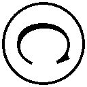

| やはり俺の青春ラブコメはまちがっている。10.5 (ガガガ文庫) | |
| 渡航 | |
| (2015) | |
小学館ｅＢｏｏｋｓ
やはり俺の青春ラブコメはまちがっている。
渡航
イラスト ぽんかん⑧
①そのうち、材木座義輝にでもできる簡単なお仕事がたぶん見つかる。
この地球上の誰もが知るように、千葉の冬はあまり雪が降らないことでおなじみだが、だからといって寒くないということには当然ならず、もちろん、冬なので寒い。なんなら下手な雪国よりもよっぽど寒いのではないかと思う。
もっとも、この一月末から二月にかけての期間を千葉以外の土地で過ごしたことがないので、実際のところはわからない。
比較対象として見えるのは温度計の数字だけなのだが、天気予報の気温表示が氷点下を示していても、それが実際にどの程度の寒さなのかは体験してみなければわからない。
逆に、ここ千葉においても温度計の指す数値がそれそのまま寒さの体感とは限らないのもまた真理。
世の中には体感温度という言葉がある。
実際に経験して、それを知覚し、学習し、初めて実感は生まれる。
その例に沿って言うのであれば、今現在、部室の壁に掛けられている温度計の数字と俺の体感気温とではいくらかの乖離があるように思えた。
最たる理由は目の前に座る一人の男子生徒だろう。
そいつは冬真っ盛りだというのに、全身からだらだらと汗を流し、口元をひきつらせては指ぬきグローブの甲でぐいっと額を拭う。
「......むぅ」
重々しい声で言うと、その生徒、材木座義輝はがくっと項垂れる。そうしていると、お気に入りらしいトレンチコートにすっぽり首が埋まり、なんだか前衛的なモニュメントみたいに見えなくもない。武蔵小杉あたりにある高級路線を勘違いしたタワーマンションのエントランスとかに置かれてそうだ。
たった一言口にして、それきり材木座は黙りこくってしまい、奉仕部の部室はまた静寂に包まれる。
俺と材木座のほかにも人はいるはずなのだが、どいつもこいつも我関せずとばかりに紅茶のカップを片手に文庫本を読みふけっていたり、お茶菓子をむしゃむしゃしながら携帯電話をいじったり、あるいはコンパクトミラーを覗き込んで前髪をくしくし梳ったりしている。
「......むーん」
またしても材木座が呟き、天井を仰ぎ見た。今度は先ほどよりも声に悲壮感が滲んでいる。だが、それでも応える者はいない。
だーれも反応しないのだが、材木座はその後も何度となく同じように繰り返し繰り返し唸っていた。
するとさすがに鬱陶しくなってきたのか、机の対角線上、向かい側から小さなため息が聞こえてきた。
ちらと視線をやれば奉仕部の部長、雪ノ下雪乃がカップをソーサーに置いて、こめかみのあたりを押さえている。
雪ノ下はちらっと材木座に視線をやり、その視線をそのまま俺にスライドさせてきた。
「......一応、用件を聞いたほうがいいのかしら？」
「えー......。でも、あたしたちが聞いても中二、ヒッキーとしか話さないし」
ぽりぽりと煎餅を齧りながら、けだるげな様子で答えたのは由比ヶ浜結衣だ。ぐでっと机に突っ伏すような姿勢のまま首を俺のほうへと向けてくる。
まぁ、雪ノ下にしても由比ヶ浜にしても、いくらか時間がかかったとはいえ、いきなり押しかけてきた材木座に反応してやるあたりはまだ優しいといえる。
問題はさっきから材木座をガン無視決め込んで、鏡とにらめっこしている一色いろはだ。ていうか、なんでお前いるの。まぁ、もういいけどさ聞かないけどさ。
一色は材木座に一瞥をくれることもなく、前髪のチェックの後はポーチからハンドクリームを取り出して、鼻歌交じりに手肌のお手入れを始める。一色の細い指先がクリームをゆっくり延ばすと、ふわとシトラスの香りが漂った。
そういや、一色と材木座の間に面識はなかったんだったか。
しかしまぁ、この様子では仮に面識があったところで、一色が材木座に話しかけることはあるまい。無論、逆もまたしかりだ。
となると......と、考えていると、机に突っ伏したままの由比ヶ浜が口を開いた。
「ヒッキー、聞いたげたら？」
その言葉に雪ノ下も、さも当然のことのように頷く。
「......そうね。もともと比企谷くんの担当案件だものね」
「勝手に担当決めんなよ......」
俺は戸塚担当略して戸塚担なんですけど？ うちわとか作ってライブに臨むくらいの戸塚ガチ勢なんですけど？ それにしても「戸塚担」を「とつかたん」とひらがな表記した時の可愛さは異常。
ともあれ、俺のほかに材木座とコミュニケーションがとれる人間はこの部室にはいない。面倒なことになると薄々理解しつつも、声をかけなければこいつはずっとここにいるだろう。
「材木座、お前何しに来たの......」
意を決して話しかけると、材木座はぱっと顔を上げ、心なしか嬉しそうな笑顔を見せる。
「おお、八幡か！ 奇遇だな！」
「いや、そういう小芝居いらないから......」
「はぽん、であるか。なに、ちょっと困ったことになってな......」
材木座は一度、そこで言葉を区切る。仕切り直すように座る姿勢を正したので、聞いてる側の俺も思わず背筋を伸ばした。
「我が編集者になろうか悩んでいる話はしたな？」
「ああ、もちろん初耳だ」
まーたこいつは突拍子もないこと言い出しやがって......。と思っていると、傍で聞いていた由比ヶ浜がぽつりと呟く。
「ラノなんとかじゃないっけ......」
ちゃんと反応してあげる由比ヶ浜は優しいなぁ。他の二人はほぼほぼ無視。さっきまで一応気にかけてくれていた雪ノ下も今の材木座の返答で聞く価値なしとみたのか、涼しい顔で文庫本のページをぺらりとめくり、読書に戻っていた。もともと興味ゼロの一色に至っては難しい顔してビューラーでまつげをぐにぐにしている。
しかし、由比ヶ浜の指摘ももっともだ。材木座の将来の夢はラノベ作家だったはずである。途中、ゲームライターになるなどと言い出した時期もあるが、その後、またすぐにラノベ作家志望にきりかえたはずだ。こんな短期間で言ってることが二転三転しちゃうとかひょっとしてこいつの適職は政治家なんじゃないの。
ともあれ、その心変わりの真意を問おうと材木座に視線を向けると、材木座は難しい顔で腕組みする。
「ふーむ、ラノベ作家はエンタメ界でも最底辺だからなぁ。何もなくて一人で始められて誰でもできる仕事。ぶっちゃけラノベ作家になっても誰も羨ましがらんし、ラノベというだけでゴミ扱い......」
言っている間こそ、材木座の表情はどんよりしていたが、くわっと目を見開くと、重々しい声を出す。
「......気づいたね、我は」
「な、なにを......」
きらりと光る眼鏡の奥の瞳に嫌なものを感じながらも、聞かないわけにはいかない。すると、がたっと椅子を激しく鳴らして、材木座が立ち上がった。
「書けば叩かれ、休めば消える！ 業界内では路傍の石！ そんな仕事をする価値はあるのかと！」
力強い声が部室の中といわず、頭の中にまでわんわん響き渡る。その反響が収まると、材木座はまたすっと着座し、部室には静謐な空気が戻ってくる。
あれだけ大きな声だったというのに、相変わらず部室内の反応はそっけない。それまで材木座の話を聞いてあげていた由比ヶ浜も気づけば携帯電話をいじり始めていた。
今や、材木座の話に耳を傾けているのは俺だけである。一人には慣れている俺ですが、こういう孤独感はちょっと苦しいです。
「そ、そうか......。詳しいな......」
なんともコメントに困る慟哭に返す言葉を言いあぐねて適当なことを口にすると、材木座がにやりと笑った。
「ネットで見たからな」
すごい。いんたーねっとすごい。いんたーねっとにはなんでもかいてあるなー。
今までのやり取りでも俺の満腹中枢はだいぶ刺激され、お腹いっぱいだったのだが、材木座のご高説はなおも続く。
「その点、編集者ならかっこいいぞう！ 安定生活でその上、クリエイティブ職だ、アニメの現場にも近かろう。これなら声優さんとも結婚できるというものだ！ フハハハハ！」
「てめぇの頭はハッピーセットかよってくらいおめでたい考えだな......」
クリスマスと正月と誕生日が束になって来たってこうはならん。なんならハロウィンとバレンタインデーも一緒に来るレベル。ていうか、「ハッピーハロウィン！」とか「ハッピーバレンタイン！」とか世の中普通に使ってるけどあれって何がめでたいの。バレンタインに至ってはバレンタイン司教の命日だぞ......。そのうちエイプリルフールもハッピーエイプリルフール！ とか言い出すんじゃねぇの。
昨今のなんにでもハッピーをつける風潮よろしく、材木座の思考も例に漏れず相当ハッピーでやばい。何がやばいってマジやばい。
そもそも最終目標が声優さんとの結婚というのがやばい。
ただでさえ、結婚率が低い時代だというのに、ラノベ作家ごときが声優さんと結婚できるわけねぇだろ、いい加減にしろ！
別に勘違いしたまま人生を無為に過ごして材木座が傷つこうがへこもうがどうでもいいのだが、これはちゃんと言っておかねばなるまい。同級生のよしみというやつである。
「材木座」
「な、なんだ......」
俺の声が無意識に低くなっていたせいであろうか、はたまた俺の気迫が声に漏れ出ていたのか、声をかけられた材木座が居住まいを正し、俺の目をまっすぐに見てくる。その瞳に、俺はゆっくりと語りかけた。
「お前、中学生の頃、こう思ってはいなかったか？ 高校生になれば彼女ができる、と」
「ぬっ！」
図星だったのか、材木座は額に脂汗を滲ませて押し黙る。そこへさらに畳みかけた。
「そして、今、お前はこうも思っているはずだ。大学生になれば彼女ができる、と！」
「ぬぬぬっ！ な、なぜわかる......っ!?」
聞かれるまでもない。その問いの答えは決まりきってる。
「誰もが通る道だからなぁ......」
ついついしみじみとした声が出てしまった。ええ、俺にもそう思っていた時期がありました。ほーんと小さい頃って身の程知らずというか世間知らずだからな。二五歳くらいには結婚して子供もいるんだろうなぁとか考えちゃうんだよな。それが中学高校と経るうちに、だんだんと世の中の仕組みや現実というのが見えてきて、実現可能な範囲に自身の理想像を下方修正していくのである。小さな夢も見れないこんな世の中じゃ......。
そんなことを思うと、ふっとニヒルな乾いた笑みが漏れてしまった。材木座もそれに同調するように重たく凝ったため息を吐く。
そこへ、こほんと、かすかな咳払いとともに小さな声が重なって聞こえてきた。
「誰もが、......そう」
「うーん............」
見やれば、本を読んでいたはずの雪ノ下がちらとこっちに視線やり、俺と目が合うとふいっとそれを背ける。かたや携帯をいじっていた由比ヶ浜の指はぴたりと動きを止め、小難し気な表情で固まっていた。
そして、部室はまた静かになってしまう。え、なにこの沈黙は......。
妙に居心地の悪い空間にそわそわしていると、一色がコンパクトミラーから視線を外し、俺たちをちらと見る。そして、ふっと短いため息を吐いた。
「......どうでもいいですけど、出版社って簡単に入れるんですか？」
ガン無視だったのでてっきり話を聞いていないと思ったのだが、一応、耳に届いてはいたらしい。
一色が言うと、ようやく空気の硬直が解けた。誰に問いかけたというわけでもないのだろうが、雪ノ下が首を捻る。
「出版社はかなり狭き門だと聞いた覚えがあるけれど......」
「へぇ～、大変そうだもんねぇ」
由比ヶ浜の返事はわかっているのかどうか怪しい感じだ。そもそも出版社が何する会社かわかっているかしら、この子......。
とりあえず由比ヶ浜のことは置いておくとして、雪ノ下の言うことももっともである。俺も大手マスコミ関係に就職するのはなかなかの難関だと父親から聞いた気がする。さて、そんなところへ挑戦する材木座さんの心中やいかに......と材木座のほうを見ると、存外落ち着いた様子だった。
「うむ。我もネットで調べてみたが、入社するのは大変らしい」
材木座はふむぅと唸りながら腕組みして首を捻った。
「しかし、解せぬのう......。いったい何が大変なのか......。ラノベの編集など寝ててもできるレベルだろうに。上がってきた原稿を読むだけの誰にでもできる簡単なお仕事に決まっておる。もしくは『小説家をやろう』の上位ランキングの連中に書籍化しませんかメールを送ればいいだけであろう？」
「お、おう......」
かつてラノベ作家志望者だったとは思えないレベルの暴言だが、まぁ、でも実際ラノベ編集者がどんな仕事をしてるのかなんてあまり知られてるもんじゃないし、こういう偏見が生まれるのも仕方ないのかもしれない。
普通に考えてラノベ編集者とか激務に決まってる。だって、材木座みたいな考えの底辺クソラノベ作家の相手しなきゃいけないとかそれだけでもう胃痛胸焼け山之内だろ......。ダメなラノベ作家ほど編集者のせいにしたがりそうだし。
「まぁ、まずは入社してみないことにはわからんな」
言うと、チッチッチッと材木座が舌を鳴らして、指を振る。鬱陶しいなこいつ......。
「就職対策ももちろん考えてある」
「ほう......。聞いてやろう」
「確かに新卒採用は大変だろう。だが、転職であれば話は別だ。我クラスともなると、どこかの編プロや弱小出版社に潜り込んで、そこから経験者採用狙いよ」
材木座がふふんとふんぞり返り、とても偉そうにドヤ顔で言う。そこまで自信満々だとなぜか説得力があるから不思議だ。
「おお、意外に考えてる......」
実際、由比ヶ浜があっさり騙されていた。
「いや、まずその編プロや弱小出版社にどう入るんだよ......」
絵に描いたようなキャリアプランだ。問題はその絵がスーパーデフォルメされた絵で現実味がまるでないところである。そのあたりの穴は雪ノ下も即座に見抜いたのか、眉根を寄せて難しい顔をする。
「中小の出版社はそもそも求人が出てないように思うけれど......」
が、都合の悪いことは聞こえないのが材木座イヤーだ。
「そこで、我は思ったわけだ。学生のうちから編集経験があれば、ガガガ文庫くらいなら即入社できるだろう、と......」
「ガガガを舐めすぎだろ......」
言ってもあそこは一応、天下の三大出版の一つ、小学館だぞ......。清々しいくらいに世の中を舐めきった発想だが、まぁ、それはいい。
問題はそのあとの発言だ。
「というわけで、編集経験を積むためにも同人誌を作ってみるのはどうだろうかと思ってな」
「ほーん、まぁ、頑張れよ」
「うむ......。だが我には一緒に同人誌を作るような『真の仲間』がいない......。同じものを見て聞くことのできる『真の仲間』が......」
「お、おう......」
なんだそのひどく胸がぞわぞわする単語......。なんか嫌な予感しかしないぞ......。悪寒に打ち震えていると、その震えを止めようとするかのごとく、材木座がぽんと俺の肩に手を乗せてくる。
そして、世界を照らすかのような明るい笑顔を向けてきた。
「で、だ......。八幡、一緒に作ろうぜー！」
「断る。というか仲間じゃない」
そんな『磯野、野球しようぜ！』くらいの軽いノリの情熱では俺の世界を照らせん。ここで永久離脱だ。課金してくれたら手伝ってやらんこともないけど。
「はちまーーん！ ずっと仲間だと思っていたのに！ なぜそんなひどいことばかり！」
ひどいひどいと連呼して材木座が憤る。そう毎度毎度材木座の面倒を見させられてたまるか。材木座の恨み言を聞き流していると、ぱたんとコンパクトミラーを畳む音がした。
視線を向けると、自分磨きだか身だしなみのチェックだかを終えた一色がポーチにミラーをしまっている。そして、人差し指を立て顎に添えると、うーんと考えるようにして首を捻る。
「あのー、同人誌って何ですか？」
「まぁ、簡単に言やぁ自主製作の本だな。自分たちで漫画とか描いてそれ本にすんだよ」
「......はぁ」
説明したものの、一色の頭上には疑問符が躍っているご様子だ。俺も別にその道のプロというわけではないので、どう伝えたらいいかちょっとわからない。
俺が言いあぐねていると、斜め向かいに座る由比ヶ浜が、はーいはーい！ と元気よく手を挙げた。
「あたし、知ってる！ コミケってやつでしょ？ 漫画自分で描いたりするやつ。こないだ姫菜がなんか話してた気がする」
「雑な理解だし海老名さんの趣味はちょっと特殊だからあれだが、まぁ、だいたいあってる」
言うと、今度は雪ノ下が納得いかぬというふうに小首を傾げた。
「漫画とは限らないでしょう。個人的には文芸方面のイメージのほうが強いのだけれど」
「ああ、そういうのもあるな」
というか、おおもとを辿れば彼の有名な文豪や大作家たちがやってたはずだ。『白樺』や『我楽多文庫』なんかは教科書にも載っているレベルだろう。
実際、漫画だけでなく、評論本とか考察本、あるいは写真集だったりと、同人誌の範囲は多岐にわたる。ジャンルの区分けだけでなく、内容だって千差万別だ。
さらに一口に評論といっても軍事評論本から前期クールアニメ総括評論本、果ては日曜アニメのじゃんけん必勝本なんかも存在したりする。さらに、もう少し大きく同人活動というくくりでいうならば、本だけでなく、コスプレや自主製作アニメ、音楽、ドラマＣＤやキャラクターグッズ製作など、まぁ、本当にいろいろある。
そのあたりのことを搔い摘んで説明すると、一色がこくりと頷いた。
「はぁ、コミケですか......。そういえば、聞いたことがあります」
知っているのか、雷電。まぁ、最近じゃテレビでも特集組まれたりするから、コミケの存在くらいは知っていてもおかしくない。
が、どうやら一色の知識は偏っていたらしい。
「なんか超儲かるんですよねー？」
きらっと瞳を輝かせ、軽く身体を傾けて興味津々前のめりの上目遣いで問うてくる。その仕草は純真無垢な清らか乙女なのに、言っている内容が最悪なんだけど、この子......。
「いや、そういうわけでもない。大抵は採算度外視でやってるらしい」
そもそも前提として、同人誌は「好きだから作る」のであって、利益を出すことを目的としていない、ということのようだ。いや、俺も詳しくは知らないけど。まぁ、実際同人誌を作るサークルの多くは、よくて行って来いのトントンでプラマイゼロ、諸経費含めて赤字になることもままあるらしい。
「......儲からないのに、......やる？」
言ったきり、一色はうーんうーんと唸って頭を抱え始めた。どうやら理解に苦しんでいるようだ......。
「趣味の世界、ということね」
雪ノ下がふむと頷く。まぁ、紅茶だのパンダのパンさんだの猫グッズだのとそれなりに趣味にお金をかけていそうな雪ノ下からすれば、案外しっくりくるのかもしれない。
「でも、なんかすごいね、そういうの」
ぽりぽりお菓子を食べながら言われてもあんまりすごいと感じているようには聞こえないが、由比ヶ浜なりに感心しているようだ。はえーと嘆息を漏らす。
「同人活動自体は別にそう珍しいもんでもない。というか、なんか本を作りたがるのはオタクに限ったことでもないだろ」
「そうですかー？」
一色は未だに納得いっていないようで、答える声もどこか訝しげだ。一色のように同人誌などの文化に縁遠い人間からすればそう感じるのも無理はない。
だが、似たような例なら他にもあるのだ。
「よく大学生が作ってるフリーペーパーとかあるだろ。あれだ、あれ」
言うと、由比ヶ浜がぽんと手を打つ。
「学祭の時とかよく配ってるやつだ」
「......あー、それならわかります」
一色もイメージできたのか、うんうん頷く。
「だろ？ つまり、フリーペーパーってのは意識高い系同人誌なんだよ」
「そう聞いてしまうと一気に胡散臭く感じられてしまうけれど、言い得て妙だわ......」
嫌なことを思い出しでもしたのか、雪ノ下がこめかみをぐっと押さえる。奇遇だな、俺も意識高い系という言葉を口にしてからちょっと頭がぼーっとしてきた気がする。
「ともあれ、フリーペーパーについて若干のバイアスをかけてしまったかもしれないが、一定のコンセンサスを得ることはできたと思う。無論、一口にフリーペーパーといっても、ケース・バイ・ケースなので、明確なアグリーメントを得るためには今後もインフルエンサーとして、トライ＆エラーを重ねて結果にコミットしていくしかないな」
「先輩、何言ってるんですか......」
一色がドン引きしていた。心なしか、椅子が数センチ後ろに下がったようにも見える。
「ああ、すまん。ちょっと一瞬意識が高くなってな......」
「遠くなったほうがよほどマシに思えるわね......」
雪ノ下が呆れたようにため息を吐く。
いずれにしても、趣味のもの、という点においては共通している。
フリーペーパー作ってる連中も同人サークルとほとんど変わらん。つまり、あれは「意識高い系」というジャンルのオタクなわけだ。
言ってみれば、ジャンルの数だけ、人の数だけ同人誌がある。
「で、どんな本作るつもりなんだ？」
問うと、材木座はしばし沈思黙考。そして、顔を上げるときりっとした表情で口を開いた。
「ふむ。やはり小説かなと。......我、特に詳しいこととかないし、絵描けないし」
理由が残念すぎる。
絵が描けないからラノベ作家になる！ っていう黄金パターン、そろそろやめませんか......。せめて就職できそうにないからラノベ作家になるとかそういうまともな理由で目指してほしい。
「結局ラノベか......。ラノベ書きたいなら今ネットでいくらでも発表できるだろ。それこそお前がさっき言った『小説家をやろう』とか。むしろあっちのほうが、今デビューの確率高いんじゃねぇの」
俺にしては珍しく、材木座に対してずいぶんと建設的なアドバイスを送ったつもりだったのだが、材木座の反応は鈍い。
「うーむ......。我はあまりアレが好かんのだ」
「なんでだよ。いいじゃん、今巷で大人気なんだろ？ 異世界転生チーレム無双」
「......は？」
言った瞬間、一色が「何言ってんだこいつ......」みたいな感じの低い声を出す。
なんだよ、その表情、ムカつくな......。俺、今なんか変なこと言った？
と思ったら、やっぱり変なこと言ってたみたい。
女性陣が椅子をガタガタ動かして寄り集まり、ひそひそと審議を始める。
「い、せか？ ちー？ 今なんて言ったのかしら......」
「ちーれむ、って......なに？」
「なんかチーたらみたいですよねー？」
おつまみの趣味が渋いな、一色。
異世界転生チーレム無双とは、主人公が異世界に転生してチート能力で無双し、ハーレムを築く話だ。やべぇ、説明しようと思ったけど全然意味わかんねぇなこれ。
まぁ、こういうのは好きな人が読んでくれればいいものであって、興味がない人に無理やり教えるものでもなければ、すべての人に理解してもらおうというものでもない。
異世界転生チートもの、そもそもライトノベルなどその手のものは、好きな人に喜んでもらえればいいのだ。
まぁ、ラノベに限った話ではない。
何だってそうだろう。言葉だって気持ちだって。
喜ばせたい相手や伝えたい相手にさえ届くのであれば、それでいい。
でも、材木座さんにはなんでだか、全然伝わらないんですよねー。
今も材木座は俺たちの話そっちのけで手足をじたばたさせ何かを必死に訴えていた。
「ええい！ そういうことではない！ 人気だとか客受けとかそういうことではなぁい！ 我はそういうのまったく気にしないしぃ、全然気になってないしぃ！ ただ、その、なになんていうのぉ！ 順位づけとかぁ、ランク付けとかぁ、我、そういう枠に嵌められるのが嫌いだからぁ！ 我の作品をディスプレイの前で判断されたくないっていうかぁ！」
一瞬かっこいいことを言っているのかと錯覚しかけたが、言葉の端々に気になる単語が躍っている。そこから浮かび上がる答えは一つ。
「あー、あれ、ランキングが出ちゃうんだったっけか。まぁ、自分の作品の不人気ぶり見せつけられるのはちょっときついか」
「否！ 断じて否！ 我はランキングや順位や数字やレビューなどまったく気にしておらんぞ！ ランキングなんてただの目安だ！ あとは勇気でカバーだ！」
材木座が勢い込んで言うが、やっぱり勇気だけではカバーできないものもある。材木座が何を気にかけているのか透けて見えるどころか、スケスケだぜ！
「......そうか。実際に投稿して心を折られたのか」
「大した進歩ね。アレを人前に出すなんて相当な覚悟が必要だったでしょうに」
「そうそう、勇気ある勇気ある」
雪ノ下も由比ヶ浜も驚き半分感心半分といった感じで材木座を褒めるが、一応、二人とも褒めてるんだよね？ ね？ ちょっと高度な皮肉なのかなーと思っちゃったぜ！ ていうか、雪ノ下のは考えるまでもなくただの皮肉だったぜ！
しかし、俺は材木座を褒めてもいい気分だった。
新人賞への投稿はおろか、ろくに原稿を完成すらさせられなかった男がネット上とはいえ、人目につくところへ作品をアップしたのだから。アレを読んで俺以外にも苦しむ奴が現れるのかと思うと、ほんといい気味だなって思います。みんなもっと苦しめばいいんだ。全員が苦しめば世界はきっと平和になる。
と、思ったのだが、材木座がちゃうちゃうとばかりに軽い調子で手を横に振った。
「いや、投稿はしておらん。酷評されてる他作品を見てそう思っただけだ」
「あ、そう......」
どうやら世界平和にはまだ遠かったらしい。
さすが材木座だ。ヘタレワナビの称号はだてじゃない。いや逆に考えれば、他人の作品がボロカス言われてる様を見てそれだけ感情移入できるのはかなり感受性が高いといえる。うーん、案外作家向きかもしれない......。
しかし、ラノベ作家にとって最も必要なものは感受性ではないと個人的には思う。文章力でもない。構成力や発想の豊かさでもない。
俺が思うに、必要なのは鋼のメンタルだ。
何を言われても負けない、まったく売れなくても心折れない、ブログやツイッターで余計なことを言わない、多少売れても調子に乗らない、偉い人たちから馬鹿にされても挫けない、いろいろなアレやコレやで揉めに揉めても手を上げない、いろいろなアレやコレやが悲惨な状況の時は直視しない、自分の実力を過信しない、そもそも自分のことを信じない、常に頭上にのしかかってくる将来や老後の不安については考えない、泣きたくなるようなロンリナイ、嬉しいお知らせがあってもけして期待しない、よそ様の数字は気にしない、書けなくなっても投げ出さない、締め切り間際でも逃げ出さない、周囲への感謝の気持ちを忘れない。
このナイナイシックスティーンこそがラノベ作家に必要なメンタリティ。
メンタルの強さ。それが、一番大事。『妹さえいればいい。』っていうラノベ作家ラノベにそんなこと書いてあった気がする。いや、書いてなかったかもしれない。たぶん書いてねぇな。
でも、材木座は別にプロじゃないし、根性なしなのはよく知ってるから、なるべく面倒じゃない方向へ誘導していかないとね！ 材木座のメンタル豆腐すぎて、今の時期は鍋物がおすすめまである。
俺は居住まいを正すと、咳払いを一つする。そして、普段よりいくらか落ち着いた声音でゆっくりと語りかけた。
「材木座、たぶんお前の作る同人誌は一冊も捌けない。その現実を見るのもそれはそれで辛くないか」
その様をありありと思い浮かべることができたのか、材木座はうっと言葉に詰まった。夏場や冬場、暑さ寒さに耐えながらブースに一人じっと待機し、隣のブースがコスプレ売り子と仲良くよろしくやっている声を聞き、向かいのサークルに長蛇の列が並ぶ姿を眺め、一向に減らない自分の同人誌から目を背けるためにひたすら虚空を見上げる......。そんな状況、材木座に耐えられるだろうか。否、断じて否。
やがて、材木座はがくりと肩を落として、絞り出すような声で言った。
「......一理ある」
「編集者目指すんだったら同人誌作るんじゃなく、他の方法考えたほうが建設的だぞ」
「ふむ......。なるほどなー......」
心が折れたおかげなのか、俺が畳みかけると材木座は素直にそう応じる。よしよし、これで材木座の同人誌づくりに付き合わされることはなさそうだな......。
声の大きかった材木座がおとなしくなると、とたんに部室は静寂に包まれる。一段落ついただろうかと俺が安堵の息を漏らすと、ばりっとお煎餅を齧る音がした。
「でもさ、編集者ってどうやってなるの？」
由比ヶ浜がもぐもぐしながら言うと、材木座がはっと顔を上げる。
「うむ。確かにな......」
そう言われてしまうと、俺もちょっと気になってくる。
「ちょっと調べてみるか......」
材木座曰く、ネットには何でも書いてある。書かなくていいことも書いてある。
「雪ノ下、パソコン使わせてくれ」
「......うちはパソコンルームではないのだけれど」
ぶつぶつ言いながらも雪ノ下は立ち上がると、ノートパソコンを引っ張りだし、てきぱき準備をしてくれる。
さっそくグーグル先生にいろいろ聞いてみようと、ノーパソに向かい合うと、がたっと俺の隣に椅子が置かれた。
そちらを見やると、雪ノ下が右隣に座り、カバンからいそいそと眼鏡を取り出し始めた。
艶やかな黒髪をそっと搔き上げると、まるでティアラをつけでもするかのようにゆっくりと眼鏡をかけた。
細くしなやかな指先がフレームからゆっくり離れる。長い睫毛は瞬きすると、レンズに触れそうにすら見えた。準備を終えた雪ノ下は誰に向けるともなく小さく頷いて、ノートパソコンを覗き込もうと、静かに椅子を引いた。
すると、はらりと髪が流れ、サボンが香る。
近い......。
すぐ傍に陣取られているのがどうにもむず痒く、気持ち椅子を左にずらそうと身をよじる。すると、ふわりとほのかに漂う柑橘系の香水の匂いが鼻孔をくすぐった。
いつの間にか左側に回り込んでいたのは由比ヶ浜だ。
机に顎を乗せんばかりに身体を前に倒すと、肘と肘が軽くぶつかり、そのたびにお互い譲りあうように視線をちらちらと交錯させた。
それで場所を譲ってくれるのかと思えば、由比ヶ浜はこそっと目を逸らすだけで、位置は変わらない。じゃあ、こっちが身体をずらそうかとすれば由比ヶ浜のスカートと俺のブレザーの裾がこすれるような感触がして、身動き取れなくなってしまう。
......近い。
さらに、背後にも気配がある。
きゅっと上履きのゴムが床を鳴らした。
首だけめぐらせてみると、一色が後ろに立っている。そして、俺の肩口からひょいと顔を出し、パソコンの画面を見ようと覗き込んできた。
軽く体重をかけているのか、肩に乗せられた小さな手の感触と体温が妙に気にかかり、浅い息遣いも耳に届く。おかげで背筋にぞわりとしたものが走った。
......だから、近いっつーの。
両隣と背後を取られてしまうと、もう前のめりになるほかない。
だが、その真正面さえも封じられていた。
材木座は俺の真ん前へやってくると、妖怪大入道のように、ぬーんと上からノーパソを見下ろしてくる。
近い、離れろ。
ほぼ全方位から妙な圧力を受け、肩を縮こまらせながら、思いついたキーワードをかたかた打ち込む。すると、即座に数多の検索結果が表示された。
「就活サイトに就活掲示板......、はぁ、出版系就活予備校ね......。いろいろあんだなぁ......」
「あ、ヒッキー、これは？」
めぼしいものをいくつかチラ見していると、由比ヶ浜が身を乗り出してきて画面を指差した。すると、雪ノ下もこっち側に首を傾けて、由比ヶ浜の指差した項目を読み上げる。
「成功体験記......。実際に出版社の内定をとった人のブログ、みたいね。いいんじゃないかしら」
「先輩、はやくはやく」
一色がとんとん肩を叩いて急かしてくる。だから、お前ら近いんだよ、背中に変な汗かいてきちゃうからもう15センチほど離れてくれないかなぁ......。
どうしたものかとちらと視線を前にいる材木座に向けると、材木座は大きく頷いた。
「うむ、よかろうなのだぁ！」
「......んじゃ、これ見てみるか」
指示されたリンクをかちっとクリックすると、その成功体験記とやらのトップべージへと飛ぶ。
ヘッダーにはでかでかと、『絶対トップ内定！ ケンケンの出版社就職活動〝成功〟体験記!!』とタイトルが記されていた。
「......なぁ、トップ内定ってどういう意味だ。内定にトップとか最下位とかあんの？」
「少し待ちなさい」
言うと、横から雪ノ下がひょいと手を伸ばし、別タブを開いてトップ内定云々について調べ始める。その間、長い黒髪が俺の手の甲にあたったり離れたりしてくすぐったい。自然、手を引っ込めて膝に置き、お行儀よく待てのポーズをとってしまう。
その検索結果が表示されると、ついっと指差した。
「公表はしないものの、社内的には内定者は順位づけされるようね。で、そのトップがトップ内定者。その人は入社時から幹部候補生として扱われ配属時にも有利になる、......らしいわ」
「なんかもう、その幹部候補生って言葉だけで不安になるな......」
ブラック臭半端ねぇ。「アットホームな雰囲気」とか「若い世代が活躍してます！」くらい不安を煽られる言葉だ。ケンケンさんの末路が心配になってくる。
さて、それじゃあ怖いもの見たさついでに、そのケンケンさんとやらがトップ内定で見事出版社の社畜になれたのか否か、彼の栄光の軌跡を辿らせてもらうとしよう。
ついーっと画面をスクロールさせ、順々に読んでいくことにした。
『絶対トップ内定！ ケンケンの出版社就職活動〝成功〟体験記!!』
このブログでは出版社トップ内定までの道のりを、順を追って綴っていきます！
All rights reservedkenken
１、エントリーシートを書く。
ＥＳとも略されるアレですね（笑）。
略歴や職歴、志望動機など定番の質問項目のほか、作文や三題噺、最近気になったニュース、今注目している三人、一番恥ずかしかった失敗談etc....といった各社独自の項目が設けられています。中にはページ半分白紙で、『このスペースを自由に使って自己アピールしてください』などといったやや変わり種の項目もあります。
ＥＳは就職課に過去のサンプルが保管されていることもありますし、ゼミやサークルの先輩に見せてもらうのも有効な対策の一つでしょう！
補足として、略歴についてですが......。
最近は大学名を書かせないエントリーシートも多くあり、必ずしも学歴フィルターがかかっているわけではありません。むしろ、私はそもそも学歴フィルターというものの存在自体に懐疑的なスタンスでして、有名企業から内定をもらう学生の多くが有名大学の学生なのは、そのブランド力によって選ばれているのではなく、選ばれるに足るポテンシャルを秘めた人物が有名大学に通っているというだけのことなのではないかと思います。
バイアスをかけず、よりフラットに個人のパーソナルを評価していく試みは今後多くの企業で採用されていくのではないでしょうか。
逆に言えば、我々就活生も、企業をブランドやネームバリューで判断するべきではないのでしょう。企業から選ばれる側であると同時に、企業を選ぶ側の立場でもあるという意識が成功の秘訣かも。
私から皆さんにこの言葉を送ります。
『深淵を覗くとき、深淵もまたこちらを覗いているのだ』（ニーチェ）
ほう......、なんだかぱっと見、まともそうなこと書いてるな。ていうか、ニーチェの言葉をケンケンから送っちゃうのかよ。素直にニーチェから送ってもらいたかったわ。
一緒に眺めていた雪ノ下もふむふむ言いながら読み進めている。ただ、由比ヶ浜と一色はうえーといった表情で、若干引き気味である。
「字多い......」
由比ヶ浜がぽつりと漏らす。お前、そんな理由で挫けてたらコナン読めねぇぞ。文字多くても面白いものは面白いんだからね！
とか思っていると、俺の肩がトントントンといらだたしげに叩かれた。
「なんかイラッときますね、これ......」
一色が不満もあらわに言うと、なおも指先で俺の肩を叩く。うん、俺にあたるのはやめましょうね？
だがまぁ、一色の気持ちもわかる。というのも、この文章、妙に鼻につくのだ。
なぜこうも上から目線なのかは謎だが、意識高そうな大学生はこういう物言いをするのかもしれない。こういう人たちがいっぱいいるのかと思うと、大学行くのちょっと嫌になってくるな......。
それにしてもこのケンケンとやら、のっけからだいぶ飛ばしている。この先の日記もこんなやる気満々だと読む気が失せてくるぞ。こんなやる気満々なのキンキキッズと吉田照美くらいなんじゃないの。
「ふむ......。なるほどな。だいたいわかった。八幡、次へ行こう！」
材木座が本当にわかっているかは怪しいが、頷きを返して、俺は次のページをクリックした。
２、筆記試験
一般常識問題を出題する出版社が多いですが、まれにＳＰＩを課してくる会社もあります。どちらも問題集が売られているので事前に対策しておきましょう。ＳＰＩは一般企業では必須です。また、転職組でもＳＰＩを受けさせられることがあるようです。対策しておいて損はしないでしょう。筆記について、個人的な感触としてＳ社やＫ社は広く採るための良問、Ｋ書店は落とすための悪問が多かった印象です。Ｋ書店を受ける方はご注意を！
平静を装っているようで、滲みでるＫ書店への怨念......。このケンケンとやら、察するにどうやらＫ書店の筆記試験には落ちたらしい。
「八幡、ＳＰＩとはなんだ。スパイか」
材木座の声が上から降ってくると、由比ヶ浜が反応した。
「なんか雑誌じゃなかったっけ？ やっぱ出版社だから読まなきゃいけないの？」
「お前が言ってるの『ＳＰＡ！』だろ......」
なんだよ、『ＳＰＡ！』の試験って。『本当においしい餃子店トップ30＠新橋を答えよ』とか質問されちゃうの？ でも、出版社の筆記試験ってクイズ王みたいな問題出そうだからあながち否定できないのが怖い。
しかし、俺もＳＰＩ試験とやらのことをよく知らないので答えあぐねていると、雪ノ下がそっとパソコンに手を伸ばす。また別のタブを開き、ＳＰＩについて調べ始めた。
やがて、お目当てのページを見つけだすと、顎にそっと手をやり、ふむと頷く。
「ＳＰＩというのは簡単に言うと適性検査のことみたいね。論理的思考力や計算力、言語能力といった能力検査と性格診断でその人の人物像を測る、といったところかしらね」
中指で眼鏡をくいっと上げながら、雪ノ下が要点をまとめて説明してくれた。だが、由比ヶ浜にはあまり通じなかったようで、ほけーと口を開いている。
「へー......。あ、心理テストみたいなやつ？ それならあたしもわかる！」
由比ヶ浜は明るい調子で言って、軽く首を曲げて雪ノ下のほうを向く。すると、何かを諦めたように雪ノ下の首が反対方向へ向けられた。
「......まぁ、そういう理解でいいんじゃないかしら」
「いや、絶対違うだろ」
「雪ノ下先輩、説明諦めないでくださいよ......」
一色に言われて雪ノ下も思い直したのか、瞑目してあれこれ考えだす。
「そ、そうね。ちゃんと言い方を考えれば由比ヶ浜さんにも伝わるはずよね。由比ヶ浜さんに伝わるように......、由比ヶ浜さんに伝わるように......」
小声でぶつぶつ言いながら真剣に考える雪ノ下の姿を見て、由比ヶ浜がかくりと肩を落とした。
「ゆ、ゆきのんの優しさが、ちょっと苦しい......」
まぁ、自分が受けたことのない試験の説明をするのも、それを理解するのも難しかろう。こればっかりは実際に経験してみないことにはわからないことだ。いずれ就職活動をする時には嫌でもやらなきゃいけないんだろうし。はぁ、ほんと就活とかしたくねぇなぁ......。
しかし、筆記試験は対策ができるだけまだマシだといえる。
就活における難関といえば、この後に控える「面接」だ。
さぁ、我らがケンケンはこの難所をどう切り抜けたのか。お手並み拝見とばかりに次の項目を読み進めることにした。
３、一次面接
集団面接でやる場合もあります。
Ｋ大の奴がやたらしゃしゃって来てすげーうざかった。あいつのせいで落ちたまである。一生恨んでやる。
第三の項目はそれだけしか書かれていなかった。急に説明がぞんざいになったな、ケンケン。でも、その割りに恨み言だけはしっかり書いてあるな、ケンケン。
あまりに薄っぺらい内容に材木座もディスプレイを矯めつ眇めつ何度か見る。
「おーん？ 八幡、他には何も書かれとらんのか？」
「みたいだな。次行くぞ」
さすがにたったこれだけの情報だと大した感想を抱くこともない。
雪ノ下たちに一言断ってから、次のページへ遷移しようとマウスを動かし、かちかちクリックした。
４、二次面接
志望動機を答えた時、「はい、よく言えましたねー＾＾」と煽ってきた某Ｆ社の奴。たぶん編集長クラスだけど。あいつは絶対に許さん。
もはや、説明はほとんどなく、恨み節だけが記されていた。
だんだんと雲行きの怪しくなってきたケンケンの就活体験談を読んでいると、乾いた笑いがこみあげてくる。
隣からは雪ノ下のため息が漏れ聞こえてきた。
「だんだん具体的な情報が少なくなってきたわね」
「むしろ、余計な部分が具体的になってますね......」
一色も呆れた様子で苦笑する。
二人が言うように、明らかに内容も薄くなってるし、ケンケンとやらはこのあたりでちょっと挫けてきているのかもしれない。これを読んでいる俺も若干挫け気味である。就活って大変そうだなぁ......。
だが、まだ二次面接。体験記にも先があるようだ。
俺は一度大きく伸びをして気合いを入れると、次のエントリー項目へと進んだ。
５、三次面接
圧迫面接。Ｋ社は役員のおっさんが一〇人くらい並んでてやばかった。二〇人くらいいたかもしれない。やばかった。
もはや恨み言ですらなかった。最初の勢いはどこへやら、既にケンケンは虫の息である。むしろ、どんな内容であれ、これをちゃんと書こうとしたその精神力を褒めたいくらいだ。
わざわざ圧迫面接と書いてあるあたり、相当なプレッシャーを感じたのだろう。この短い文章でも、とにかくやばかったという恐怖と絶望がひしひしと伝わってくる。
俺たちには想像することしかできないが、会社役員たちとの面接とか超大変そう。取締役だの執行役員だの専務だの常務だのと立派な肩書きで、それなりに年齢重ねた偉いおじ様たちが黒いスーツ着てずらっと並んでるとか、それほぼゼーレみてぇなもんじゃねぇか。インパクトあるどころかサードインパクトまである。
「なんか、大変そう......」
そう呟いた由比ヶ浜の声は同情と悲哀に満ちていた。かくいう俺も、今なんだか切ない気分です。
「まだ、続きがあるようね......」
雪ノ下が少々辛そうに言う。その声は聴きようによっては、ここで見るのをやめるよう促しているようですらあった。
しかし、ここまで来てしまったら最後まで見る、いや、見届けるべきだろう。俺は震える手でマウスを操作し、最後のエントリーをクリックした。
６、最終面接
最終はただの意思確認だから落ちないとか噓吐いてたマス研の奴ら、ふざけんなよ。普通に落ちるじゃねぇか。
体験記はそこで終わっていた。
いったいケンケンはどうなってしまったのだろうか。彼の行く末を考えると胸が締め付けられる。
それは俺だけではないようで、みんなも深い深いため息を吐いていた。
一人の人間の人生の縮図を垣間見てしまった後ろめたさや、就活戦線の厳しさを目の当たりにしてしまったやるせなさ、そういったものもあっただろう。
だが、何よりも、そりゃこんな体験記書く奴とは一緒に働きたくねぇわという納得が大きかったと思う。最初はノリノリで書いてるのに、後半ほぼ恨み言か愚痴なんだもん......。
「あの......、ていうか、この人、受かってなくないですかねー？」
一色が遠慮がちに言うと、由比ヶ浜もはっと気づいて、ディスプレイを二度見する。
「......ほんとだ！ 成功体験記って書いてあるのに！」
「ああ、そりゃあれだ。こういうのは成功とかってとりあえず書いとくんだよ。引き寄せの法則っつーか、意識高い系の好きなイメトレみたいなもんだな」
「それはもうイメージトレーニングというより自己啓発の類いだと思うのだけれど......」
雪ノ下がこめかみを押さえながら言う。まぁ、でも就活ってどこか自己啓発っぽい部分があるからなぁ......。さっきちらほらネットサーフィンして見た限りじゃ、自己分析だの自己ＰＲだの成長意欲だのといったキラキラした言葉が並んでいた。企業が求めているのが 剌とした不撓不屈の強い精神力を持つ人材だろうから仕方ないのかもしれないが、皆が一様に明るい人間性を見せようとしているのが、なんとも不自然で怖い。
剌とした不撓不屈の強い精神力を持つ人材だろうから仕方ないのかもしれないが、皆が一様に明るい人間性を見せようとしているのが、なんとも不自然で怖い。
この分じゃ、俺が働けるフィールドはなさそうですね......。と、労働意欲のメーターをぐーっと下げていると、前に立っていた材木座が小声で話しかけてきた。
「八幡、マス研とはなんだ、ちば犬みたいなものか」
「いや全然似てねぇだろ。お前、ちば犬がどんなのか知ってて言ってんのか」
ちば犬はちば環境再生基金のマスコットキャラクターで、千葉県の形を犬に見立てて図案化したものだ。そう言ってしまうとチーバくんと被ってるように思われるかもしれないが、これがびっくりするくらいまったくの別物なのである。ちば犬は名前に犬と入れている割りに犬感の無さが半端ない。むしろ、犬に似た不思議動物を名乗るチーバくんのほうがよっぽど犬らしい。ほんと千葉のセンスってどうなってんだよ。ロックすぎるぞ、この県。
話を聞いていた雪ノ下がふむと首を捻る。
「まぁ、マスコミ研究会の略でしょうね」
「研究......。なんか実験とかすごいことやってそう」
由比ヶ浜がぼーっと天井のあたりを見つめて呟いた。おそらくは、研究という言葉からいろいろ想像しているのだろう。でも、ガハマさんがイメージしているような、白衣着てフラスコやビーカー振ったりするのは違うんじゃないかな！
しかし、一口に研究と言っても具体的に何をやっているかイメージがしづらいのは事実だ。科学技術や歴史であればおぼろげながらも想像はできる。だが、マスコミの研究となるとちょっと思い浮かばない。
「......ついでだ、マス研とやらも調べてみるか」
「うむ。よきにはからえ！」
材木座がクラーク博士のようにバサッとコートをはためかせて力強く同意してくれたので、さっそくグーグル先生に教えを乞うことにした。
適当な大学名の後にスペース開けてマス研と打ち込んでみる。
すると、出るわ出るわ意識高い系発言のオンパレード。スーツ姿の写真入りの自己紹介には座右の銘と熱い自己アピール、そして、仲間たちからの応援コメントがわんさかくっついている。
さらにインド旅行に富士山登山、果ては就活セミナー合宿のＢＢＱ写真と、いったい何を研究しているのかさっぱりわからん。
直視に耐えないので薄目で流し読みしていると、だいたいわかってきた。
要するに、テレビ局や新聞、出版社なんかへの就職を希望する連中が寄り集まって情報交換したり、就職必勝法を教えあったりするサークルらしい。
「な、なぁ、八幡。出版社に入るには、このマス研というのに入らねばならんのか？ 絶対か？ 本当にか？」
ＨＰに掲載された楽しげなお写真を見た材木座がおろおろし始める。
「まぁ、絶対ってことはないんじゃねぇの。むしろ、このＨＰ見てる限りじゃ、入らないほうがマシな気さえしてくるな......」
マスコミ研究会や広告研究会を標榜するサークルも、きっと中にはちゃんとやっているところもたくさんあるのだろう。
だが、その意識高い系っぽい響きを聞くと、どうしても海浜総合高校の生徒会長玉縄氏の顔がちらついてしまって、あまりいいイメージを抱くことができない。
さらにそのサイトを眺めていると、気になる文言を見つけてしまった。
「......これ、そもそも材木座入れないんじゃねぇかな」
「む、なぜだ」
ディスプレイの一角を指さす。そこにあるのは、入会試験の文字だ。一般常識問題の筆記試験と部長以下数名による面接の実施、とある。
「なんかこのマス研たらいうサークルに入るのに筆記試験と面接あるらしい」
該当箇所をとんとんと指で叩いて示してやると、後ろからひょこっと一色が覗き込んできてふーんと興味なさげな声を出す。
「あー、じゃあ無理ですねー」
「うむむ......。八幡。我、面接は、ちと不得手でな......」
「知ってるよ」
充分すぎるくらいにな......。かくいう俺も面接は苦手です。一時期はなんてことないバイトの面接でさえ平気で落ちるので、バイトをバックれるどころか面接そのものをバックれたりもしたものだ。
過去の自分のほれぼれするほどのダメ人間ぶりに思いを馳せていると、後ろから目いっぱい腕を伸ばしてノーパソをいじっていた一色が、はーと何か納得したような声を出す。
なんかあったかと視線で問うと、一色は軽く頷いた。
「逆に結衣先輩は余裕で受かるんじゃないですか？」
「へ、なんで？ あたし、試験とかすごく苦手なんだけど......」
急に自分の名前が出たことに驚いたのか、由比ヶ浜は頓狂な声を出す。おめめぱちくりしながら一色を見ていると、一色は画面をつつーっとスクロールさせた。
「あ、いえ。このサイトの写真見る感じだと、自分たちに似たノリの人とか可愛い人入れてるっぽいですし、なので余裕かなーと」
「まぁ、納得だな」
筆記はさておくにしても、面接に関してなら由比ヶ浜は得意そうだ。ああいうノリノリイケイケな連中ともコミュニケーションがちゃんととれるだろう。
一色の言にうむと頷きを返すと、評価されたことが意外だったのか由比ヶ浜はほのかに頰を染め、お団子髪をくしくし撫でながら、ちらちらとこっちを見てくる。
「そ、そう？」
「ああ、由比ヶ浜ならこの妙にムカつくノリに合わせられそうだ」
「そんな理由!? なんか喜んで損した......」
由比ヶ浜は肩を落としてふいっとそっぽを向いてしまう。あ、いえ、別に可愛くないと言っているわけではまったくなくてですね、ええ。こういういかにもなイケイケ大学生ノリに合わせることも君ならできるだろうなと思っただけでして、はい。ただ、どうなんだろうなー。あまりこういうサークルの雰囲気とかに呑まれるのは良くないんじゃないかなー！
「まぁ、あれだ。なに、外見も評価されるだろうけど中身が大事というか......。むしろ、外見とかノリを判断基準に置いちゃうサークルには入らんほうがいいだろ、たぶん、わからんけど」
「え？ うーん、まぁ、それは。うん......」
由比ヶ浜はいまいち納得いっていないようだったが、しぶしぶ頷き、こちらに向き直ってくれる。その一部始終を聞いていた一色が呆れたようにぽそっと小声で何か言い出した。
「......先輩、フォロー、超下手ですね」
ほっとけ。フォローうまかったらバイトの面接バックれたりしてねーっつーの。
「中身、か......。それでいうと同じような価値観の人たちばかりが集まるのはどうなのかしらね。画一的で閉鎖された独占状態で成長が望める気はあまりしないけれど......」
傍で聞いていた雪ノ下がちらとサイトに視線をやって、訝しげに口を開く。
すると、材木座がぽんと手を打った。
「......はぽん。それはつまり、例えていうのならば、特定の超巨大出版社がゲーム雑誌を独占しているため他社版権のゲームはパブを取りづらくて大変だからとゲーム化を断った某ゲーム会社のプロデューサーが、そのくせほぼ同じ時期にまた違う某出版社原作のゲーム化はあっさり受けてそのゲームが大爆死！ ......みたいなことだな？」
「とても難しいことを言っていて俺にはさっぱりわからんし、全然違うことを言っていると思うが、たぶんそういうことだ」
さっぱりわからん略してさぱらんとばかりに適当に話を合わせていると、材木座は大まじめに頷く。
「やはりそうか！ ネットには真実が書いてあるからな！」
マジかよネットすげえな。どうやって調べたらそんな情報出てくんだよ。この検索名人め。しかし、これからの時代、検索のエキスパートは必要な気がする。現代的な才能だな。
ある意味逆に感心していると、材木座はなぜかメラメラと闘志を燃やしていた。
「......おのれ！ 我の才能が見出だされずなかなかデビューできぬのもやはりその悪の帝国こと、特定の超巨大出版社が市場を独占しているせいだな！」
「それは違う」
いいからお前はまず書け、な？
× × ×
一度、ティーブレイクを挟んだのち、俺たちはまたノートパソコンの前に集まる。
さっきの『絶対トップ内定！ ケンケンの出版社就職活動〝成功〟体験記!!』はあまり参考にならなかったので、他にもいくつかそれらしきサイトを探してみることにした。
なかでも就活サイトは実際に働いている人のコメントや企業の募集概要なんかも載っていて、結構参考になる。
そこで衝撃的な数字を見つけてしまった。
「大手出版社って倍率はんぱねぇな......。数千人受けて採用一五人とかかよ......」
「全体の受験者数が正式に発表されていないから明確な数字はわからないけれど、ざっと二〇〇倍から三〇〇倍といったところかしら」
雪ノ下がだいたいのあたりをつけて計算した数字を聞いて、由比ヶ浜が感心したような嘆息を漏らす。
「はー、編集者ってなるの大変なんだね」
「これは全体の採用数だから配属部署を考慮に入れると、編集者になれる人数はさらに少なくなるでしょうね」
雪ノ下の言うことももっともだ。総務や営業に配属される人間もいるだろうし、編集部にもいろいろある。材木座が志望するライトノベルの編集部には配属されても一人や二人。下手すれば、新入社員が配属されない可能性だってあるわけだ。
「む、むぅ......。ぐ、ぐぬぬ......。それではラノベ作家になるほうが楽そうではないか......」
「そうかもな」
倍率だけで言うと、ガガガ文庫からラノベ作家デビューするほうが簡単そうだ。ラノベ作家は面接もないだろうし。
ちなみにガガガ文庫からラノベ作家デビューする倍率はどんなもんかしらと調べようとパソコンに手を伸ばすと、その手を後ろからがしっと摑まれた。
「せ、先輩。ちょ、ちょっと待ってください」
俺を止める一色の声が震えている。
「な、なに、どしたの」
声をかけると、一色は指先をぷるぷるさせながら、んっ！ んっ！ と必死な様子でパソコンの画面を指さしていた。
「これ、見てください！ これ！」
なんだよ......と思いつつ、一色の示した箇所を見ると、そこにあるのは某出版社員のコメント紹介やお仕事情報だ。出身大学や今の仕事内容、週の労働時間の目安に一日のタイムスケジュールなどがまとめて紹介されている。それらを順に目で追っていくと、ある一点でぴたりと止まった。
「二五歳で年収一千万......」
うっそだろ、お前。やっぱ大手出版社ってすごいわ......。新卒三年でそんなにいただけちゃうの？ しかも、そこからさらにお給料が上がって毎年もらえちゃうんでしょう？ 勝ち組やんけ......。
驚愕に打ち震えていると、後ろですーはーと深呼吸しているのが聞こえてくる。ちらと振り返ると、一色が頰に左手を添えて、きゃるんとした可愛らしい笑顔を浮かべていた。
「わたし、編集者と結婚します」
「いや待て待て落ち着け待て。むしろ俺が編集者と結婚する」
「あなたが少し落ち着きなさい......」
雪ノ下に呆れた様子で言われ、俺もはっと我に返る。確かにちょっと取り乱してしまったかもしれない。よく考えたら一千万なんて大したことないな。俺が八幡だからざっと俺百二十五人分程度でしかない。俺が百二十五人もいたら鬱陶しいし面倒くさくて仕方ない。だから、一千万とか大したことねぇな！ 俺は一人で充分だし、独りだからこそ価値があるんだよ！
謎理論を自分に説いてうんうん頷いていると、傍らの由比ヶ浜もうーんうーんと唸っていた。
「編集者......、編集者かぁ......、うーん......」
「まぁ、目標があること自体はいいことじゃないですかー？ わたしもさっきまでは目標に向かって日々努力してたわけですし」
「目標、ほう......」
あまり一色らしからぬ言葉が引っ掛かり、その真意はと訝しむ視線を向ける。と、一色は人差し指を顎にそっと当て、しゃなりと小首を傾げた。
「もちろん数年腰かけて寿退社ですよ？」
「それのどこに努力要素があるのかしら......」
ため息交じりに雪ノ下が言うと、一色はむーっと唇を尖らせる。
「だって、わたしあんま勉強得意くないですし、やりたいこととか特にないですし......」
「わかる。あたしもそのパターンだ......」
かくっと由比ヶ浜が肩を落とすと、その丸くなった背中に、ですよねー？ と一色が声をかける。そして、何か思いついたのか、ぱっと顔を上げ、雪ノ下を見る。
「あ、でも雪ノ下先輩はバリバリ働きそうですよね」
出し抜けに言われた言葉に、雪ノ下は目を瞬かせる。
「私は......」
話題の矛先が自分に向くと思っていなかったのか、雪ノ下は言葉を詰まらせた。開いた唇は何かを言いかけて、すぐに引き結ばれる。
そっと目を伏せると、長い睫毛が下を向いた。そうしていると、髪がさらりと流れて、細い首が少しだけ覗き、白い肌にはっとさせられ、思わず息を呑んでしまう。
行儀よくスカートの上に置かれていた手がわずかに動いて、指先を少しずつ弱々しく握りこんだ。
「どうかしら。以前はそう思っていたけれど。......今は、まだわからない」
顔を上げて、そう言うと恥ずかしがるように微笑みを浮かべる。
「まぁ、そうですよねー。まだ先のことですし」
一色が軽い調子で言った言葉に続く声はない。
たぶん、俺も、由比ヶ浜も聞いていなかったのだと思う。
雪ノ下の答えが、少し意外だったから。
将来のことを明確に答えられる高校生は決して多くはない。けれど、ただ漠然と、雪ノ下はしっかり自分の将来を考えているのだろうと思っていた。あるいは、そうした幻想を勝手に押し付けていただけなのかもしれないが、それでも奇妙な違和感は胸中に蟠る。
机に頰杖突いたまま、横目でぼーっと雪ノ下を見ていると、視線に気づいた雪ノ下が不思議そうに小さく首を傾けてこちらの様子を伺ってきた。
その、もの問いたげな眼差しに軽くかぶりを振って、なんでもないと答える。すると、雪ノ下も軽く顎を引いて首肯した。
......まぁ、雪ノ下だってまだ高校二年生だ。将来を決めかねていたっておかしくない。むしろ、明確ではないからこそ、言明を避けたのなら、それは納得できる理由だ。
そう考えるに至り、違和感を飲み下すと、俺は視線を前に戻す。
すると、真ん前でむーんと唸りながら腕組みしていた材木座と目が合った。
「八幡はどうなのだ」
「ん、俺か」
「ヒッキーには聞くだけ無駄だと思うけど......」
由比ヶ浜が温度の低い眼差しを俺に向けてきたので、それに頷きを返す。
「まぁ、そうだな。基本は専業主夫だな」
「やっぱり無駄だった......」
「あなた、基本の意味ちゃんと調べたほうがいいわよ......」
由比ヶ浜はため息吐いて項垂れ、雪ノ下は瞑目してこめかみを押さえている。と、一色がぽんぽんと俺の肩を叩いてきた。振り向くと、一色は瞳をきらっと輝かせ、内緒話でもするように口元に手を当て、ぽしょっと耳元でささやく。
「先輩。編集者おすすめですよ、編集者」
「ならん、働かん、就職せん」
ほのかに香るアナスイの香りとくすぐったい吐息から逃れようと、身を ってそう答えた。
ってそう答えた。
「だいたい編集者なんて簡単になれねぇだろ。まぁ、今からちゃんと頑張れば別かもしれねぇけど」
「うぅむ、今から何年も頑張らねばならんのか......。それは辛い......」
材木座はぬぉーんと低く呻いて頭を抱えていたが、かっと目を見開くと背筋を伸ばして雄たけびを上げた。
「......やはり、ラノベ作家が一番簡単になれるな！ やっぱりラノベ作家がナンバーワン！ さぁ、八幡、こうしてはおれぬ！ さっそく新作に取り掛かるぞ！」
言うが早いか、材木座はドアに向かって走り出す。そして、戸口でぴたりと止まるとくるっとターンで振り向いた。
「はちまーん！ 早く早く！」
その場でぴょんぴょん跳ねながら俺を手招く姿はどう見てもただのおぞましい不審者なのだが、ああまで楽しげな表情をされてしまうと、微笑ましいものに感じられるから不思議だ。
「行ってあげたら？」
「だね」
雪ノ下と由比ヶ浜が苦笑交じりに言う。
「......まぁ、俺の担当案件だしな」
諦めと踏ん切りをつけようとわざわざ口に出して、立ち上がった。
一方その頃、いろはすはといえば、パソコンをかちかちいじってなんか調べていた。
「フリーペーパーって結構簡単に作れるんですかねー？」
お前、材木座に興味なさすぎだろ......。
× × ×
窓際の席から見上げた空は青くすっきりと晴れ渡っていた。なのに、不思議と暖かみはなく、晴天だというのに寒々しい印象を受ける。あるいは、それは雑音のない、図書館の雰囲気によるものなのかもしれない。
放課後の図書館には俺たちのほかに利用者はなく、森閑としていた。貸し出しカウンターの奥には係の人間がいるのだろうが、出てくる様子はない。
俺のはす向かいに座る材木座は先ほどまでノートにがりがりとシャーペンを叩きつけていたが、それもいつの間にやら止まっている。
燃え尽きたのか、それともアイデアが尽きたのかはわからないが、しばらくぼーっとしていた材木座が不意に口を開く。
「ふむ、やはりラノベ作家になってもしょうがないのではないか？ ......声優さんと結婚できんし」
「いや、声優さんとの結婚がマスト条件だとだいたいの職業アウトだろ......。編集者だって同じだ」
「そうか。ラノベ作家もダメ、編集者も無理......」
うーんうーんとひとしきり唸っていたが、材木座はきらっと瞳を輝かせ、きゅぴーん！ と奇声を上げると突如立ち上がる。
「ひらめいたぁ！ となると、時代は監督かっ！ アニメを作るのだ！ ドンドンドーナツドーンと行こう！」
静かな図書館に材木座の声がおんおんと反響する。その残響が消えると、ついつい苦笑が漏れてしまった。
「......まぁ、もうお前が幸せならそれでいいや」
言うと、材木座は目をぱちくりさせた。
「む、なんだその昔の彼氏みたいな台詞は......。お、おい、やめろよ。そういう関係じゃ、な、ないだろ......」
「頰赤らめて動揺すんのやめろ気持ち悪いな。呆れてんだよ、バカ。いいから書け。帰れねぇだろ」
「むっ。そうであった。......しょうがない、書くかぁ」
上機嫌で吠えていた時のテンションはどこへやら、材木座はすっかり消沈して、すごすご肩を縮こまらせてノートにちびちび何事か書き始めた。おお、一応まだラノベを書く気はあるんだな。意外だ。
まるで成長していないように見える材木座でさえ、少しずつ変わっている。逃げ道寄り道回り道いろんな道を通りながら到達点を目指しているのだ。もっとも材木座の場合、声優さんとの結婚を到達点に掲げちゃってるあたり、もう相当残念なわけだが。
それでも、一文字一文字、一文一文書いていけばいつかは一作書き終えるように、日々を重ねればやがては巣立ちの時を迎える。
俺が高校を卒業するまであと一年。その後、無事に進学し、何事もなく大学を卒業できると仮定すれば、社会に出るまであと五年。
五年。
それは途方もない時間のように思えて、あっという間のことにも思える。成長するにつれ、一年という時間はどんどん短くなっていくのだと思う。たぶん、今の一年間と来年以降の一年間は同じ長さではないだろう。
長さだけでなく、きっと価値も違う。
あるいは、こんなどうしようもない、ただただ寒々しい空を見上げている時間でさえ、価値はあるのかもしれない。
だから、今しばらくはこの、乾いた綺麗な寒空を見上げていようと思う。
②きっと、一色いろははお砂糖とスパイスと素敵な何かでできている。
かつんかつんとヒーターが音を立てる。
部室に据え付けられたヒーターはそれなりに年季が入っていて、長時間動かしているとどこかに不具合が出てくるらしい。ファンが引っかかっているのか、モーターが問題なのか、それともフレームが歪みでもしているのだろうか。
放課後も夕暮れ迫る頃合いになると、我が部のヒーターちゃんは活動限界時間を知らせてくるように、ごくごく小さな異音を立てるようになっていた。
それでも読書に集中していたり、由比ヶ浜たちの話し声がしていればさして気にもならないのだ。だが、ふと静かになった瞬間、聞こえてくる。
文庫本に視線を落としていた雪ノ下がページを繰る手を止めると、窓際のヒーターを見やる。どうやら同じ音が気になったらしい。
「......なんだか今日は静かね」
「だねー。なんか落ち着くかも」
携帯電話をいじっていた由比ヶ浜がマグカップに手を伸ばす。つられて俺も湯呑みを手にし、湯気の消えた紅茶をこくこく飲み干した。
二人してふうと満足げなため息を吐くと、また静かな空間にかつんかつんと音が耳に届いてくる。さすがに由比ヶ浜も気になったのか、ちらとヒーターを見た。
ここ最近は一色が部室に顔を出すことが多かったせいか、ヒーターからの雑音にもあまり気が付かなかったのかもしれない。
別に一色が常にうるさいとか騒々しいとか騒がしいとか口やかましいとかといったわけではなく、いなければいないで他のことに気が回るようになるというだけのことだ。だいたい一色が部室にやってくるときは大抵ろくでもない案件を一緒に持ってくることも多いので、自然慌ただしくなる。
それだけに、こうした静かな時間は久しぶりだった。
温かな紅茶と美味しいお菓子をいただきながら、ぼーっと本を読み、落ち着いた声音と元気な声のおしゃべりに耳を傾け、時にはそこへ参加する。
来客もなく、仕事もない、あるのはまったりとした空気。慣れてしまえばなんてのことのないただの日常でしかないが、それでも久しぶりに味わうとなかなかよいものだ。おかげで、ヒーターが鳴らす音も昼下がりの雨だれのようで、どこか風情あるリズムにも思える。
俺は本を閉じて、ヒーターからの音に耳を傾けながら、窓へと視線をやる。
夕焼け空をぼーっと眺めていると、雪ノ下が口を開いた。
「今日はこの辺にしておきましょうか」
「そうだね、もう誰も来なさそうだし」
由比ヶ浜はそう返事をすると、「最後のクッキー、もーらいっ」と一応小声で断って、お茶菓子を片付けにかかった。
俺も雪ノ下もぱたぱたと帰り支度を済ませ、戸締まりを確認する。窓の施錠を確認ついでにヒーターのスイッチに手を伸ばした。
「お疲れさん」
言ってぽちっと電源を切ると、かつんかつん鳴っていた音もやむ。もうしばらく寒い時期が続くわけだし、そのうち、平塚先生に言って修理なり点検なりしてもらったほうがよさそうだ。
コートにマフラー、三人とも身支度を整えて廊下へ出る。雪ノ下が部室の扉に鍵をかけた。
これにて本日の営業、終了。
仕事が終わればあとはまっすぐお家に帰るだけだ。部室から離れ、特別棟の廊下を歩きだすと、由比ヶ浜がぶるっと身震いし、コートの前を搔き合わせた。
「......寒っ！ 廊下寒っ！」
人気のない廊下はそれだけでも寒い。足下から冷気が這い上がってくるようだった。俺もマフラーをきゅっと締め直す。
「部室があったかかったからな。余計に感じるんじゃねぇの」
「廊下には暖房ないものね」
雪ノ下は言外に諦めなさいと言わんばかりにすたすた歩く。その横に並ぶ由比ヶ浜はマフラーをなでなでしながら何やら思案顔だ。
「うーん......。あ、そうだ！」
言うと、がばっと抱きつくようにして雪ノ下の腕をとった。
「これならあったかいかも！」
「ちょ、ちょっと由比ヶ浜さん」
雪ノ下の身体はふらつき、声の調子はやや鋭く、視線にも抗議の意志がある。だが、由比ヶ浜のぬくぬくした表情を見て、諦めたようにため息を吐いた。
「......おー、あったかい」
「歩きづらい......」
実際、大して温度は変わってなさそうだが、体感温度はだいぶ違いそうだ。現に二人のやりとりを見ているだけで、俺もなんだか温かくなってきましたよ！
雪ノ下が職員室に鍵を返してからも、由比ヶ浜は雪ノ下にひっついている。
もつれるようにして歩く二人の後に続いて、昇降口へと続く廊下を進んでいくと、ちょうど通りがかりにある生徒会室から見知った顔が出てきた。
「あれ？ いろはちゃんだ。やっはろー」
右手は雪ノ下の腕をとったまま、由比ヶ浜が左手を軽く上げて振ると、それに気づいた一色がぱたぱたと駆け寄ってきた。
「あー、こんにちはー。まだいてよかったですー」
「もう帰るところだったのだけれど」
雪ノ下が相変わらず由比ヶ浜に絡まれたままの姿勢で言う。傍から見れば何イチャイチャしてんのこの人たち......とドン引きされてもおかしくない気がするのだが、そこはさすがの一色である。慣れたのもあるのか、特に動じる様子も見せず、普段通り平然と答える。
「わたしも今いろいろ終わったところだったので、ちょっと寄っていこうかなーと」
「何か用あったのか」
「はい。そうなんですよー」
こくこくと頷くと、一色はちらと雪ノ下たちのほうを気にしてか、ちょいちょいと俺を手招き小声で呼ぶ。
「先輩、ちょっといいですかー？」
「あ？ ああ......。じゃあ......」
先に帰っててくれという意図を込めて、雪ノ下と由比ヶ浜に視線をやると、ふたりともこくりと頷いた。そして、一色にくいくい袖を引かれるまま、廊下の端、窓際へ寄る。
空は薄暮れ色になっていて、ガラスを打つ風はずいぶんと冷たそうだ。その窓を背にした一色がちょっと遠慮がちに言葉を継いだ。
「あの、先輩、前お願いした仕事ってどうなってますか？ あれ、そろそろ決めたいんですけど......」
「ん、ああ。やっとくわ。なんとかしとく」
仕事という単語を聞いてほとんど反射的に社畜特有のやる気だけはありそうな返事を返してしまった。帰り際に仕事の話をされても困る。奉仕部の本日の営業は終了したのだ。そういうことはまた日を改めて話してほしい。寒いし、早く帰りたいし。
ぬるっと適当に答えて、踵を返すと、背中に一色の声が飛んでくる。
「そうですか。じゃあ、明日一〇時に千葉駅でいいですかー？」
「え、明日？」
思わず振り返って確認してしまった。
明日は休日だ。比企谷家では完全週休二日制を採用している。だから、休むといったら休むのだ。問題は奉仕部が週休二日制であるという点である。完全週休二日制と週休二日制は別物なんだよなぁ。これ豆知識な。つまり、奉仕部的には仕事と言われてしまえば土日でも稼働やむなしな感がある。それよく考えたら週休二日制ですらねぇな。なんだこのブラック部活......。
「いや、明日はちょっと......」
とりあえず、休みを確保するために適当な言い訳をすると、一色は人差し指を顎にあて、くりっと小首を傾げた。
「でも、明日暇じゃないですかー？」
「じゃないですかーって言われても知らないんだけど......」
いつも思うけど、なんで一色は俺が知ってる前提で話進めちゃうの？ お前の予定とか知らんっつーの。何でもは知らないよ。知ってることだけ。
言うと一色がぷくっとあざとく頰を膨らませる。
「先輩のことですよ」
「あ、俺の話......。いや、俺の話になってるのもおかしいでしょ。まぁ、確かに暇なんだけどよ......」
「ですよねー。じゃあ、明日よろしくです。先輩の仕事ぶり、楽しみにしてますんで！ ではでは」
「お、おう......」
一色はにこやかな微笑みを浮かべて、話は終わり、ばいばーいとばかりに手を振ってくる。やだ！ いろはすったらすごくいい笑顔だわ！ 拒否はおろか質問や確認さえも許さない感じの表情じゃない！
っべー、なんか俺約束してたっけ......。仕事ってことはたぶん一色から何か頼まれてるんだと思うんだけど......。っべー、マジ心当たりねぇわー......。
一色の笑顔に押されるような形で俺はまた昇降口へ向かって歩きだした。
数歩進んでからちらと一色を振り返ったが、一色は変わらずにこにこ手を振っているだけだ。
まぁ、俺のことだ。さっきみたいにその場しのぎで適当なことを言っている可能性もある。むしろ、その可能性しかなさそう。問題はその内容だな......。
しかし、どうにも思い出せず、マフラーに顔をうずめてふもふも言いながらあれこれ考えていたが、とんと浮かばない。
首を捻りながら、昇降口まで行くと、由比ヶ浜と雪ノ下が立ち話をしている姿が見えた。どうやら待たせてしまったらしい。
「あー、悪い。別に先帰ってくれてよかったんだけど......」
声をかけると由比ヶ浜がぱっと勢いよく振り向いた。その拍子にいまだ摑んだままだった雪ノ下まで引っ張られる。なんかあれだな。お散歩中勝手に動き回る座敷犬みたいだな。
「待ってたっていうか、ゆきのんと話してたら、なんとなく......。ね？」
「......そうね」
由比ヶ浜に問われて、雪ノ下はぷいっとそっぽを向く。その姿はなんだか抱っこされるのを嫌がる猫みたいだ。
「そうか。まぁ、なに、......ありがとです」
礼を言うと、二人とも軽くかぶりを振る。その本当になんてことない仕草を見るのが妙に気恥ずかしく、ローファーをつっかけるようにして履くと、そのまま歩きだした。
外に出ると、既にあたりは暗くなっている。立春も近いとはいえ、日が長くなるにはまだいくばくかの時間が必要なようだ。
昇降口から門のほうへと向かっていくと、由比ヶ浜が隣に並ぶ。
「いろはちゃん、なんだって？」
「いや、よくわからん......。なんか仕事らしいけど、よくわかん......」
「何一つ伝わらない説明ね......」
一歩遅れてついてきた雪ノ下が微笑み交じりに呆れるような声で言った。
しかし、仕事というのは往々にして、大した説明がなされないものだ。現に今までの奉仕部の活動もほぼノー説明だったし......。そもそも先に説明しといてもらえればいくらか楽になったであろう事態も経験しているわけで、やっぱりあれだな、報告と連絡と相談は大事だな。
逆に言うと、報告連絡相談さえしておけば仕事自体はしないでいいまである。もし、偉い人になんか言われたら、「ちゃんと報告も連絡も相談もしたじゃないですか！」って逆ギレして責任から逃れられるかもしれないしね！
明日の仕事も、そんな感じでぬるっと切り抜けちゃおうっと！
× × ×
冬晴れの休日。千葉駅前は人で活気づいている。
おそらく都内なんかよりはずいぶんとマシなのだろうが、それでも休日あまり外出しない俺にとっては充分すぎるくらいの混雑だ。
駅前を行き交う人を横目に、時間を確認すれば一〇時五分。
指定された時間を過ぎても一色の姿は見当たらなかった。一色に確認しようにもあいにく、あいつの連絡先を知らない。
駅前に集合と言われればまず間違いなく、ここ東口側でいいはずなのだが、もしかしたら違う西口のほうだったのかしら......。いや、あるいは京成千葉駅という可能性もある。だって、京成千葉駅の旧駅名は国鉄千葉駅前駅っていうマジどっちなんだよ......って名前だったし......。そうでなくても、本家の千葉駅のほか西千葉、東千葉に本千葉、新千葉、千葉みなと、千葉公園、千葉中央、果ては千葉ニュータウンと千葉がつく駅名は大変多くかつ路線も多岐にわたる。千葉ビギナーにはハードルが高いかもしれない。
千葉県民なり千葉市民なりが「千葉に行く」と言えばまず間違いなく、千葉駅周辺へ行くことを指すのだが、この感覚はほかの地域の人には伝わりづらいかもしれない。北海道民が「北海道行ってくる」とか言い出したら何言ってんだこいつって思うだろうし、東京都民が「東京行ってくる」って言いだしたらなんだか夢を追ってＢＩＧになりそうな感じがしてしまう。
だから、千葉で駅前集合といえばここでいいはずなんだけどなーと思いつつ、寒さを紛らわそうと足踏みしながら待っていると、人波の中に一色の姿を発見した。
しっかりと前を閉じたベージュのコートにファー素材のマフラー。プリーツスカートの丈は短いながらも足元はきっちりとブーツを履いているので、寒くはなさそうだ。やや高いヒールをかつかつ鳴らしている。
一色も俺の姿に気づくと、ててっと小走りで寄ってくる。マフラーを巻き直したり、前髪をいじったりしてから一息つくとぱっと顔を上げた。
「すいません、お待たせしました、ちょっと準備に手間取っちゃいまして......」
「いや、マジ待ったわ」
いろはす、おっそーい。と不満げに言うと、一色はむーっとむくれて見せる。
「だから、そこは今来たとこって返すべきなんじゃないですかね......。これからデートするわけですし」
「......デート？」
聞き慣れない言葉だな......。あれか、確か荒ぶる精霊を鎮めるためにデレさせてどうこうするための儀式だったような......。で、最後はバトル！ みたいな。いや、バトルはしねぇだろ。普通に考えてデートといえば、男女が遊びに行くアレである。
しかし、なんで急に一色と遊びに行くことになってるのかしら......、そんな疑問が表情に出ていたのだろうか。一色はやれやれとばかりに腰に手をやり、小さなため息を吐く。
「前にデートコース考えるように言ったじゃないですかー？」
「......あー」
そういえば先月そんなこと言ってたな。あれ一応本気で言ってたのか、こいつ。確かそのとき、俺も考えとくみたいな適当な返事をしてしまったはずだ。うかつ！ 言質を取られてただなんて！
「いや、だったら最初からそう言ってくれればいいだろ。俺だっていろいろ準備が......、ほら、ね？」
例えば無理くり予定をブッ込んで断るとか、日程を決めずに一生先延ばしにするとか、当日急にお腹が痛くなったりとかいろいろできることはあったのだ。まぁ、仮に先に言われてても結果は同じな気がするけど。前々から決まっていた楽しみな予定でも当日になると「やっぱ行くのだりぃな......」ってなるあの現象は何なんですかね。
言い募って抵抗を試みたものの、一色には効果がないようで、一色の態度は変わらない。
「だって先輩。普通に誘っても絶対に来ないじゃないですか」
「......それはそうだな」
なかなかやるなこいつ。比企谷検定三級くらいならとれそうな俺理解度だ。
ともあれ、言質を取られてしまったのは俺の失策だ。今更言い訳したところで、じゃあ解散とはなるまい。俺が深く考えずに適当な返事をしたこともこの状況を招く一端となっている。ここで投げ出すのは無責任だといえる。
であれば、さくっと終わらせて早々に帰るほうが得策だ。
「じゃあ、行くか」
「はい、行きましょう」
頷いて、一色はようやく笑顔を見せる。
「で、どこ行く」
聞いた瞬間、一色の笑顔が曇った。はぁーと深い深いため息を吐いて、不満げに口を尖らせた。
「いきなり人任せですか......。先輩が考えてくれるんだと思ったんですけど......」
「俺は一人で行動するときはワクワクしながら綿密な計画を立てるが、誰かがいるときは基本後からついていくスタイルだ」
「もういいです......。歩きながら考えましょう！ ここ寒いですし」
一色は諦めたように肩を落としたが、すぐに気を取り直したようにマフラーをぎゅっと巻き直すと、かつかつヒールを鳴らして歩き始める。うんうん、いろはすも俺のペースに慣れてきてくれたようだね。
ところで、その寒いところで待ちぼうけ食らわせたのはどこのどいつなんですかね......。
× × ×
駅前から中央の歓楽街へと続く長い通りを歩く。
このあたりは飲食店や娯楽施設、商業施設が立ち並ぶ千葉のメインストリートともいえる部分で、休日ともなれば多くの人が行き交う。平日も夕方頃には学生たちがよく立ち寄り、俺にとってもなじみ深い場所だ。
このまま進んでいけば映画館や書店、ゲームセンターといった施設が集中する俺の行き慣れたエリアに行きつく。
さらに左に折れればパルコなどもあり、千葉でぶらぶらするというのなら、なにはなくともとりあえず通る道だ。同じように考える人もたくさんいるようで、今日も多くの人通りで混雑していた。
歩き慣れた道でも、女の子と一緒となるとどうにも勝手が違う。並んで歩くのが自然なのだろうがどうにも足が急いでしまって、意識していないと一色を置いていきそうになる。浅く息を吐いて気持ちを落ち着かせ、普段の歩調よりも緩やかに、を心がけて一色の半歩ほど先を歩いていた。
すれ違う人を避けながら進んでいると、後ろについてきていた一色の足音が少し早まって俺の隣に並んだ。少し上半身を倒し気味に俺の顔を上目遣いで見上げてくる。
「先輩、普段どういうとこ行くんですか？」
「家」
「やりなおし」
「お、おう......」
一色の声音は普段よりもぐっと鋭くなっていて、半眼で軽く俺を睨んできた。いろはちゃんちょっと怖いよう。一色の静かな勢いに押されて、俺も一度咳払いして言い直す。
「図書館とか書店だな。いくらでも時間つぶせるし、普通に楽しい」
「図書館デート......」
小首を傾げて呟いて、一色は視線を空にやる。しばしの間、あれこれ考えていたようだが、すぐにぺこりと頭を下げてきた。
「すいません、そういう知的なのは葉山先輩に合いそうなので、先輩はもっとジャンクな方向でお願いします」
ほーん、この小娘......。俺も成績的には結構知的な部類なんですよ？ いや、俺も一色と図書館へ行きたいとは思わないからいいんだけどね。
今だってちょっと緊張気味なのに一色と静かなとこへ行くとすげぇ落ち着かなそう。ゆっくりしたいのにあれこれちょっかい出されて休日子供の相手させられるお父さんみたいな気分になっちゃいそう。それでいくと、確かに葉山と図書館行くと落ち着いて本を読んでいられそうではある。やだ！ 私ったら葉山くんとの図書館デートを想像しちゃってる！ はわわ！ こんなの想像してるって海老名さんに知られちゃったら大変だよう！ いや、マジで。
葉山のことは別にどうでもいいので、いったん頭の片隅から永久に追い出そう。他に遊ぶといって一般的なのはなんだろうかと頭を捻る。
「カラオケとかダーツとかビリヤードとかボウリングとか卓球とかか......。バッティングセンターもいいが、千葉駅近くにはないからなぁ......」
今挙げたものでどれか気に入ったものないの？ と視線で問いかけてみると、一色は真面目な面持ちで口を開く。
「どうでもいいですけど、先輩ビリヤードとか似合わないですね」
「ほっとけ」
「あ、でも卓球なら似合いますよ！」
「そんなフォローいらねぇよ......」
ていうか、なんか悪意がない？ その言い方......。卓球、すげぇかっこいいだろ。『ピンポン』とかご存じない？ 漫画もアニメもかっこよかっただろうが。
とか言い合っているうちに、五叉路になっている大きな交差点についてしまい、信号にひっかかる。
ここから左に曲がればパルコ方向、まっすぐ進めば映画館だ。右に曲がっても目ぼしいものはないので、このどちらかだろう。
「......とりあえず、映画でいいか？ 二時間はつぶせるぞ」
「なんで時間つぶし前提なんですか......。まぁ、先輩に任せますけど......」
「じゃあ、映画だな」
不満そうではあったものの一色の了解も得られたので、映画館方面へと足を延ばす。
休日だけあって映画館も盛況な様子だ。
上映予定と空席状況を眺めていると、一色がハリウッドな超大作のポスターを指さした。そこにはアカデミー賞ノミネート作とでかでかあおりがつけられている。
「わたし、これ観たいです」
「じゃあ俺こっち観るわ」
かたや俺が選んだ映画はアカデミー賞など無縁な作品。どちらも上映時間はだいたい同じ。出てくるタイミングにも差はなさそうだ。
「あとで待ち合わせな。下のスタバでいいか？」
生来、他人と映画を観る習慣がない俺としては、ごく当たり前の選択をしたつもりだったし、むしろ上映終了時間を鑑みて気を遣ったつもりだが、なーんでいろはちゃんはぽかーんとしてるのかな？
「......え、なに」
聞くと、一色は何事か納得した様子でこくこく頷く。
「なるほど。そういう対応するからああなるんですねー」
何を察したのかはよくわからんがご理解いただけて幸いです。一色は呆れたようにふっと短いため息を吐くと、視線を上映予告のデジタルサイネージから逸らす。と、その視線が一点で止まった。
俺もそちらを見やると、ボウリング場の看板がある。下には卓球台がどうのこうのといった文字も躍っていた。
それを確認して、一色がくるっと俺のほうを振り返る。
「映画はやめて、やっぱり卓球やりませんか？」
「それでもいいけど、その靴じゃ厳しくねぇか」
一色のブーツを見ながら言うと、一色はぴたりと止まり、自分の足元をしげしげと眺め、今度はその視線を俺の顔へ向ける。
驚いたような戸惑ったような表情でほけーと口を開けている姿はあどけなく、改めて一色が年下の女の子であることを思い出させる。
不思議そうにこちらを見る顔は何か言いたげだ。
「な、なに」
「いえ......、意外にちゃんと見てるんだなと思いまして......」
「普段と目線の高さ違うんだからそれくらい見てなくてもわかる」
言うと、一色はわざわざ確かめるように、一歩俺のほうへと踏み出して、俺と向き合った。近づかれた分一歩離れると、一色は眉をひそめてさらに一歩詰める。動くなという意味らしい。ちょっと身体をのけぞらせていると、一色が俺を見上げた。そして、みずみずしい唇がほころんで吐息を漏らして言葉を紡ぐ。
「あ、ほんとですね。いつもより近いです」
顔と顔が普段よりもずっと近いせいで、笑みをたたえた口元が艶めいているのに気づかされ、思わず息を呑む。
言葉に詰まっていると、一色もさすがに距離の近さに戸惑ったのか、ほのかに頰を染め視線を外した。そして、おそるおそるこちらを見ると、誤魔化すようにはにかんだ。
「......まぁ、靴は借りればいいか」
一色から目を逸らし、ボウリング場へ向かおうと足を進めた。一色もはいと短く返事して、ちょこちょこと俺の後をついてくる。
まったくなんてあざといんだ、この後輩は......。
しかし、あざといと感じていても、一色が可愛くないということにはならないから、たちが悪い。
実際、顔は可愛いのだ。仕草もあざとさはあるものの、可愛い。性格もまぁ、いろいろ難はあるような気がするが、あざとく可愛らしく振る舞おうというその心意気が可愛いといえなくもない。
やべぇ、なんだこいつ可愛いな。学園のアイドルぅー！ いろはちゃんだよーっ！ とかやってても不自然じゃないじゃない......。いや、それは不自然だな。
ただ、そのあざとさも可愛らしさも俺に向けられたものではなく、そこから先、葉山隼人を対象としているおかげで、俺もそこそこ冷静でいられるのである。こんなんぼくが純真無垢な頃だったら一発で落ちてますやん......。
わざわざ似非関西弁を使うことで、千葉人のアイデンティティと向き合い、郷土愛と己の立脚点を再度確認すると、だいぶ気分が落ち着いてくる。危ない、千葉を愛していなかったらいろはすのあざとさに完敗しているところだった。サンキュー千葉。アイラブ千葉。
冷静になりついでに今日の目的も思い出す。葉山と遊びに行くコースの立案が俺に課せられた仕事なはずだ。
駅ナカの通路を出て、ボウリング場が見えたあたりで振り返り、一色に確認する。
「ていうかさ、葉山って卓球とかやんの？ もっとオサレなとこのほうがいいんじゃないの？」
「だからいいんですよ！ 普通に葉山先輩が行くっぽいとこ行っても他と差がつかないじゃないですかー？」
「なるほどな......」
言われてみればその通り。一色にとっての目下のライバルである三浦なんかは葉山を卓球に誘ったりはしないだろう。そういう意味では差をつけられる。もっともプラスとマイナスどっちに差がつくかはちょっと定かではないが。ていうか、葉山の場合、そもそも差とかつけなさそう......。
まぁ、可愛い後輩のためだ。せいぜい頑張るとしよう。
× × ×
映画館からほど近いボウリング場へ向かい、受付を済ませると、片隅にある卓球台へと向かった。
端に置かれた革張りのソファで靴を履きかえる。
隣に座っていた一色もコートを脱ぐと、ブーツを履きかえ始めた。
コートの下のピンクニットは細身で慎ましげながらも女の子らしい身体のラインを強調し、ハイウエストのスカートが腰の括れを見せつける。あぶなっかしい手つきでブーツをよいしょっと脱ぐと、タイツ越しにもふくらはぎの形のよさがわかった。
どこか幼さを残す仕草につい視線を向けていると、目が合って、一色が何か？ と小首を傾げた。まさか、艶めいた魅力とあどけない仕草のアンバランスさに見とれていたなどと言えるはずもなく、軽くかぶりを振って無言でラケットを差し出す。
一色はぺこりと頭を下げてそれを受け取ると、ぱたぱたと煽ぎながら卓球台の前に立つ。
「わたし、卓球って中学の授業以来です」
「二年になると体育の選択で取れるぞ」
俺も卓球台を挟んで一色の前に立つと、一色はニットを腕まくりして、俺にラケットを突きつけた。そして、にっと勝気そうに笑う。......ニットだけにね！
「では、わたしが勝ったらお昼おごってもらうってことでいいですか？」
「昼飯を賭けるのか。まぁ、いいけど......」
答えてピンポン玉をぽいっと一色のほうに投げる。せっかく勝負するなら賭くらいしたほうが盛り上がるだろう。卓球台の上をこんこん跳ねていくピンポン玉をはしっと摑むと一色がラケットを構えた。
「決まりですね！ ......じゃあ、わたしから行きますよー。えい」
一色の気の抜けた掛け声とともにぽこぺんと弱々しい打球が飛んでくる。
「ほい」
真正面にやってきたピンポン玉に余計な力を加えず、こんと打ち返した。その打球はうまいこと一色の手前で落ちて、ちょうどいい高さに跳ねる。一色がまたも「とお」と力の抜けた声で返球してくる。
しばらくぽこぺんぽこぺんピンポン玉が行ったり来たりしていた。
かこんかこんと音が鳴ると、なんだか懐かしい気分になる。家族で温泉に行った時なんかはよく小町の相手をしたものだ。おかげで、ラリーを続ける接待プレイは得意だ。マリカーでもぷよぷよでも同じようなプレイスタイルが身についてしまった。だって、小町、負けるとちょっと不機嫌になるんだもん......。
小町の相手をする時の要領で、なるべく一色の打ち返しやすそうな場所に返し続ける。
「たあ」
「ほい」
何度か気の抜けた声がして、ピンポン玉が往復していく。俺の一〇八のお兄ちゃんスキルのうちの一つ、妹接待プレイは錆びついてはいないらしい。
最初こそおっかなびっくりで打ち返していた一色も慣れてきたようだ。これならそこそこ楽しめそうかな......と思った矢先、きらっと一色の瞳が怪しく光った。
ぽーんと上がった打球を見据えると、一色は一歩踏み込み、テークバックを大きく取って、めいっぱい振りぬいた。
「死ねぇ！」
「いや、その掛け声おかしいだろ......」
一色の打球はぱかーんと大きな放物線を描き、彼方へきらりと消える。なのに、なんでいろはすは「どうですか！」って、ちょっと満足げな笑顔で勝ち誇ってるんですかね......。テーブルテニスに逆転ホームランはねぇ。
ピンポン玉を拾ってきて俺のサーブから再開したものの、俺のへぼミスもあって、またもや一色のサーブ順となる。
「じゃ、わたしのサーブですね」
こーんこーんと卓球台の上でピンポン玉を跳ねさせて、一色がサーブを打つ体勢をとった。が、何かに気づいたのか、視線をきょろきょろさせて待ったをかけるように軽く手を上げた。
「あ、先輩、ちょっと待ってくだ、とりゃあ！」
制止の言葉もそこそこに、いきなり全力で打ち込んできた。が、その程度の小芝居を見抜けない俺ではない。冷静に打球の前に回り込んで一色の踏み込みとは逆方向にリターンエースを決める。
「......甘いんだよ」
その手の技は小さい頃、卓球で遊ぶたびに親父にやられ、その腹いせに、小町相手に同じことを何度もやって、すげぇ嫌われたからな！ 比企谷家のダメ遺伝子を舐めてもらっては困るぞ！ ちっちゃい頃の小町は「お兄ちゃんとはもう絶対卓球しない！」ってギャン泣きしてそれはもう可愛かった......。
あの頃の小町はまだ子供だったからギャン泣きしていたが、もう大人ないろはすはどんな感じかしらと見やると、一色は秘策が破られたせいか、悔しそうに歯嚙みしている。
「ぐぬぬ......」
「お前がそういう手を使うなら俺も本気を出さざるを得ないな......」
言って、ジャケットをばっと脱ぎ捨て、きゅきゅっと床を鳴らして、卓球選手っぽいフォームを取る。すると、一色はラケットを振って抗議してきた。
「せ、先輩、大人げないですよ！」
「それはお前だ......。いいから行くぞ、俺のサーブだ」
さっきまでの手加減接待モードとは違う。卓球台の隅めがけて、全力で打ち込む。一色もぶーぶー文句言っていた割りに、やる気はあるのか、くっと短い吐息を漏らして球際に追いついた。
「うりゃ！」
そして、ラケットがすかっと空を切ると、勢い余った一色のスカートがひらとはためく。やっべ、よく考えたら、あいつスカートだ......。あんまり速い打球は避けたほうがいいな......。
その後はまた手加減モードに戻って軽めに打つことにしたのだが、一回認識してしまうとどうにも気になり、視線が勝手に誘導されてしまう。飛んだり跳ねたりする一色のスカートが気になって仕方がない。
くっ！ 卑怯なっ！
何が卑怯って、結局卓球台が邪魔で絶対見えないことなんだよ！ なんだこれ欠陥スポーツか！ ......これはあれだな、クリアでスケスケだぜ！ なスケルトンな素材の卓球台が開発されたら流行るまである。むしろ俺が開発して大儲けしよう。
なんて馬鹿なことを考えていたせいか、はたまたスカートの幻惑のせいか、俺のラケットが何度か空を切り、一色が得点を重ねる。
ふうっと一息吐いて、バッグからミニタオルを取り出す。それでトントンと軽くはたくようにして汗をぬぐうと、何事か指折り数え始める。
「えーっと先輩が今８ポイントで、わたしのポイントが１，２，３、４......先輩今何時ですか？」
なんか聞いたことある展開だなーと思いつつも、壁に掛けられた時計を見て答えてやる。
「ちょうど11時だな」
「11。そうですか。あ、で、わたしのポイントが12、13」
「６ポイントだ、６ポイント」
その『時そば』大胆すぎるだろ。どんだけサバ読んでんだよ。ていうか、古典落語知ってるとか、なかなか渋いな一色。
指摘すると、一色はむーっとむくれる。でも、むくれてもダメ。
「ほれ、いくぞ」
一声かけて、かこーんとやや緩いサーブを打つ。速度こそ手加減しているが、コースはそれなりに厳しいところを狙った。一色も卓球台の隅へてててっと駆けるが、ピンポン玉は無情にも角っこに当たり、すこーんと音を立てて跳ねていく。
それを見送った一色がにっこり笑顔で俺に向き直った。
「あ、アウトだったんでわたしのポイントですね」
「アウトだったら球跳ねねぇし音もしねぇよ......」
なんでしれっと噓を吐くの、この子は......。
さっきからやり口がちょいちょいこずるくない？ 特にこう......、あのスカートの動き方とかとてもずるいと思います！
その後もだいたい俺がポイントを重ね、時々スカートが気になってミスを重ねて、ようやく勝敗は決した。
結果だけでいえば俺の圧勝である。
ゲームを終えて、二人とも近くのソファにぼすっと座り込む。かなり久しぶりに卓球をしたせいで、ちょっと息が上がっている。
かたや、一色はといえば敗北のショックも手伝ってか、かっくりと肩を落としてしょぼくれていた。......まだまだだね！
「......俺の勝ちでいいな」
確認の意味を込めて聞くと、一色はしぶしぶの体で頷く。
「仕方ありません......。今回はわたしの負けでいいです......」
あれだけ卑怯な手を使ったというのに、自分の負けは存外素直に認めてくれる。これがどこかの負けず嫌いさんだったらまず間違いなく、あいつが勝つまでやっていただろう。
俺はさして勝負にこだわるタイプではないが、それでも勝って悪い気分はしない。知らず、にぃと嫌な感じの笑いがこみあげてきたが、いまだうなだれたままの一色を見ると呵々大笑というわけにもいかない。
「じゃあ昼よろしく」
薄ら笑いを咳払いで押さえ込むと、なるべく軽い調子で言った。すると、俯いていた一色の肩がかすかに震える。......あ、あれ、もしかしていろはすを泣かせちゃった？ え、え、ど、どうしよう......。
慌てふためいていると、傍らから低い笑い声が聞こえてきた。
「......ふふふ」
見れば一色は顔を上げ不敵な笑みを浮かべている。
「え、なに、どしたの」
聞くと、一色は腰に手をやり、勝ち誇った表情で俺を指差した。
「わたしが勝ったら奢ってもらうとは言いましたが、先輩が勝ったら奢るとは言ってません」
何言ってんだこいつ......、と怪訝な視線を向けつつ、試合前の会話を思い出す。......おーん？
「............確かに」
確かに一色は自分が勝った時の条件しか出していない......。なかなかやるなこいつ、ちょっと勉強になっちゃったぜ......。それ今度小町と何かで勝負した時に使おう。久しぶりに小町に嫌われてしまうかと思うと胸の高鳴りを抑えきれないぜ......。それにしても、このいろはす、言ってることもやってることも最低ではないでしょうか。
「まぁ、別に最初から奢ってもらおうとは思ってないからいいんだけどよ、それにしたってちょっとずるくないですかね......」
ちくりと言うと、一色はそんなのどこ吹く風の平気の平左。どころか、柔らかな微笑みを浮かべている。
そして、胸元に軽く手を添えると少し身体を傾けて、俺の顔を覗き込んできた。その瞳には俺をからかうような色がある。
「ちょっとずるいくらいのほうが女の子らしいじゃないですか」
「ああ、そう......」
呆れると同時に、一色の言葉は不思議と腑に落ちた。確か、マザーグースだったか、女の子はお砂糖とスパイスと、そして素敵な何かでできている、と歌っていたのは。
ほんとその通りだ。一色はちょっとスパイスを利かせすぎな気もするけれど。
「......どうでもいいけど、その理論、全部の男子に通じるわけじゃねぇからな。特に今日みたいなやり方」
そう、世の中には大貧民に負けてマジギレして、それを見てみんなで笑って楽しいねって言ってるような勝負事にはとことん非情で真面目な連中もいるのである。
まぁ、おそらく葉山や戸部あたりはそのノリも楽しんでくれるだろうし、一色の見た目とコミュ力ならたいていの場合許されるとは思うけど。なんなら俺も全然許しちゃってるしね！
とか思っていると、一色は俺の言わんとすることを理解したのか、急に神妙な顔つきになる。そして、ないないと素早く手を振った。
「いやいやいや、もちろん葉山先輩の前とかでやるわけないじゃないですか嫌われたらどうするんですか」
「......まぁ、葉山はそっちのほうが喜ぶと思うけどな」
「マジですかそれどこ情報ですか」
「ソースは特にねぇよ」
一色が急に前のめりになってきたので、その分ずずいっと横にずれる。すると、一色はそれ以上こちらに寄ってくることはなく、腕組みをしてうーんと考え始めた。
「情報源が曖昧なんじゃ根拠に欠けますね......。まだ実行には移せそうにないです」
「別に焦んなくてもいいんじゃねぇの、あいつ当分の間は......」
言いかけた言葉は、こちら側にじりっとずれた一色の動きで遮られてしまう。
「だから、しばらくは......」
一色はそこで言葉を区切ると、こそっと秘密めかすように俺の耳元に唇を寄せて、最後にもう一つまみ。
砂糖まみれのスパイスを加えてくる。
「こんなことするの、先輩にだけですよ」
「それ、俺には嫌われてもいいって意味にもとれちゃうんだけど......」
上半身をのけぞらせて言うと、一色はくすっと笑った。
どんなに砂糖をまぶしても、ハバネロはハバネロ。シロップかけてもタバスコはタバスコだ。
素敵な何かがないと成立しない。
× × ×
適度に身体を動かすと、空腹感を覚える。
ボウリング場を出たところで、隣を歩いていた一色がとんとんと肩を叩いてきた。
「ちょっとお腹すきませんかー？」
「ん、ああ。何か食べるか」
「はい」
振り向いて答えると、一色がにっこり笑って返事をする。が、それきりにこにこしたまま何も言わない。
もしや、あれだろうか。これは俺が聞かねばならんのだろうか。あの質問を......。
意を決して、おそるおそる口を開いた。
「......何食べたい？」
「なんでもいいですよ」
で、でたー！ 何食べたいか聞くとなんでもいいって答え奴～～～！
世の女子たちはこういうときの男子の提案内容で男のレベルを測るのだと風の噂で聞きました。試される男子......。でも、俺はあえて言いたい。
男子も女子から試される側であると同時に、女子を試す側の立場でもあるという意識が成功の秘訣かも。
私から皆さんにこの言葉を送ります。
『深淵を覗くとき、深淵もまたこちらを覗いているのだ』（ニーチェ）
いかん、ついこないだ見た『絶対トップ内定！ ケンケンの出版社就職活動〝成功〟体験記!!』のせいで一瞬意識が高くなってしまった......。気を取り直して現実と向かい合わねば。
一色の質問は、一昔前の俺なら怒りに我を忘れて超サイヤ化しているところだったが、ここ最近の経験が俺を大人に変えている。
「じゃあ、パスタ？ アラビアータ？ それともタリアータ？」
「なんで全部パスタなんですか......」
「タリアータはパスタじゃないけどな」
なんか牛肉のステーキを薄切りにしたやつみたいなののことである。
俺の物言いにカチンときたのか、一色の眉根が一瞬ぴくりと動いた。それでもまだかろうじて笑顔を維持しているあたりはさすがだ。
だが、表面上は笑顔でも、心の奥底では結構ムカついていたらしい。ちくりと小声で呟いた。
「......知ってましたけど、先輩性格悪いですよね」
「お前もな」
言うと、一色は人差し指を顎に当て、なんのことやらと可愛らしく小首を傾げて見せた。
「わたしはよく性格いいって言われますよ？」
けろりとした表情で言うあたり、なかなかハートがお強い。確かにいい性格してる。メンタルだけなら日本代表より強いな、この子......。
てくてく歩きながら、食事できるところをあれこれ思案する。
「なんでもいいなら、......サイゼだな」
一色はノーと首を振る。なんでもいいんじゃないのかよ......。やはりある程度、一色の意図を汲んだ答えを出さなければならないらしい。
というわけで、『クイズ！ いろはすランチ！』の開始である。これからしばらく一色の満足しそうなランチのお店を挙げ続けなければならない。
「じゃあ、ジョリパスでもいい」
一色はノンとばかりに顔を背ける。これも不正解か......。
「くっ、わかった壁の穴までなら譲歩しよう」
一色はパードゥン？ とばかりに首を傾げる。ぐぬぬっ、他にパスタが食べられるお店ってどこかあったかしら......。
「か、カプリチョーザならいいの？」
ついに、一色がため息をこぼした。どうやらここでタイムアップのようです。『クイズ！ いろはすランチ！』正解はゼロ、得点ならずでした。
「見事にパスタ関連ですね......。本当に先輩の行きたいお店でいいですよ」
「マジで？ パスタとかアボカドとかなくていいの？」
「わたしのことマジでなんだと思ってるんですかね......」
一色がちょっとむっとしてこちらを睨む。
いや、女子ってやたらパスタとアボカド好きだから......。あと海老ね、海老。海老もやたら好きそうなイメージある。あれでしょ？ コブサラダスパとかだとアボカドとパスタが合わさって最強に見えるんじゃないの？
俺の行きたい店でいいと言ってくれてはいるが、つい先ほどサイゼを拒否されたばかりだ。念のため、もう一度念押しで確認しておく。
「ほんとにいいの？ 俺を試そうとしてない？」
聞くと一色はうーんと考えるように虚空へと視線を外す。
「まぁ、いつもならそうするところですけどー......」
いつもはそうしてるんだ......。いろはす怖い。
「でも今日は、先輩がいつも食べてるものがいいです」
......よかった、あと知ってるパスタ屋さんってタパスタパスくらいしかなかったんだよね、まぁ、千葉駅付近にタパスないんだけど。
となると、本当に俺の行きつけの店に連れていくべきなのだろう。
しかし、高校生の分際でよく行くお店などさしてあるはずもなく、自然とその候補は絞られてしまう。ファミレスやカフェの類いは休日のこの時間、大混雑が予想される。かといって、オサレで高級なレストランに詳しいわけでもない。
今日の一色の言を借りるのであれば、俺にはジャンクなものを期待しているとも言った。
であれば、答えは一つだ。
「よし、じゃああそこ行くか......」
言って、一色を案内するように一歩先行し、千葉の中心部へ向けて歩き出した。
千葉はそごうやパルコ、Ｃ‐ｏｎｅと言った大型商業施設とそれらに面した大通りに飲食店が集中しているが、通称ナンパ通りと呼ばれる路地やそれと並行して走る細い路地裏にもお店は多い。
むしろ、俺クラスの千葉人ともなるとわざわざ路地裏に入っていって、ひっそりと営業しているお店を選ぶくらいだ。
普段なら新しいお店の発掘にいそしむところであるが、今日は同行者がいる。
こういう場合は、メジャーどころを選択するべきであろう。
通りに入ると、目指すお店のオレンジ色の看板が見えてきた。その看板の下、地下へと続く階段を下りていく。
地下の隠れ家的雰囲気に一色も目を輝かせる。
「美味しいご飯に詳しいとポイント高いですよ！」
くいくい俺の袖を引き、期待感も露わにする一色。
そうして到着したのは千葉でもかなりメジャーなラーメン屋、なりたけである。現在では東京のほか、名古屋にも進出している。ちなみに実はフランス・パリにも出店していて、これはパリたけと呼ばれている（俺に）。
「......はぁ、ラーメンですか」
硝子越しに店内を眺める一色のテンションが目に見えて下がっていた。くいくい引いていたはずの俺の袖もぱっと離して完全棒立ち状態である。
「いや、俺がいつも食ってるものって言うから......」
「はぁ、まぁ、先輩ですもんね」
諦めたように言って、大きなため息を吐いた。
う、うーん......。確かにオサレではないけれど、そんなに落胆するようなチョイスじゃないと思うんだけどな......。
俺の経験上、女子だってラーメンが好きなはずなのだ。ソースは平塚先生。やべぇ、情報元の信頼度が低すぎる。まず女子って年齢じゃないあたりがやばい。何がやばいってマジやばい。
こんな時、平塚先生ならノリノリでなりたけ食べるし、なんならなりなりでたけたけになってると思う。逆に言うと、知る限りじゃ平塚先生しかそうならない。
しかし、発想を変えればこれは一色になりたけを布教するチャンスでもある。古人曰く『ピンチはピンチ、チャンスもピンチ』。ピンチは普通にピンチだし、チャンスだと思った時こそ足元を掬われる。気を引き締めなきゃ！
「とりあえず、食べてみて判断ってことでどうですか......」
思わず敬語になっておずおずと一色に話しかけると、一色はじとっとした目で俺を見るが諦めたように頷いた。
「任せると言ったのはわたしですし、いいですけど......」
そう？ あ、そお？ そうやって納得してもらえると助かるなぁ......。
しぶしぶながらも一色の了解を得られたので、店内へと入った。すると、「はい、らっせ」と威勢のいい声がかかる。
お昼時とあってカウンターはほとんど埋まっていたが、幸運なことに二席空いた。すぐさま券売機で食券を買うことにする。ボタンに書かれた文字の羅列を見て、一色の視線が右往左往する。どうやら迷っているらしい。
「おすすめはしょうゆだな。味噌もうまいけど、最初は基本からのがいいだろ」
「ではそれで」
一色の分も合わせて買い、カウンターへ向かう。席へつき、開口一番店員さんに告げる。
「ギタギタ」
「ぎた？ は？」
横に座った一色がこっちを怪訝な目で見てきた。
「背脂の量だ。あ、こっちのはあっさりで」
なりたけは背脂と味の濃さが売りだが、脂の量普通で注文しても他のラーメン屋と比べて味が強い。ビギナーはまずあっさりから試すことを推奨。
「......先輩、慣れてますね」
「まぁな」
常連っぽさが評価されたのかと思い、ちょっと自慢げに返した。が、その後全く反応がない。
ちらっと視線をやると、一色は俺とは反対側に若干身体を傾けて、しらっとした目つきで俺を見ている。
うーん、いろはすは別に感心して言ったわけじゃないみたい......。隣り合っているはずのカウンター席なのに、妙に距離を感じるのはなんでなんですかね......。
ちょっと男子！ 聞いて！ 男子ってラーメンとかカレーとかＢ級グルメに詳しいことを誇らしげに語ることがあるけど、あれってあんまり女子受けは良くないみたい！ それがモテると思っちゃってる男子は気をつけて！
待っている間、特に一色との会話もないので、正面の厨房をぼーっと眺めていると、ふと気づく。
「......今日はらっせの人がいるな。ツイてるぞ」
「は？ 何言ってるんですか？」
「いや、なりたけは基本的にだいたいいつもうまいんだが、作る人やそのシフトによって味つけに個性が出て微妙に違うんだ。で、俺が一番好きななりたけは客が来た時の挨拶が『はい、らっせ』って言う人がいる時」
「......なんか求めている詳しさと違う種類の詳しさなんですけど」
一色がげんなりしながら言うと、ちょうどラーメンがやってくる。ギタギタの背脂は富士の高嶺が如く、てらてらと煌めきを返し、立ち上る湯気は見る者の心を温める。
「え、なんですかこれ脂ですかマジですか」
どんぶりを見て一色が驚愕の声を上げていたが、今は相手をしている場合ではない。
「いただきます」
厳かに口にしてから、箸とレンゲを手にしてひたすらいただく、啜る、貪る、飲み下す。正しく病みつきになる味である。
一方、隣に座る一色はといえば、夢中になって食べている俺をちょっと引き気味に見ていたが、覚悟を決めたのか小さく息を呑むと、おそるおそる箸をつける。レンゲを楚々と口元に運び、頤を少し上げると細い首が小さく動く。
そして、ぴたりと固まる。わずかな間、そのまま止まっていたが、すぐ思い出したように箸で麺を手繰ると、つやつやな唇を尖らせてふーっと息を吹き、はふはふ食べ始めた。
どうやら、悪い印象は持たなかったらしい。その反応にちょっと安心して、俺も食事を再開する。
お互い無言のまま、食事を続け、気づけば完食である。
「......悔しいですけど」
ぽつりとした呟き声。ちらと横目で見ると俯いていた一色が顔を上げて、こっちを見た。その表情はどこか悔しそうに見える。一色は唇を尖らせて言葉の続きを口にした。
「おいしかったです......」
言ってすぐにぷいと顔を逸らす。そんな仕草を見てしまうとつい笑みがこぼれそうになる。
「......それはよかった」
「まぁ、女の子だけだと入りづらいお店に連れて行ってもらえるっていうのは結構ポイント高いかもですね」
うんうん頷いて、一色は誰に言い聞かせているのか一人勝手に納得する。気にいっていただけたなら恐悦至極。
まぁ、よくよく考えれば、パスタもラーメンも似たようなものだし、アボカドと背脂も油分という意味では大差ない。
炭水化物と脂は男女問わず、最強ってことなのかもしれない。
やっぱなりたけって神だわ。
× × ×
さて、食事も済ませたことだし、帰りますか！
と言いたいところだったのだが、またしても千葉の街をてくてく歩いている。
「なんか甘いもの食べたくないですか？」
質問のように見せかけて、その実、ただの命令に外ならない一色の言葉を受けて、今度はカフェ的なものを求めてさまよっていた。
「あっちのほうなんですけどー、結構いい感じのお店があってですねー」
そう言って、一色はずんずん進んでいく。向かったその方向は中心街から少し離れており、公園やオフィス、マンションが立ち並ぶ落ち着いた雰囲気のある街並みが広がっている。
中央駅の前を抜けて、比較的最近整備された綺麗な道路を歩いた。このあたりは猥雑なナンパ通りなんかとは違い、建物もすっきりしている。
そのためか、吹き抜けていく風も少々強く感じられた。
晴れているとはいえ、北風はやはり冷たい。
ラーメンを食べたおかげでお腹も心もポカポカ状態なので、今すぐ帰りたいというほどのことではないが、それでも長時間の行軍はあまり好ましくない。
まだかかりそうかしらんと隣を歩く一色に顔を向けると、一色はにこやかな微笑みとともに前方を指さした。
「あれです、あれ」
そちらを見やれば、こじゃれたカフェがある。
木目パネルの外装、外光を取り入れるためか大きな窓、そしてテラスには大きな緑色のパラソル、軒先には黒板にチョーク書きのメニューとオサレ感丸出しだ。おいおい、マジかよ、ここ千葉だぞ。オサレなカフェとかあっていいのかよ。
どうですか？ いいですよね？ 行きますよね？ 行かないとか意味わかんないですよね？ とばかりに一色が無言で俺のマフラーを引っ張る。あのね、これリードじゃないのよ？
「まぁ、ここでいいんじゃない」
ていうか、寒いし結構どこでもよかった。俺一人だったらまず確実に入らないお店だが、今日は一色がいるからオサレ空間に俺が踏み入っても許されるだろう。
「じゃあ、行きま......あっ、やばっ」
言うと一色がぴたりと立ち止った。
「なに、なんなの」
俺の袖をぐいっと引いて、足を止めさせる。いや手綱じゃないんだから......。そして、焦った様子で俺の後ろへ回り込んだ。背中からこそっと顔を出すと、店先を指さす。
「あそこ見てください」
「ん」
言われた通り、視線をやると、ちょうど一組のカップルが出てくるところだった。眼鏡をかけた少し気弱そうなおさげ髪の少女と、どこにでもいるとりたてて特徴のない普通の少年......。二人は店を離れるとそのまま俺たちとは逆方向へ歩いて行く。
その後ろ姿をほーんと眺め、腕組みしつつふむと考える。
なんか見覚えがあんな......。誰だったっけなと思っていると、背中からぽしょぽしょ声がする。
「副会長と書記ちゃんです」
......おお、そうだ。確か俺も面識があるはずだ。
いや、待ちたまえ。なぜ彼と彼女が一緒にあのカフェから出てきたのだ。
「なに、あの二人付き合ってんの？」
俺の背中からぴょこっと離れた一色に聞くと、一色は小首を傾げた。
「さー？ 違うんじゃないですか？ だいたい遊びに行ったくらいで付き合ってるとかちょっと単じゅ......」
ぴたっと言葉と動きを止めると、一色がものすごい勢いで俺を振り返る。
「はっ！ なんですかもしかして今わたしのこと口説いてましたか一回遊びに行ったくらいでもう彼氏面とか図々しいにもほどがあるのでもう何回か重ねてからにしてもらっていいですかごめんなさい」
距離を取るかのようにぐぐっと両手を押し出すと、息せき切って言う。あんまり勢い込んで一気にまくし立てたせいか、一色はふーと深呼吸をしていた。
「......ああ、うん、もうなんでもいいんだけどさ」
なんでそういう解釈になるのか聞くのもめんどくせぇ......。断わられるの通算何度目か数えるのも馬鹿らしくなってくるよ......。
「いいから入ろうぜ。外寒い」
「あ、ちょっと待ってくださいよー」
一声かけて店内へと向かうと、一色もぱたぱた追ってきた。
オサレなカフェだけあって内装もなかなかオサレである。椅子やテーブルにもこだわりがあるらしく、それぞれの席に特徴がある。壁やチェストにも可愛らしい雑貨が飾られ、女性客に人気が出そうな内装だ。
俺たちの通された席は入って右側、店内では割りかしスタンダードなソファ席だ。通りに面して張り出した窓からは陽射しが入ってきている。
向かい側に座った一色はさっそくメニューを広げていた。
「はぁー、やばっ。超迷いますよねー？」
一応問いかけの形ながらも、俺の返事は特に期待していないようで、一色は勝手気ままにメニューをぺらぺらめくっている。甘いもの好きアピールで女の子らしさを演出するとはさすがいろはすあざとい、さすがいろはす。まぁ、あざとくなくても甘いもの好きな女の子は多いだろうけど。うちの部室にもずっとお菓子食べてるクッキーモンスターがいるもんな......。最近はお煎餅とかもよく食べてるけど。
あれこれ悩んでいる一色をぼーっと眺めていると、その視線に気づいた一色がメニューをくるっと半回転してくれた。
はぁ、メニューいろいろあんのねぇ......。
マカロンサンドケーキにロールケーキ、ガトーフロマージュ、クリームブリュレ......。それと、ジェラートにソルベか。ジェラートとソルベって何が違うのかしら。笑福亭一門がどうかみたいなことなのん？
字面と写真を見比べながらどうでもいいことを考えていると、一色がメニューからぱっと顔を上げた。
「決めました」
「おお。じゃあ、呼ぶか」
店員さんに声をかけると、一色がメニューを指さしながら注文する。
「アッサムとマカロンサンドケーキお願いします」
「それと、ブレンドと......ジェラートで」
注文を終えると、しばしまったりした時間が流れる。
薄くかけられたボサノヴァ調のＢＧＭと暖かな室内の空気、昼下がりの柔らかな陽射し。それらがカフェに独特の雰囲気を生んでいる。他の客の話し声も水中で聴いているように、どこか遠く、ひそやかだ。
その分、意識は目の前の人へと向かう。
一色はこのお店には来慣れているのか、至極リラックスした様子でソファに深く腰掛けていた。肘掛けに頰杖をつき、窓の外に顔を向けている。ケーキが楽しみなのか、ハミングするように小さく歌を口ずさんでいた。
そのかすかな歌声に耳を傾けながら俺も、外の風景を見る。そこにあるのは見慣れた千葉の街だが、小洒落た店内からガラス一枚隔てて眺めると、いつもよりいくらか素敵なものに見える。そんな錯覚をさせる魔力がカフェという空間にはあるのかもしれない。
あるいは、一色もそんなところが気に入ってこのお店に来ているのだろうか。もっとも、訪れるお客さんは一色だけではなかったけれど。
「この店、生徒会で使ったりするのか？」
先ほど見かけた二人のことを思い出して問いかけると、一色はぱっとこちらに振り向いて、ふるふると首を振った。
そして、一色ははたと手を打つと、顎に手をやりしばし考える。
「あー、副会長と書記ちゃんのことですか。先週、話の流れでこのお店の話したからかもしれないですね～」
「ほーん」
それじゃたまたま出くわしたってだけか。
いや、もしかしたら副会長君がこれをきっかけに書記ちゃんを誘ったのかもしれん。「一色さんの話してたお店、今度行ってみない？」とかなんとか言っちゃって！ けっ、くっだらねー。生徒会室で何やってんだよ。なめんな働け。
......いや、待てよ。副会長から誘ったとは限らないな。あの気弱そうな書記ちゃんが勇気を出して誘ったとしたなら、それはそれでなんだか応援したくなるね！ 副会長のことは特に応援する気にはならないけど！ あの副会長、俺の中では戸部と同じようなカテゴリーに入る気がする。一色いろは被害者の会みたいな意味で。
などと考えていると、その当の加害者、一色いろはは話を続けていた。
「なんかですね、休みの日にどこで遊ぶのかーとか、そういうことを副会長に聞いてたんですよ。今日のために。今日のために！」
最後の部分を強調するように言うと、一色は上目づかいで俺を見る。大事なことなので二回言ったんですかね、この子......。そういう露骨なアピールはあんまり八幡的にポイント高くないです。
「気持ちはありがたいが、そういう下準備の前にもっと基本的な部分を準備してほしかったんだけどな......」
ほら、まず俺への意思確認とか、俺にちゃんと正確に遊びに行くという目的を説明するとか。いろいろするべきことがあったでしょ......。
が、俺の小言は聞き流すつもりらしく、一色はあからさまに視線を逸らすと、もごもご口ごもりながら話題を変える。
「まぁ、ニアミスしちゃったのは正直予想外でしたけど......」
そこで言葉を区切ると、視線を前に戻し、まっすぐに俺を見据える。そして。周りをはばかるようにそっと口元に手を添えると、ニコッとはにかみ、秘密めかして呟いた。
「今度はもうちょっと知り合いが少ないところにしましょうね」
「次があるのか......」
一色の言葉が意外だったのと、その次回とやらも大変そうだなぁと想像してしまったせいで俺の声はちょっと乾いていた。それを聞いた一色が軽く睨んでくる。
「なんでちょっと嫌そうなんですか」
「や、別に嫌なわけじゃなくてだな......。まぁ、そのなに、善処できるよう前向きに検討する方向性で調整しとくわ」
「まったく現実味のなさそうな返事ですね......」
一色はため息を吐いて、呆れたような微苦笑で俺を見る。と、一色の口が「おっ」と小さく開き、瞳にはわくわくした輝きが宿る。一色の見ている先、つまりは俺の後ろを振り返ると、ちょうど店員さんがケーキセットを運んでくるところだった。
楚々とした所作でテーブルに置かれるケーキと紅茶、そしてジェラートとコーヒー。それらを幸せそうに眺めてから一色は携帯を取り出し、ぱしゃぱしゃ写真を撮り始める。なぜだか自分のケーキだけでなく、俺のジェラートまで撮影している。
なんで女の子ってご飯やおやつの写真ばっかり撮るの？ レコーディングダイエット中なの？ それともライザップのトレーナーに写真送れって言われてるの？
あらかた写真を撮り終えて満足したのか、構えていた携帯を下ろす。これでようやく食べられるかしら、と思ったら、一色がぱっと手を挙げた。
「あ、すいませーん、カメラお願いしてもいいですか？」
呼ばれた店員さんがとっとこ現れ、一色から差し出された携帯を恭しく受け取る。まだなんか撮るのかよこいつ、いつまでも待っていられるか！ 俺はアイスを食べるぞ！ とスプーンを手に取ったら、その手をぺちぺち叩かれた。
見れば、一色はテーブルにちょっと身を乗り出し、カメラを構えた店員さんのほうにばっちりキメ顔を向けている。
「はい、先輩、ピースですピース」
「やだよ。別に俺写んなくてもいいだろ。アイス溶けちゃうんだけど」
「そんなすぐ溶けませんよ、いいから早くです」
一色はこちらを向きもせず、口早に言う。どうやらキメ顔を維持していられる時間はあまり長くないらしい。焦りのせいか、普段から適当な敬語がさらに適当になっていた。
「あの、お客様......」
店員さんが困ったような微笑みを向けてくる。どうしましょう......と問いかけてくる視線は困惑だけでなく圧力も感じられた。す、すいません、お仕事中にご迷惑おかけして......。
「先輩、はやくはやく」
一色に急かされ、仕方なく皿をちょっとずらして、テーブル側に身を乗り出す。
「もう少し寄っていただいたほうが......」
カメラを構えた店員さんに言われ、もう気持ち身体をのめらせる。すると、不意にシャンプーの香りがした。視線だけをそちらに向けると、一色の柔らかそうな髪がはらりと流れる。驚くほどに近い距離に一色の顔があった。思わず、身体を退こうとした瞬間、店員さんから声がかかる。
「あ、はい、大丈夫です。では、いきますよー」
そして、二、三度シャッター音がした。
「ありがとうございますー」
そうお礼を言って、一色が店員さんから携帯を受け取るのを深々ソファに沈み込みながら見る。たかだか写真撮るだけでこんなに疲れるとは......。写真撮られると魂抜かれるっていうのもあながち噓じゃないかもしれない。
ため息を吐くと、コーヒーカップから立ち上る湯気がふわりと消える。冷めないうちにいただきたい。
「......もう食べていいのか」
「あ、はい。どうぞ」
携帯でさっき撮った写真を確認しながら、一色が軽い調子で答える。その写真、俺の顔赤くなってそうでやだなぁと思いつつ、顔と頭を冷まそうとお預けくらっていたアイスをいただく。
......やっぱりちょっと溶けてんじゃねぇか。
× × ×
会計を済ませて店の外に出ると、既にあたりは暗くなっていた。だらだらとくだらない話をしたり、あれこれスイーツを楽しんだりしている間に、結構長く居座ってしまったらしい。
夜になって風が少し出てきたのか、緩く巻いていたマフラーの隙間にぞくりとした冷気が入り込んでくる。
コートの襟を搔き合わせ、マフラーをきつく巻き直していると、一色が遅れて出てきた。
「すいません、お待たせしました。うっかり領収書もらうの忘れちゃいまして」
一色はてへぺろ☆とはにかんでこつんと自分の頭を叩く。あざとい......。ていうか、領収書とか何に使うのかしら。さっき、一緒に会計したのに。そういや、こいつ卓球の時もラーメンの時も領収書や食券もらってたな......。確定申告でもすんの？
「んじゃ、とりあえず駅のほう行くか」
「はい」
その返事に頷きを返すと、どちらともなく歩き始める。
駅に向かう人々、そして、今まさに駅からやってきたであろう人々。人の流れが交錯し、街並みはすっかり夜の顔になっていた。休日ということもあり、賑々しく華やいでいる。
まださして深い時間ではないが、卓球をしたりしたせいか、くあと欠伸が漏れてきた。それは俺の隣、歩道側を歩く一色も同じようで、彼女にもくあと欠伸が伝染する。
その欠伸を見られていたことに気づいて、一色は少しバツの悪そうな顔をした。そして、取り繕うように咳払いをすると、俺との距離を半歩詰める。
「まぁ、今日のところは10点って感じですかねー」
いきなり言われたのは今日のデートコース検討試験の採点らしい。
「一応聞くけど何点満点？」
「もち１００ですよ」
「なんでそんな低いんだよ......」
俺は俺なりに頑張ってみたんですけど？ お？ ちょっと理不尽じゃない？ と視線に不満を込めて一色を見ると、一色はえーっとと手袋を嵌めている両手をぱっと上げる。
右手も左手もパーの形に開き、指折り何かを数え始めた。
「まず葉山先輩じゃなかったのがマイナス10点」
「最初から無理難題なんだよなぁ」
なよ竹のかぐや姫かこいつは。しかも、減点方式だし。人を育てるには加点方式のほうがいいんじゃないかなって八幡思います。いいところを伸ばしていこうよ！
が、俺の心の叫びが届くはずもなく、一色はさらに一本また一本と左手の指を折り折り数えていく。やめてください、それ以上折られると、俺の心が折れてしまいます。
「それから、言動もろもろ含めてマイナス40点ですよねー？」
「それはまぁ妥当だな」
うんと極々自然に頷いていた。むしろ、それくらいの減点で済むとかなかなか頑張ったな。俺が頑張ったというよりは、それを許容した一色が頑張ったというべきかもしれないが。
「一応、自覚はあったんですね......」
ため息交じりの声には諦観が滲んでいる。あ、許容してくれたわけじゃないのね......。
さて、一色先生の採点はまだ続いている。一色は急にぎゅぎゅっと右手を握りしめて拳を作ると、そのまま俺の脇腹を軽くパンチしてくる。
「女の子に呼ばれてほいほいついてきちゃうあたり、マイナス50点です」
「お前が呼んだんだろうが......。ていうか、ゼロになっちゃったしさ」
パンチされた部分は全然痛くないのだが、不思議と胸にちくりと刺さる。ふとした瞬間に思い出した人のことが妙に引っかかった。
脇腹をさすっていると、たっと一歩だけ先に進んだ一色がぴっと指を立てて、えへんと胸を張る。
「まぁ、でも、楽しかったのでおまけで10点あげます」
「......それはどうも」
これで合計10点か。往々にして辛いけれど、最後はちょっぴり甘い採点だ。俺からの採点でも点数の内訳も似たようなものだし、それなりに納得はできる。
話しているうちにだんだんと駅が近づいてきた。
俺はこのまま総武線に乘り、一色はおそらくモノレールで帰るのだろう。であれば、ちょうど駅前で別れることになる。
「先輩は、どうでしたか？」
ロータリーへ続く短い階段に差し掛かった時、一色が控えめな声で尋ねてきた。俯きがちで表情までは窺い知れず、その問いかけが何に対するものなのか一瞬判じかねる。
けれど、今しがた俺が考えていたこととそうかけ離れてはいまい。
「まぁ、俺もそんな感じだな。......ちょっと疲れたけど」
「疲れたとか正直すぎませんかね......。別にいいですけど。それだけちゃんとわたしの相手をしたってことですし！」
面を上げた一色の表情はきゃるんとした笑顔だ。お定まりのあざとさを見せつけられて、ついつい顔が引きつってしまう。すると、俺の強張った苦笑を見た一色が不満げに口を尖らせた。
「なんですかその超めんどくさそうな顔......」
一色はぷくっと頰を膨らませると、そっぽを向いてちょっと足早に歩く。追い越しざまに拗ねたような声音で言った。
「めんどくさくない女の子なんていませんよ」
ああ、その答えはびっくりするほど腑に落ちる。軽く肩を竦めると、俺もまた、歩調を早め、一色に追いついた。
「......そうだろうな、めんどくさくない人間がそもそもいないし」
「うっわ、先輩めんどくさっ」
振り向いた一色は、先の俺など比較にならないくらいに面倒くさそうな顔をしていた。ひでぇな、こいつ。
お互い面倒くさい思いをしたせいか、歩く速度が若干落ちる。それでも、駅前コンコースはもうすぐそこだ。改札から吐き出される人の波を避けて、ちょうど今日の待ち合わせ場所だったビジョン前あたりにやってくると、一色が足を止めた。俺もそれに倣って立ち止まる。
「とりあえず、今日は参考になりました。ありがとうございます」
意外なほど素直に、一色は感謝の言葉を口にするとゆっくりお辞儀した。真面目で礼儀正しい一色の姿を見て呆気にとられ、おうとかうむとかこちらこそみたいなへどもどした言葉をごにょごにょ言っていると、顔を上げた一色が可笑しそうにくすっと笑う。
「......先輩もちゃんと参考にしてくださいね？」
その眼差しは優しさに溢れていて、けれど言葉の裏には少しばかりの厳しさが見え隠れする。
「......ああ。まぁ、なに、今日はサンキュな」
確かに今日はいろいろと学ばされた気がする。もっとも、一色が特殊だし、今日のことがそのまま参考になるわけではないと思うけれど。誰もが誰かの特別枠で、みんな違うから。
「それじゃあ、また学校で」
「気をつけて帰れよ」
別れの挨拶を交わすと、一色はモノレールのホーム階へと向かった。上りエスカレーターはゆっくりと動き続け、だんだんと距離が離れていく。
不意に、くるりと振り返った一色が小さく手を振ってきた。それに軽く手を上げて応え、遠ざかる一色を見つめる。
女の子はお砂糖とスパイスと、そして素敵な何かでできている。
一色いろはの持つ『素敵な何か』。甘くて、辛くて。そして、たぶん苦くて酸っぱい。触れてみるまでわからない、どうにも面倒くさい『素敵な何か』。
それはきっと一色だけが持っているものではなくて、俺にとってそれなりに身近な彼女たちも持っているものなんだろう。
その何かとはいったいなんだろうか。
見えなくなるまで一色いろはの姿を見送りながら、少しだけ、そんなことを考えた。
その日の部室は普段よりもいくらか寒かった。
先日から異音を発するようになったヒーターのことを平塚先生に告げた結果、業者さんが点検修理をするまでの間、使用を控える旨のお達しが来たせいである。
日中は部室を使うこともないので、いつもと変わらない生活なのだが、こと放課後となると、いささか話が変わってくる。
太陽がだんだんと傾いていき、気温も下がっていく中で部活をすることになるのだ。
おかげで、室内だというのに襟元にマフラーを巻いている。他に頼れる暖房器具はといえば、せいぜい湯沸かしポットくらいのものだ。
しかし、湯沸かしポットにそんな用途はない。今日も、湯沸かしポットは俺たちの紅茶を淹れるためだけに使われている。ただ、申し訳程度の加湿効果も手伝って、何もないよりはマシ、といった具合の室温にはなっている。
人間、快適な生活に慣れてしまうとそれが失われた時の飢餓感にはそう耐えられるものではない。ふとした時に、足下から忍び寄る冷気に気づいてしまうと、文庫本のページをめくる手もつい止まりがちになる。
どうせ大した来客もないこの部活だ。同じように読書をして時間をつぶすなら自宅のほうが断然快適といえる。なんなら多少肩身の狭さはあってもスタバかなんかで意識高い系（笑）に囲まれて本を読んだほうがマシかもしれない。それにしてもスタバに集まる意識高い系（笑）はなんでわざわざ窓際の席選んでマックブックカタカタ言わせたり新書を見せつけるようにして読んだりするのかしら。夏の夜窓にへばりついてる虫かなにかなの？
まぁ、大人気のスタバでは落ち着いて読書をするのも大変だ。混雑していないという意味合いではこの部室のほうが優れてはいる。静かでひんやりとした空気は嫌いではない。だが、冬場はそのひんやり感が加速度的にアップしている。
特に俺の座っている定位置は廊下側の壁がすぐそばにある。だが、その壁が何パレス21だよってくらいに薄いのだ。壁というよりパネルと呼んだほうが正しかろう。おかげで外気を遮断するにはいささか心もとなく、また戸と戸の隙間からは冷たい風が入り込んでくる。
「......なぁ、今日もう終わりにしない？ 寒いんだけど」
寒さを意識してしまうと、どうにも耐えかね、ぶるっと肩を震わせて、窓際の席に座る二人に声をかけた。
すると、俺と同じく本を読んでいた雪ノ下が顔を上げ、はてと首を捻る。
「そう？ ......そうね、どうしようかしら」
「えー、あたし、全然平気だけど」
顎に手をやり、考える姿勢をとった雪ノ下に答えたのは、由比ヶ浜だ。
そりゃ由比ヶ浜は寒くなかろう。
由比ヶ浜は部室の寒さを感じるや、すぐに喜び勇んでわざわざ椅子を移動させて、雪ノ下のすぐ隣にぴったりくっつき、一緒に膝掛けのブランケットを使っているのだ。普段なら暑苦しいだの鬱陶しいだのと言って距離を取る雪ノ下も、今日ばかりは好きにさせている。
そのため、二人ともずいぶんとぬくぬくした顔だ。
彼女たちの座る場所は陽が当たるということもあるのだろうが、何よりお互いの体温で暖をとれているのが大きい。君たち、あったかそうですね......。
仲睦まじいお二人の姿を恨めしげに見ていると、雪ノ下に寄りかかるように引っついていた由比ヶ浜がちょっと身体を起こす。
「ひ、ヒッキー、そっち寒い？」
「......ああ、まぁ、寒いな」
改めて聞かれると、またぞくりと寒気が忍び寄ってきたような感覚がする。思わず、二の腕のあたりをさすってしまった。
「そっか......」
由比ヶ浜はブランケットの大きさを確かめるように一度めくる。そして、躊躇うような間を取って小さな吐息を漏らした。
ちらりとこちらを窺うような上目遣いの眼差しを向けられると、なんだか気分がそわそわしてくる。
何か言おうと、すうっと深く息を吸うと、豊かな胸元が上下する。意を決したように口を開くと、直前の仕草に似合わず、小さな声が聞こえてきた。
「じゃ、じゃあさ......」
由比ヶ浜がもごもごと言いづらそうに口ごもっていると、その言葉の続きを、柔らかな微笑みを浮かべた雪ノ下が引き取った。
「上着、着たら？」
ですよね、はい。言われた通り、コートを引っつかむと、夏場クーラーに苦しむ冷え性ＯＬよろしく、腕は通さず軽く肩に羽織る。
早く下校時刻にならないかしら......と、壁に掛けられた時計とにらめっこしていると、こんこんと扉を叩く音がした。あー、誰か来てしまった......。早く帰れることはなさそうだ。
「どうぞ」
がっくり項垂れている俺をよそに、雪ノ下が扉の外へ声をかける。その声を待って扉が開けられた。
「お疲れ様ですー」
ぺこりと頭を下げると、亜麻色の髪が揺れる。流れる前髪の隙間からはぱっちりとした大きな瞳が覗き、口元にはかすかな笑みがある。
一色いろはが今日も今日とて部室にやってきた。ただ、いつもよりいくらか丁寧な挨拶にちょっとばかり違和感を覚える。なんか嫌な予感するなぁ......。
「おー、いろはちゃん。やっはろー！」
由比ヶ浜が手を上げて名前を呼ぶと、一色も余ったカーディガンの袖をひらひらさせて手を振り返す。
「はいー、こんにちはですー。......この部屋、寒くないですか？」
挨拶を返し、てくてく部室の中に入ってきた一色がぴたっと立ち止まった。怪訝そうな視線を雪ノ下に向ける。と、雪ノ下が少し困ったような微笑みを浮かべた。
「ええ、今ちょっとヒーターが調子悪いのよ」
「へー、そうなんですねー」
さして興味もなさそうに言うと、一色は椅子を手にして雪ノ下の隣へ向かう。そして、そのまま横に座ると、ブランケットをくいくい引いて、その簡易人間炬燵に交じった。
「ちょ、ちょっと......」
急に隣に貼りつかれた雪ノ下が戸惑うような咎めるような声音で言っても、一色は気にするそぶりも見せず、「あったか～い♪」と独り言を口にしながらもぞもぞと雪ノ下との距離を詰めていく。
「あ、もうちょっと詰めよっか？」
「いいんですかー？ ありがとうございます～」
由比ヶ浜が優しい言葉をかけると、一色が甘えたような声で礼を言う。そして、その分、ぐいぐい両側から雪ノ下が押されていた。
やめて！ これ以上ゆきのんをプレスしないで！ ただでさえ平らで胸元関東平野に空っ風が吹きつけてるんだから！ プレスするにしても、せめて、寄せて上げる方向にしてあげて！
などと言えるはずもなかったが、一色と由比ヶ浜のサンドイッチを止めるべきか否か悩んでいる間も二人の押しくらまんじゅうは続いていた。
「......はぁ」
諦めたように雪ノ下はため息を吐くと、少し椅子を引いて一色が入りやすいように場所を空ける。すると、「わーい」と小さく喜びの声をあげながら一色も椅子をちょこちょこ動かして、ぴたっと雪ノ下に密着した。
そんな一色に煩わしそうな視線を向けはするものの、手元はそう言ってはおらず、雪ノ下はキルトカバーのかけられたポットを手にすると、紙コップに紅茶を注ぎ始める。
「......紅茶、飲む？」
「あ、ありがとうございます」
湯気を立てる紙コップを受け取ると、一色は手を温めるように両手で持ち、こくこく飲み始める。うーん、君たちあったかそうですね......。
それにしても、なんだか最近由比ヶ浜だけでなく、一色にも甘くなってきてませんかね、雪ノ下さん......。
だが、考えてみれば雪ノ下にとっては、初めての友達らしい友達と、後輩らしい後輩なのだろう。ちょっと先輩ぶってみせるその姿もどこか微笑ましい。
暖かそうな三人娘を一人離れた寒々しいところから眺めていると、あったか紅茶を飲んで人心地ついた様子の一色が俺に軽い会釈をしてきた。
「あ、先輩、こないだはどうもでした」
「ん、ああ」
適当に返事をすると、何の話？ と雪ノ下と由比ヶ浜がこちらに視線を向けてくる。う、なんか説明しづらいな......。
ただ二人で遊びに行っただけ。それだけのことでしかないが、わざわざ「ただ遊びに行っただけだから、何もないから」なんてわけわからん説明を雪ノ下と由比ヶ浜にするというのも自意識過剰な行為のように思える。
だが、黙っているというのも、それはそれで妙な罪悪感がある。いや、そんな罪悪感を覚えていること自体が相当な自意識過剰だな......。やだ、八幡くん、気持ち悪い......。
結果、吐息と呻きが混じったような、何の意味も為さない呼気を吐き出すことしかできずにいると、それが不審に映ったのか、雪ノ下が眉根を寄せ、由比ヶ浜は俺と一色をちらちらっと交互に見てくる。困りました......。
しばし、妙な沈黙が部室を支配する。部室は寒かったはずなのに、じんわりと頭皮の汗腺が開いていくのが自分でもわかる。
と、その空気を壊すように一色が小さく咳払いした。
「で、わたし、ちょっと思ったんですけどー、生徒会でフリーペーパーを作ろうかなと」
「はい？ フリーペーパー？」
まるで話がつながっていないことを言いだした一色に、雪ノ下が怪訝な顔を向ける。でも、ナーイス！ いろはす！ おかげで二人の視線から解放された......。
「フリーペーパーってなんか、あれでしょ？」
「はい、そのあれです」
由比ヶ浜と一色の間で、指示語だけの会話がなされる。先日、材木座が部室にやってきた折、会話の中で、フリーペーパーについて触れたような覚えもあるので、そんな雑な会話でも充分に伝わるようだ。
伝わってこないのはその意図だ。
「でも、なぜフリーペーパーを？」
雪ノ下が小首を傾げて聞くと、一色はブランケットに突っ込んでいた手を出して、指をふりふりしながら説明する。
「年度末に決算があるんですよー。で、その資料を副会長たちがまとめてたんですけど、そしたら今年は生徒会の予算が意外に余ってるらしいんですよ」
「ほう......」
前生徒会長はめぐり先輩だ。あの人、ほんわかめぐ☆りんっとしてるからあんまりお金関係にがめついイメージはない。予算が余っているというのもどこか納得できる。
が、現生徒会長であるところの一色いろはは、ちゃっかりいろ☆はすっとしているので、お金のことも気にしてるんでしょうね......。
と、思っていると、案の定、胸の前でぱしっと手を叩くとにこやかな笑みを浮かべた。
「せっかくだったら使い切ったほうがいいじゃないですかー？ で、金額だけ見たらフリペくらいならちょうどよさげだったんで」
「だからって無理に仕事増やす必要ないだろ......」
解せぬ。いくら予算が余っていようともわざわざ働くというのはどうにも解せぬ......。この子、絶対何か企んでるよなぁ......と、疑いの眼差しを向けていると、一色は「あはっ」と誤魔化すようにきゃるんと笑った。よ、余計怪しい......。
「でもさ、いろはちゃん。余ってるなら貯めたほうがよくない？ 貯金大事だよ？」
由比ヶ浜が諭すように言った。かーちゃんみたいなこと言ってんな、こいつ......。
が、まぁ、それが一色個人のお金であれば正論ではある。問題はこれが一色のポケットマネーではなく、生徒会の予算という点だ。
その点については、話を聞いていた雪ノ下も気づいているのか、ふむと顎に手をやるとゆっくり口を開いた。
「そうもいかないでしょうね」
「なんで？」
由比ヶ浜が雪ノ下の肩に頭を乗せるようにして首を傾けて聞く。
「予算を余らせていると、来年以降削られる可能性があるからよ。もし私に予算の決定権があれば、まず確実に削るわね」
「そう！ そこなんですよ！ なので、来年わたしの予算が削られないためにも、年度内にぱーっと使っちゃたほうがいいじゃないですかー？」
その説明に一色がずずいっと雪ノ下のほうへ身体を寄せた。さらに、同意を得るべく甘えるように雪ノ下にしなだれかかる。
「近い......」
困惑に満ちたか細い声が聞こえてきた。両サイドを挟まれた雪ノ下は満員電車に乗ったときのように狭そうな体勢になっている。うんうん、仲良し仲良し。
しかしまぁ、一色の言うこともわからなくはない。別に一色の金ではないが。なんだよ、わたしの予算って......。生徒会の予算だろうに。ただ、その予算で収まるのであれば、フリーペーパーの発行自体は問題なかろう。
「いいんじゃねぇの。どんなん作るかは知らんけど」
ちょっと投げやり気味に言うと、一色は雪ノ下から身体を離すと俺のほうへ向き直る。
「それについては一応もう決めてあるんですよー。遊べる場所とかー、美味しいご飯屋さんとかー、可愛いカフェとかー、紹介できたらいいかなーと」
「あ、そういうのいいねー！ あと服とか雑貨とかもあると嬉しいかもー！」
「そうなるとミニコミ誌やタウン誌みたいなものが近いのかしら。内容的には需要がありそうだけれど......」
一色のアイデアのおかげでノリノリになった由比ヶ浜がさらにぎゅっと近寄った。おかげで雪ノ下はさらに窮屈そうだ。
しっかし、遊べる場所に美味しいご飯、可愛いカフェね......。なんか聞いたことあるんだよなぁ。なんだろ、『にんげんっていいな』かな？ あそべるばーしょにおいしいごっはーん、可愛いカフェもまってるだろな？ ご飯しか合ってねぇな。じゃあ、違うか。
「タウン誌ってーと、『千葉ウォーカー』みたいな感じになるのかな？」
由比ヶ浜が一色のほうへ身体を向けて聞くと、一色が「ですです」と頷き、前のめりになる。ようやく二人から解放された雪ノ下がほぅと短いため息を吐いていた。
一色の説明はなおも続く。
「情報誌系だったら、どこかに遊びに行ってもそれ取材ってことにして、経費じゃぶじゃぶじゃないですかー？」
きゃぴっ☆とした笑顔で最悪なことを言っていた。じゃぶじゃぶじゃってお前......、ソシャゲの課金を煽る開発コメントじゃねぇんだから......。
俺も雪ノ下もドン引きしていると、由比ヶ浜が首を捻る。
「けーひ......」
お前のイントネーションじゃ完全に漢方薬だぞ......。由比ヶ浜を除いて、こっちが完全に引いてるのを表情から察したのか、一色がぷくっと頰を膨らませる。
「先輩が前に言ったんじゃないですかー。どうせ経費なんだから好きに使えって」
言うと、雪ノ下が俺に冷たい視線を向けてくる。
「あなた、ろくなこと教えないのね......」
「待て、そんなことは言ってない」
反論したものの、一色はぶんぶん首を振って、むーっと不満げにこっちを見てくる。
「言いました。クリスマスイベントの準備をしているときに絶対言いました」
そんなこと言ったかなぁ......。あの時は他校との合同イベントだったし、向こうの経費については気にせずじゃんじゃん利用しちゃえばいい、みたいなことは......、言ったな、うん。一を聞いて十を知るいろはす怖い。っていうか、完全に曲解してるんですけど、この子......。
「一色さんがやろうとしていることは生徒会の私物化とも取れるのだけれど......」
「でも、学校のみんなもこれをきっかけにいろんなことを知れますし、わたしも楽しめるしで、WIN-WINじゃないですかー？」
雪ノ下が咎めるように言うが、一色はあっけらかんとした顔で言い返した。まぁ！ この子ったら玉縄くんの悪いところに影響されて......。あんな人と付き合うなんて、お父さん許しませんからね！
「そう聞いちゃうと悪いことじゃない気がする......」
由比ヶ浜がうむむと唸った。実際、自分も楽しんでそれが全体の幸福につながるのであれば、一概に不正な行為だとは言い切れない。趣味と実益を兼ねるというのは仕事の仕方としては一つの理想形といえる。
一色は無茶苦茶なことを言っているわけではない、というのは理解できる。あとは現実味の問題だろう。
雪ノ下は腕組みして何かを少し考えていたが、ゆっくり口を開いた。
「けれど、それで経費精算の申請はちゃんと通るの？」
「やだなー、雪ノ下先輩。それを通すのが会計の仕事じゃないですかー」
うふふとおかしそうに笑いながら一色が答えた。やっぱり無茶苦茶だな、こいつ......。まぁ、何か起きたら責任取るのは一色だからいいんだろうけど。経費精算通すのが会計の仕事なら、最後に詰め腹切らされるのは責任者の仕事だもんね！ 責任者は責任取らされるのが仕事！
一色にその認識があるかどうかは怪しいところだったが、それでもそれを補って余りあるだけのやる気はあるらしい。
「で、問題のフリーペーパーなんですけど......。どうやって作ったらいいですかねー？」
仕切り直すと本題とばかりにそう言った。うーん、やる気だけがあるんだよなぁ......。
「そう言われてもな......。俺たちもフリペ作ったことがあるわけじゃないし......」
「そうね......、ノウハウは皆無といっていいわね」
雪ノ下が同意すると、横で聞いていた由比ヶ浜が何か思い出したように手を叩いた。
「あ、でも前にタウン誌のページ作ったじゃん」
「ああ、そういえばあったなそんなん......」
確かあれは平塚先生が持ち込んできた案件だったか。地域活性化だかなんだかでタウン誌を作ることになり、若い世代に向けた結婚特集のうちの１ページを任されたのだ。あの時もなんやかやで相当な苦労をした。
そんなことを思い出し思い出ししながらぽつぽつ話していると、聞いていた一色が俄然前のめりになる。
「いいじゃないですか！ いけそうな気がしてきましたね！」
「あの時はただ余ったページをどうにか埋めただけよ。一から作るとなるとまた事情は変わるでしょう。無理よ」
一色をたしなめるように雪ノ下が言うと、一色はすごすごと座り直し、肩を落として雪ノ下を上目遣いで見上げる。
「......そうですかー？」
「そう」
雪ノ下は冷たく言い放ったものの、一色からううーっとなおも恨めしそうにどこか甘えるような視線を向けられると、さすがに言葉に詰まり、こそっと顔を逸らした。ああ！ いかん、この調子だと確実に雪ノ下は押し切られてしまう！
雪ノ下は整然とした論理や言葉に対しては、即座に切って捨てるくせに、感情的な言葉や仕草で押されると案外簡単に陥落してしまうのだ。ソースはいつもの由比ヶ浜とのやりとり。
じーっと一色に幼気な瞳で見つめられ、雪ノ下は居心地悪そうに身をる。すると、そこへ由比ヶ浜が割って入ってきた。
「まぁまぁ、そのフリペ？ の作り方さ、一回ちゃんと調べてみればよくない？ そういうの詳しい人に聞いたり、手伝ってもらったりして......。そうすれば、あたしたちも一緒にできるじゃん！」
「結衣先輩優しい！」
温かみのある言葉をかけられて一色が嬉しそうな微笑みを浮かべる。だが、よくよく精査してみると言い方こそ優しいが、言っている内容は「出直して来い」という意味に外ならない。
さすがは由比ヶ浜。自分自身が雪ノ下への甘え方を熟知しているだけに、一色の哀願攻撃もあまり効果がないようだ。
「まぁ、由比ヶ浜の言うとおりだな。どうしてもやりたきゃそれなりに時間かけて準備するべきだ」
俺たち三人から難色を示されて、一色は眉をハの字にして困り顔になる。
「そうもいかないんですよー」
「なんで」
聞くと、一色が俯いた。そして、重々しい声で呟く。
「......決算が、近いからです」
何かすごく重い言葉を言われた気がする。
そうか、決算期前だもんな、うちの両親も普段に輪をかけて忙しそうだ。
社畜の皆さんは今の時期、いろいろやらねばならないことが多いらしい。
真実が書いてあると巷で噂のインターネットによると。二月や三月にＢＤ‐ＢＯＸ、あるいはＯＶＡなどの商材が集中するのも決算が近いからという理由もあるのだそうな。
まぁ、別にアニメ関係に限った話ではない。この時期は事業計画の帳尻を合わせるべく年度内に売り上げを立てようと商材をぶっこむことがままあるとのことだ。ソースはうちのパパンとママン。今日も今日とて忙しく働いておられる......。
「わたしも詳しいことはよくわかんなかったんですけどー。今年度の決算にねじ込むには三月頭の経費精算のタイミングまでにやる必要があるらしくて。で、二月の頭のは過ぎちゃったので今しかタイミングがないんですよ！」
一色が焦った口ぶりとともに、ぶんぶん手を振りながら一生懸命説明してくれる。その仕草は大変可愛らしいのだが、決算とか経費とかねじ込むとかそういう単語聞いちゃうとまったく可愛くねぇな......。
まぁ、時間があまりないことはよくわかった。今月中に請求書や領収書を揃えて、来月頭のタイミングでそれを処理する。
ということは、今月中には作業を終えていないといけないのか......。
月が替わってまだ間もないとはいえ、二月はただでさえ短い。そんな中で、たかだかフリーペーパーといえど、一つの雑誌を一から立ち上げるのは至難の業だ。
「絶対無理だ。諦めろ」
俺が言うと、雪ノ下は静かに頷き、由比ヶ浜も仕方ないねと困ったような微苦笑を浮かべた。
瞳をウルウルさせて前かがみ上目遣いでこっち見てもダメ、無理なものは無理。俺はゆっくりと首を振る。すると、一色がすっと静かに立ち上がった。
「先輩......。ちょっとご相談が......」
小さな声でそう言うと、しずしずと歩き出し、俺の前でぴたと止まり、座ったままの俺を見下ろすようにして立つ。真正面にいるくせに、一色は躊躇うように顔を逸らしていた。
「相談って何......」
そう聞いても、一色はなかなか話を切り出さない。雪ノ下も由比ヶ浜も怪訝そうな視線を向けていた。
当惑する俺たちをよそに、なぜか一色はブレザーのボタンをひとつ、またひとつと外していく。ちょっと、こいつ何やってんの。
俺だけでなく、雪ノ下も由比ヶ浜もぽかーんとしていた。ていうか、マジでこいつ何やってんの。やだ、ちょっと、なに、脱ぐつもりじゃないよね!? 困る！
ブレザーを脱ごうと一色が身をると、んっと何か我慢するような吐息が漏れた。さらに、一色の手はピンク色したカーディガンの中へと伸び、ブラウスの胸元をごそごそやり始める。
「えっと......」
一色は頼りなげな声を出しながらブラウスをいじる。そのたびに、緩めに開いている襟元からちらちらと、浮いた鎖骨が覗いていた。それを間近で直視するのは憚られ視線を逸らしたが、衣擦れの音と吐息がよりリアルに聞こえるだけだった。
「何やってんのか知らんがあっちでやれ、あっちで」
顔を俯かせて、しっしっと手を軽く振り、なるべく距離を取ろうとすると、一色がほうっとひときわ大きな吐息を漏らした。
「あ、ありました」
言って、ごそっと取り出したのは数枚の紙片だ。もう片方の手を伸ばして、そっと俺の手を取ると、ぎゅっとその紙を握らせてくる。
不意に触れてきた一色の手。細くしなやかな指と、不思議なくらいに柔らかい女の子特有の肌の感触に驚き固まっていると、一色がぱっと手を離す。手の中にはほのかに熱を持つ紙片が残された。
この中途半端な熱が彼女の体温なのだと意識してしまうと、手汗が滲んできそうになる。握らされたままの拳を恐る恐る開いてみた。
紙片の数は数枚。それらを流し見てみると、見覚えのある文字列が並んでいる。頭には領収書と印字され、その下にはボウリング場やカフェの店名が書かれていた。さらにはラーメン屋の食券まである。
この領収書はまさか......。
はっと思い至り、顔を上げると、にっこり笑っている一色とばっちり目が合った。
見ましたか？ 見ましたよね？ じゃあ、もうわかりましたよね？ そう言わんばかりの微笑みを前にしては、言葉での説明など不要だろう。
一色がくいくいっと手を差し出して、領収書の返還を求めてくる。それに応じて渡してやると一色は恭しく受け取り、またブラウスの胸ポケットへとそれらをしまった。
「で、先輩。ご相談なんですけどー......」
きゃるんとした猫撫で声で、一色が再度同じようなことを口にした。
一色の言わんとすることはだいたいわかった。俺も共犯関係にあることを示唆したいらしい。
だが、俺は関係ないはずだ。自分の分は自分で払ったし、金銭的恩恵に与ったわけでもない。
なのに、とても後ろめたい気分になるのはなぜなんでしょうか......。それなりに楽しくはあったし、そうなると広義においては経費の恩恵を受けてる？ いや、しかし......。でもなー。
一色があまりに自信満々に領収書を出してきたからだろうか、だんだん自分も悪いことをしたのではないかという気になってきてしまう。自白を強要された冤罪事件の被害者の気分がちょっとわかっちゃうぞ......。
一度咳払いをしてから、俺は一色に向き直った。ここは、司法取引といこうじゃないか！
「......と、とりあえず、詳しい話を聞こうか」
「なんか脅されてない!?」
「はぁ......」
由比ヶ浜の驚愕の声と雪ノ下の呆れたようなため息が重なった。
× × ×
詳しい話をするために、一色が資料を取りに生徒会室へ向かってからしばしの時間が経った。彼女が戻ってくるのを待つ間、雪ノ下が紅茶を淹れ直す。
湯気が立ち上ると、ふわりと紅茶の香りが部屋の中に広がった。ヒーターは相変わらず稼働していないが、紅茶と羽織った上着のおかげで寒さもだいぶ気にならなくなってきている。
「お待たせしましたー」
がらっと勢いよくドアが開けられ、一色がいそいそと部室に入ってきた。
そして、抱えていたクリアファイルを机に置くと、机に資料らしきものをがさがさと広げ始めた。その瞳はクリスマス直前におもちゃ屋さんのチラシを眺める子供のようにうきうきわくわくと輝いている。
そんな姿を見てしまうと、どうにかフリーペーパーの発行を実現させてやりたくもなるのだが、気合いや根性ややる気などの精神論だけでどうにかなるもんでもない。
まずは、現状の正しい把握が必要だ。仕事というのは状況を正しく理解すればするほど窮地に追い込まれていくものである。
コストやスケジュールに余裕がなければそもそも実現できないし、それを承知で無茶を強要されればモチベーションが低下する。逆に、コストにもスケジュールにも余裕があると、楽勝じゃんとか言い出し、油断して、結局最後には大変なことになるのである。やだ、なにこれ、仕事が発生した時点で破綻する未来しか見えないんだけど......。
しかし、だからこそ、キャパシティを正しく把握し、そもそも仕事を受けないのが正解なのだ。もしくは、断れない場合には極力、その仕事量を減らすよう交渉していくべきなのだ。この一年近く奉仕部という強制労働環境に置かれて、ようやく悟ったね、俺は。
一色が資料の準備を終えたところを見計らって声をかけた。
「最初に言っとくぞ。まだやると決めたわけじゃない。具体的に何をどうするつもりなのか聞かせてもらって、それ次第でできるかどうか考えるから」
「はい。それで大丈夫です！」
答える声は元気よく、その表情も明るい笑顔。ふえぇ......、そんなきらきらした期待に満ちた目で見られると断りづらくなってくるよぅ......。
うぐぐっと言葉に詰まっていると、俺の代わりなのか、雪ノ下が話を進めようと口火を切ってくれた。
「では、まず、仕様面から聞かせてもらえるかしら」
「はい。えーっとですね、前にクリスマスイベントで印刷物を作った時に発注した印刷会社さんがありまして、そこに連絡していろいろ聞いてみたんですよー」
言いながら、一色が数枚の資料をささっと出してきた。どうやらパンフレットと見積書のようだ。しかし、こいつ、もう印刷会社と話だけはしてるとか、計画力はまるでないのに、行動力はすごいな......。
「そしたら、これをおすすめされまして......」
一色がパンフレットの一か所を指さすと、隣にいる雪ノ下が覗き込む。
「フルカラー８ページ......。また大きく出たものね......」
頭痛を堪えるように、雪ノ下がこめかみを押さえる。その横で一色がえへへと照れ笑いを浮かべた。
「いえ、それがなんか話の流れでこれに決まっちゃったんですよねー」
「どんな話の流れだよ......」
呆れていると、一色はぷくーっと頰を膨らませる。
「......だって、大人の人になんか言われたら『はい』ってとりあえず返事しちゃうじゃないですかー」
「わかる。わかるなー」
由比ヶ浜がうんうん頷き、力強く同意していた。うーん、この現代っ子たち......。いずれ悪い大人や先輩に騙されたりしないか本当に心配である。
「刷り部数は、まぁ、予算との兼ね合いで決めればいいとして......。学校ならスペースも確保できるし、処分するのも資源ごみで出せる......。在庫リスクは考えなくて大丈夫そうね」
一方、雪ノ下は二人の話をまるで聞いておらず、気ままに資料を読み進めながらぶつぶつ独り言を呟いている。うーん、このディスコミュニケーションちゃん......。君も君で心配なんですけどね！
パンフレットを精読していた雪ノ下は顔を上げると、それら資料をこちらにすいっと渡してくる。受け取って、俺もそれをぺらぺらめくる。そこには簡単な印刷までの手順が書いてあった。
「デザイン作業と入稿データの作成自体は向こうでやってもらえる......。となると、台割と大まかなデザイン指示さえできればいいわけね」
「ほーん、前にタウン誌でやったときと変わらなそうだな」
要は中身の部分さえきっちりできていれば問題なさそうだ。とはいえ、写真や記事の文章などをかっちりＦＩＸさせる必要があることには変わりがない。それにしてもＦＩＸという言葉の意識の高さは異常。
「あの時とはページ数がだいぶ違うけれどね......」
答える雪ノ下の声音にはいくらか悲壮感がある。そこへ由比ヶ浜が明るい声でもって口を開いた。
「でもさ、今回は生徒会の人たちもいるんだし、みんなで手分けしてやればどうにかいけそうじゃない？」
「ああ、そうだな。多少は......」
と言いかけた時、視界の中で一色がそっと顔を背け、すっぱそうな顔をしているのが見えた。
「............」
「......一色さん？ なぜ黙っているのかしら？」
雪ノ下が優しい声と温かな眼差しでもって、にっこり微笑みかける。なのに、不思議とそこに温度らしきものはなく、見ていて背筋がぞくっとした。だから、怖いんだよ、それ......。
その恐怖は一色も同様らしく、いや、一色のほうがよほど狼狽しているのか、わたわたと慌てふためいていた。
「あ！ い、いえ！ その......、い、今、決算でみんなちょーっと立て込んでまして、それが済めば問題ないかなーとは思うんですけど......」
「......つまり、今回については、援軍は望めないということね」
「はい......」
薄いため息を吐く雪ノ下に、一色が申し訳なさそうにしゅんと肩を落とす。
「ま、まぁまぁ、しょうがないよ。もし人手が足りなかったら友達にお願いして手伝ってもらったりできるかもしれないし......。その辺は、こう......適当にいこう！」
由比ヶ浜がぐっと拳を握り、励ますように言う。でも、この子の言う適当って適切かつ妥当の意味合いではたぶんないんですよね......。
ともあれ、作業コストと分量は見えた。割ける人員の最低数も把握した。あと知っておかなければならないのはスケジュールだ。それさえわかれば可能不可能も判断できるだろう。
今月中というざっくりした予定だけは聞かされているが、より詳細な進行予定を詰める必要がある。
「で、具体的にはいつまでにやんなきゃいけないんだ？」
「もう、すぐですよ、すぐ」
一色がスケジュール表を取り出し、とんとんと指さす。
「今、余ってる予算額的にちょうどいいのが、早割ってプランらしいんですねー？ で、これをやるためには、印刷会社さんには二月中ごろまでに入稿？ データ？ 渡さないといけないらしいです」
ほう、早割。そういうのもあるのか。予算残高との釣り合いが取れているなら問題はないだろう。それに経費精算のタイミング的にもばっちりっぽいし、いろはすったらやりくり上手！
とか考えながら頑張って現実逃避してみたが、それでもやっぱり気になるワードがあったのを聞き流すことはできなかった。
うん？ 二月中ごろ？ と首を捻っていると、一色がぽしょぽしょと小さな声で付け加えた。
「......なので、あと二週間......って感じなんですけど」
「は？ いや、それ無理だろ。二週間とか無理無理」
即答してぶんぶん手を振っていると、向かい側の雪ノ下もゆっくり頷いた。
「そうね。現実的な数字ではないわ。そこからさらに、掲載内容に関係する各所の監修や確認を受けると仮定して、その修正反映、もろもろ合わせてもう一週間は見るべきでしょう」
「さらに短くなった!?」
由比ヶ浜がぎょっとした顔で雪ノ下のほうを振り向く。
「あくまで、これを実現させる場合の理想的なスケジュールの話よ。......もっともすでにスタート時点から理想とは程遠いけれど。不測の事態を考えても前倒し進行を心がけるべきね」
そこまでは理路整然かつ淡々と説明を続けた雪ノ下だったが、自分で言っていてさすがに現実味が薄いことはわかっているらしい。
「......もちろん、この依頼を受けるならば、の話だけれど」
そう付け足すと、確認するようにちらと俺の顔を見てくる。最終的な判断は俺に委ねるつもりでいるようだ。かなり厳しいスケジュールであることは予想されるが、絶対に不可能だと断言できるわけでもない。
一週間か......。待てよ？ 土日お休みで稼働できないとして、さらに今日の曜日が......。詳細な日数を数えようと思ったのだが、どうにもうまく計算できない。あれー？ はちまんくんはそんなにさんすうがにがてだったかなー？
いや、頭の中では明確な数字がちらついているのだが、心のほうがどうにもそれを認めようとしない。
「ちょっと教えてほしいんだけど、そうなると、その締め切りまであと何日あるんだ......？」
「えっと......」
由比ヶ浜がほけーっとした顔で、天井を見上げ、指を一本、二本と順繰りに立てて数え始める。その表情がうげっと歪んだ。
雪ノ下が悲哀に満ちた瞳で俺たちを見る。
「......数えないほうがまだ希望が見えると思うけれど」
「そう言ってる時点でもう希望とか存在してねぇだろ......」
これは無理っぽい？ ぽい？ と一色のほうをちらちらちらっと見ると、さすがに一色も暗い表情をしている。
「......やっぱり、......ダメ、ですか？」
一色は嗚咽をこらえるように弱々しい声で、切れ切れに呟く。瞳は潤み、吐息には熱がこもっている。スカートをぎゅうっと握りこんだ拳がかすかに震えていた。細い肩がぴくりと跳ね、ゆっくり、おそるおそる俺の瞳を覗き込んでくる。その所作の一つ一つに切々とした想いが込められていそうで、なんとかしてやりたくなってしまう。
だが、そうはいかんぞ！ その手の泣き落としは妹の小町でもう慣れっこなんだよ！ あの妹と一緒に育ってくれば嫌でも耐性がつくからな！ なので、特に躊躇なく受け入れることにも慣れています。
「あと数日でなんとかすればいいんだな......」
ついつい普段小町に接するのと同じ態度で答えてしまった。憎い！ このお兄ちゃんの性が憎い！
「ありがとうございます～」
一色がにこぱっと笑ってお礼を言う。一方、その横の人はなんだかえらく凍てついた視線をこっちに向けて、深々とため息を吐いていました。
「......相変わらず甘いのね」
「ま、まぁま......、そこがヒッキーのいいとこでもあるし......。ダメなとこでもあるけど」
困ったように微笑みながら、雪ノ下をとりなしてくれたかと思いきや、由比ヶ浜もちらっと冷たい目で俺を見てくる。
いや、ほんとすいません......、ご迷惑をおかけしまして......。思わず、二人に謝ってしまいそうになったが、もとはと言えば、一色が持ち込んできた話だ。俺は悪くない、一色が悪い。
と、一色に視線をやると、一色はほーっと、撫で下ろしやすそうな胸を撫で下ろしていた。
「いやー、超助かりましたー。例のアレ、経費、超あてにしてたんですよー」
さっきまでの殊勝な態度はどこへ搔き消えてしまったのか、一転してほくほく笑顔で超嬉しそう。いや、こうなるんだろうなとは薄々わかってたからもう別にいいけどさ。
でも、演じるならちゃんと最後まであざとく演じてほしかったぜ！ まったくユメもキボーもありゃしない。
× × ×
かなり苦しい日程ではあるが、なんとかスケジュールの見通しはついた。コスト管理については今後の進行にも左右されるが、現段階の予算には問題ない。
しかし、最も肝心なこと、何をやるかが決まっていなかった。
「では、企画会議をはじめまーす」
一色の間延びした言葉に、由比ヶ浜だけがぱちぱちぱちと拍手をしてあげていた。最初の音頭こそ一色がとったものの、次の瞬間には「どうしましょうか？」とばかりに雪ノ下に顔を向けている。
その視線を受けて、雪ノ下がふむと顎に手をやる。
「まずはコンセプトから考えるべきかしら」
「それってさっきいろはちゃんが言ってたことでいいんじゃないの？ 地元の楽しいスポットとか美味しいお店を紹介する、みたいなの」
「あ、はい！ それがいいと思います！ いろいろ取材とかして経費使うような企画がいいと思います！」
由比ヶ浜の意見に完全同意のように見えて、一色の言ってることは目的が全然違うように思えちゃうんですけど......。
二人の意見を聞いた雪ノ下が小さくかぶりを振った。
「時間に余裕があれば、それだけでもいいのだけれど、この状況で８ページ埋めるのはかなり苦しいわ。他の記事も考えないと」
「他にやりたいことってある？」
由比ヶ浜の問いかけに一色は腕組みして、しきりに首を捻る。たっぷり数分唸ってから、ぽつりと呟いた。
「......特に」
その答えを聞いて雪ノ下がかくっと肩を落とし、由比ヶ浜は苦笑いする。まぁ、しょうがないな......。
雪ノ下の言う、コンセプトを考えるところから始める、というやりかたはまさしく正攻法だ。それを実現する手段としてのフリーペーパー発行に至るのがまっとうで正しい物づくりの順序といえる。しかし、一色の場合、フリーペーパーの発行が目的となってしまっているので、コンセプトは後付けだ。
今考えるべきは、根底となる発信者側のコンセプトではなく、最終的にアウトプットされ、受け手側が捉えるコンセプト、その見え方についてだ。
「スタートがもやもやしてんなら、ゴールから逆算したほうが早いんじゃねぇの」
「は？」
うまく意図が伝わらなかったのか、一色が首を直角に曲げ、目を細めてこっちを見る。ムカつくな、こいつ......。一応、俺なりの助け船なんだぞ......。
だが、一色には伝わらなくとも、雪ノ下はきちんと理解したらしい。
「ゴール、というのはつまり、読者のことかしら？」
「ああ。ターゲット絞って、その人たちが読むもん作りゃいいだろってことだな」
「読む人......。これって学校で配るってことでいいの？」
由比ヶ浜が問うと、一色はこくこく頷く。まぁ、いずれどうなるかはわからんが、とりあえずプレ版なり創刊号なりは学校内だけにとどめておくのは妥当なところだろう。
ぼんやりと浮かんできたターゲット像をさらに限定していく。
「で、時期が三月だろ？ そうすると、三年はもう卒業しちゃうから今の一、二年生がメインターゲットだ」
「刊行ペースによっては新入生も対象になるわね」
「あ、新入生のほうがたくさんこういうの貰ってくれそうな気がする！」
「確かに、新入生のほうが物珍しくて手に取りそうですね」
三人の意見は同じ方向へと集約されていく。であれば、これでメインターゲットは決まりだ。
対象読者が絞れれば、あとはそこへ向けて企画を考え、方向性を修正していけばいい。
メモをしていた雪ノ下がペンを止めると、自分の書いた内容をふむと見返しながら口を開く。
「新一年生を対象にするのであれば、学校紹介みたいなテーマに、ワンコーナーとして地域のスポット紹介......。それなら、形にはなりそうね」
「ありがちっちゃありがちだが、創刊号としては無難な内容だろうな。新生活応援ガイドブックみたいな適当な括りつければそれっぽくなるだろ」
「おお、それっぽい......」
由比ヶ浜が感心したような声を出す。すると、一色にもご満足いただけたのか、ぱちぱち手を叩いて賛同した。
「いいですね！ で、学校紹介の内容は？」
期待に満ちた瞳で俺と雪ノ下を交互に見る。だが、雪ノ下はしらっとした視線を向けているだけだ。そこから先は自分で考えろという意味らしい。おお、厳しい態度......。
冷たい眼差しにたじろいだ一色は雪ノ下をちらちら見ながらおそるおそる口を開いた。
「内容は......ぶ、部活のＰＲとか、ですかね？ ......ね？」
自信なさげに縮こまって胸元をきゅっと握る一色。
かたや、それを無言で聞き、本当にそれでいいのかと問いかけるような視線を向ける雪ノ下。
さらに、緊張の面持ちで二人を見つめる由比ヶ浜。
しばしの沈黙が部室を支配する。張りつめた空気の中で、一色がうううっと声を詰まらせていた。やめてよぅ！ 見てて辛いから早く正解を言ってあげてよぅ！
俺の願いが通じたのか定かではないが、雪ノ下はようやくふっと微笑んだ。
「......まぁ、いいんじゃないかしら」
肩にかかった髪を払って雪ノ下が頷く。横で一色がほっと安堵の息を吐いていた。
「決まりだね。んじゃ、部活紹介ってことで。部活、部活っと......」
うんうんよかったよかったと頷いて、由比ヶ浜が部活の名前をいろいろと書きだしていく。そのメモ書きを雪ノ下がひょいと覗き込んだ。
「これだけでも結構ありそうね。２ページは埋められると思うわ」
「もう１ページ埋めておきてぇな」
８ページというのは少ないようで、案外多い。読んでいる分にはまったくもって意識しないことだが、実際いざ埋めようとすると、結構な時間がかかる。以前タウン誌でページをもらったときでさえ、かなり苦しんだのだ。
「そうよね......。大枠を使った特集記事でどこかをピックアップするのがいいかしら」
「テニス部だな！」
「サッカー部ですね！」
雪ノ下の発案に俺と一色がほぼ同時に答えた。そして、互いにじろっと睨みあう。
「テニス部だろ、みんなテニス部に入りたがるぞ」
ほら、みんなテニプリ読んでるし、最近テニス人気高まってる感あるし。が、一色も一色で譲らない。
「どう考えてもサッカー部じゃないですか。みんな見たいのはそっちですし、葉山先輩です」
一色が懇々と説いてくる。う、うーん......、葉山の名前を出されるとちょっと弱るぞ......。確かに、葉山の写真載せとくだけで好評を得てしまいそうだ......。相模南とか喜び勇んで何部も持っていきそう。そして、三浦は誰もいない時を見計らってこそっと一部だけ持っていきそう。いや、だが、戸塚の写真が掲載されていればきっとみんなもいやそれはだめだ。俺だけの楽しみにしておきたい！
うぐぅと唸りながら心中でジレンマと戦っていると、それを見守っていた由比ヶ浜が少し困ったような顔をしていた。
「んー。どこかの部活だけ特別扱いだといろいろ言われるかも......」
「あー、文句言う奴はいるかもな」
さすがの気遣いだな、由比ヶ浜。さすガハマさんだ。実際、こっちにその気はなくても他人の受け取り方はわからない。無用な揉め事を避けるのであれば、テンプレートに沿って手堅く作るほうが楽だ。
が、一色の意見は違うらしい。眉根を寄せて口をへの字に曲げ、不満を露わにしている。
「えー、別にそういうのほっとけばよくないですかー？」
おお、こいつ、ハート強いなほんと......。だが、一色のように、何をやっても誰かからは文句言われるんだし！ と開き直ってしまうのもスタンスとしては正しい。
ふっと短く息を吐くと、雪ノ下が一色に向き直る。
「そういうわけにもいかないでしょう。生徒会が公式的に発行するものだもの。ある程度の配慮はしたほうがいいわ。......文句を言われるのはあなたなのだし」
言葉こそ冷たかったが、雪ノ下の言い方はどこか一色を気遣うような優しい温かみに満ちていた。
「......まぁ、そうですけど」
雪ノ下なりに一色を思っての言葉だというのはさすがに伝わったのか、一色もしぶしぶ頷く。わかりづらくはあるが、雪ノ下は雪ノ下でちゃんと良い先輩をやっているのだ。
「あ、だからさ、隼人くん、部長会でも会長やってるし、部長代表としてってことならみんな納得するんじゃない？」
そして、もう一人の良い先輩、由比ヶ浜が明るい声で言った。すると、一色もぱっと顔を上げ、きらきらした笑顔を見せる。
「いいですねそれ！ わたし、インタビューします！」
「では、そのインタビュー記事で１ページ埋めましょう」
方針が決まればあとは具体的な項目に落とし込んでいくだけだ。
部活の一覧表に部長の名前、写真やコメントなど頼みたい事柄を雪ノ下が書き出してまとめていく。そのメモ書きをじーっと見ていた一色がふと口を開く。
「これ、奉仕部は載せなくていいんですか？」
言われて、雪ノ下と由比ヶ浜が顔を上げ、互いに顔を見合わせる。確認しているのか、あるいは戸惑っているのか、わずかな沈黙が生まれる。それを俺は遮った。
「この部については書かなくていいだろ」
「なんでですか？」
「いや、なんでって......」
小首を傾げて不思議そうに問うてくる一色。その眼差しがまっすぐだったせいで、つい、言葉に詰まってしまった。その間を誤魔化すように、心にもないことを無理やり吐き出す。
「自分たちで自分のこと書くの、なんか恥ずかしいだろ......」
言うと、由比ヶ浜がはっと頷く。
「うっ、確かに......」
「だいたいみんなこの部のこと知らんから載ってても誰も喜ばん」
続けていうと、雪ノ下もふむと顎に手をやり考える仕草を取る。
「そうね、別に新入部員を募っているわけでもないし......」
「だろ？ それに、ひとつでも仕事を減らして、編集作業を優先したほうが安心だぞ」
そう言いながらも、本当の理由は違うのだと、自分自身でよくわかっていた。
単純に、なんて書けばいいのかわからなかったのだ。この部活を、今の在り方をどう呼んで、どうやって定義するべきか、その答えがまだわからない。
まだなにか言い訳じみたことを言おうと口を開きかけたが、それを一色のため息が遮った。
「......まぁ、そういう理由ならしょうがないですかね」
一応納得してもらえたらしい。一色はさっとメモ書きを取るとそれをひらひらさせながら雪ノ下と由比ヶ浜のほうへ向きなおる。
「じゃあ、内容的にはこんな感じでいいですかー？」
「ええ。あとはスポット紹介についてだけれど......」
雪ノ下の言葉に一色がポケットからスマホを取り出す。
「あ、それについてはもう調べてあるんですよー。これ、お店の写真なんですけどー」
「へー、見たい見たい！」
一色がスマホをいじるのを、由比ヶ浜が覗き込む。自然、一色と由比ヶ浜の間に挟まれている雪ノ下も窮屈そうにしながら、一色のスマホを見ていた。
しゃっしゃっと一色の指が画面を滑っていく。そのたびに「可愛い！」とか「いいですよねー」とか「ちょっと今の写真もう一度見せてもらえるかしら、そう、その猫の雑貨の」などと女の子っぽい会話が聞こえてくる。
離れた席に座る俺は、三人のきゃいきゃいとしたやり取りを聞きながら、ぼーっと携帯をいじる。
と、不意にその会話が急に止まった。
不思議に思って、三人のほうを見やると、一色はあちゃーという顔をしていた。そして、由比ヶ浜と雪ノ下はじとっとした視線をこっちに向けている。
「え、なに......」
「あ、うん、いや、なんか、あ、あたしも行ってみたいなーと思って......」
聞くと、由比ヶ浜はあははと笑っている。その隣にいる雪ノ下もにっこりとした微笑みを浮かべている。
「......ずいぶん楽しそうな写真ね？」
なんかこの部屋寒くない？ 寒い！ 早くヒーター直んないかなぁ......。
× × ×
かたり、とカップがソーサーに置かれる。
「では、お店の取材は問題なさそうね」
「そうですねー」
答えながら一色がスマホをしまう。先日一色と出かけた際に撮った写真はこのフリーペーパーに使う意図があったらしい。という、説明を一色がし、それを雪ノ下と由比ヶ浜がどう受け取ったかはわからないが、冷たい視線からは解放されていた。
「じゃあ、これはいろはちゃん担当で」
そう言って由比ヶ浜がメモ書きに丸をつける。やる内容も決まった。あとはそれぞれの担当の振り分けだ。ページごとの担当はもちろんだが、各役割も決めていく。
雪ノ下がメモ書きの内容を取りまとめていく。
「ページ構成、スケジュール管理、デザイン進行は私がやるわ。由比ヶ浜さんは各部活への取材と監修の対応を」
「らじゃ！」
元気の良い返事にコクと頷きを返し、雪ノ下はちらと俺に視線をやる。
「比企谷くんは......」
「カメラマン、だな」
各部活の写真を撮る、ということは合法的に戸塚の写真が撮れるということである。カメラマンなら任せろーバリバリバリ！ とやる気満々だったのだが、雪ノ下の回答は非情である。
「ライティング、取材、撮影、企画、制作、校閲、渉外、経理会計、雑務全般ね」
多いなー......。しかも、今回必要ななさそうな役割も含まれてるし。と、不満たらたらな顔をしていると、雪ノ下にじろっと睨まれる。
「何か不満でも？」
何かもなにも、何もかもが不満なんですが。と思っていると、由比ヶ浜が雪ノ下の肩をぽんぽんと叩いた。
「ま、まぁまぁ、ゆきのん。ほら、もうお店の取材は終わってるし......」
由比ヶ浜がとりなすように言うと、雪ノ下は少し不服そうな表情だったが、小さくため息を吐いて、さっと髪を払う。
「......そうね。では、ライティングと雑務だけでいいわ」
「......了解」
頷くと同時に、かしこまっ！ と心中だけで横☆ピースを決めて了解する。まぁ、文章関係は俺がやるのが早かろう。由比ヶ浜と一色が書くと文字校正でつまずくし、雪ノ下だと無駄に硬い文章が上がってきそうだ。
それぞれの担当が決まり、これで作業に入れるか、というところで、一色が弱々しく手を挙げた。
「あのー、わたし、何すればいいですかねー」
「当然、編集長」
「おー......、なんかすごい響き」
雪ノ下が即答し、由比ヶ浜が祝福するようにぱちぱちと拍手をした。まぁ、言い出しっぺは一色だし、一番責任が重い仕事をするのは妥当だろう。が、ご本人にはまだその自覚がないらしく、はてと首を傾げていた。
「編集長ってなにやればいいんですかー？」
それを聞いた雪ノ下が諦めたようにため息を吐く。
「そうね......。まずはお店の情報と写真掲載の許可を取って」
「はい！ 確認します！」
一応、一色にやる気自体はあるらしく、元気のいい返事だった。それを確認して、雪ノ下はさらに付け加える。
「それと流通経路の確保ね。配布場所はもう決めてあるの？」
「生徒会室の前とかー、職員室の前とか、みんなが通るところですかねー？」
「では、使用許可をとっておいて」
「はい！ じゃあ、平塚先生に言いに行きます」
「帰りに、これのコピーもお願いできるかしら」
雪ノ下から渡されたメモ書きをはしっと胸元に抱きしめるように受け取ると、一色は手のひらを向けて敬礼する。
「はい！ わかりました！ ......これ雑用じゃないですかねー？」
一色はかくりと肩を落とす。あー、気づいちゃったかー。
「全体の監督と確認、外部との交渉、最終チェック、そして適宜サポートをしていくのがあなたの仕事よ」
雪ノ下の説明に、なるほどーと感心したような吐息を漏らすと、一色は立ち上がった。
「じゃあ、平塚先生に言ってきますねー」
「よろしく」
部室を出ようと俺の横を通るついでにぐっと俺の袖を取る。
「行きましょう、先輩」
「いや、一人で行けよ......」
「先輩がいてくれたら避雷針に間違えました閃きにつながるような気がするじゃないですか！ 先輩、頼りになりますし！」
もう言い直さなくていいけどね......。しかし、一色の言うように俺の避雷針としての性能には定評がある。いたほうが話がスムーズに進むのならさくっと行って済ませてきてしまおう。
「じゃ、行くか」
摑まれている袖をするっと外して、椅子から離れる。と、がたがたっと椅子を鳴らして、由比ヶ浜も立ち上がった。
「あ、じゃあ、あたしも行く！」
「はぁ......。資料の説明をするなら行ったほうがいいのよね」
雪ノ下もため息を一つ吐くと、静かに席を離れた。
「よし！ みんなで行こう！」
由比ヶ浜ががしっと雪ノ下と一色の腕を取り、つったかつったかドアへと向かった。うーん、それなら寒い廊下でもあったかそうですね......。
まぁ、あの三人が揃ってるなら俺は何もせず、ただその場にいれば良さそうだ。三人の後姿に続いて、俺も部室を後にした。
× × ×
職員室に入ると、まっすぐ平塚先生のデスクを目指す。
机が並ぶ中、ひときわ雑然としたデスクに座るその姿を発見した。パソコンを前にしてかたかたキーボードを操作しては、時おり、傍らにある店屋物の丼から蕎麦を手繰っている。まーた飯食ってるよこの人......。
「平塚先生」
「ん？ おお、比企谷か。どうした、みんな揃って」
「ちょっとご相談が......」
「ん？ んー」
平塚先生がちらっと丼に視線をやって、ちょっと考えるような間を取った。
「お食事しながらで構いません」
「そうか？ すまんなぁ」
雪ノ下に言われると、平塚先生はあははと申し訳なさそうに笑い、丼を手元に移動させる。そして、くるっと椅子を回転させ半身になりながら、箸を手にする。
「それで、何の相談だ？」
ちゅるっと蕎麦を啜ってから平塚先生が話の続きを促した。
「フリーペーパーを作ろうと思ってましてー」
「ふりいぺえぱあ？」
予想していなかったことを言われたためか、平塚先生が怪訝そうに聞き返してきた。
一色がフリーペーパーの発刊企画について説明を始める。適宜、雪ノ下が補足を加えつつ、概要をまとめた資料、パンフレットや見積もりを見せた。
「既に見積もりはとっていますし、予算の範囲内で実行は可能です。内容面についても、まだ粗いですが一応こちらにまとめたものを」
「ふーん」
平塚先生は時おり蕎麦を啜りながら、それら資料を興味深げに眺める。紙資料をぺらりとめくり読み終えると、企画の概要は把握したのか、ぱっと顔を上げた。
「まぁ、やる分には別に構わんが......。これは藁半紙にガリ版ではいかんのか？」
言われた瞬間、由比ヶ浜が首を捻る。
「わらばんし？」
「は？ がりばん？」
一色が平塚先生に怪訝な、どころか不躾な視線を向ける。態度が悪い、態度が悪いよ、この子......。
普段の平塚先生ならここで教育的指導をしているはずだが、今はそんな気力がないらしい。
「そうか、知らないか......」
力なく呟くと、ふっと苦み走った、どこか自嘲気味な笑みを浮かべる。
「知識としては知っていますが実物は見たことがなくて......」
「そうだよな......」
最後にとどめとばかりに雪ノ下が申し訳なさそうに言うと、答える平塚先生の声はちょっと震えていた。しょうがないね、機器も資材も日進月歩だからね。ていうか、ガリ版って先生の年でも実物見てるか怪しいぞ......。いや、先生の年は知らないけどね？
その年齢不詳のアラサー女性教師は背中を丸めて丼を抱える。
「まぁ、やってみたらいい」
それだけ言って、悲しそうに、ちょっと伸びてしまった蕎麦をまた啜り始めるのだった......。
× × ×
平塚先生から許可を得たところで、ようやく本格的に作業に入れるようになった。
それぞれに割り振られた仕事をこなそうと、俺もパソコンを借りてかたかた書き物を始めた。
すると、てとてとこっちに歩いてきた雪ノ下が声をかけてくる。
「比企谷くん、ちょっといい？」
「ん」
返事をすると、雪ノ下は俺の斜め向かいに座り、台割表を広げる。台割表は簡単に言ってしまえば各ページの構成や担当を書き込み、一覧にしてあるものだ。
雪ノ下が台割表の一角をとんとんとペンの頭で叩く。
「表紙になるページ目をどうするかが問題なのよね」
「デザインか写真で逃げるほうが楽じゃねぇの」
「写真にキャプション、あとはロゴや枠をつけたりしてシンプルなデザインで逃げる？」
「あー、『タイム』とか『フォーブス』とか意識してますって感じに見えればいいか」
「そうね、意図が明確なほうが逆に見栄えがすると思うわ」
「結果手間もかからないしな」
話していると、遠巻きに視線を感じる。そちらを見やれば一色がドン引きの表情で俺たちを見ていた。
「二人が何言ってるか全然わかんないんですけど......」
「あ、だよねー！ あたしもそれ前すごく思った！」
由比ヶ浜が机に身を乗り出して言った。仲間ができたのが嬉しいのかな......。そのお仲間二人はちょうど各部活へのコメント依頼用の雛形を作っているらしい。そちらは任せるとして、こっちはこっちで話を進めなければならん。
雪ノ下が台割表にメモ書きを加えていくと、その手をピタと止め、ペンでほっぺたをぷにっと押す。
「デザインの方向性はいいとして、問題は素材ね」
「一色の写真でいいんじゃねぇの。会長だし」
くいくいっと親指で一色のほうを指さすと、一色がぶんぶん手を振る。
「え、グラビアってやつですか？ わたし水着とかＮＧなんですけど」
「知らねぇよ......。ていうか、そもそもお前にそういうの求めてないから」
他にどんなＮＧがあるんだよ......。いや、そのあざとさは清純派の演技っぽくてわからなくはないけど。だが、俺クラスともなると清純派とか素人ものとかマジックミラーとかその手の単語は信じないようにできている。
「......そうですか」
何か気に障ったのか一色の声は妙に冷たく、細められた瞳から放たれる眼光にも鋭さがある。それから口をへの字に引き結ぶと、手を胸に当ててしばし考える。やがて、何か思いついたのかにやぁっと嫌な感じの笑みを浮かべると、打って変わって明るく可愛らしい声を出す。
「じゃあ～、誰になら求めるんですか～？ あ、結衣先輩とか～？」
「ちょ、ちょっと！ む、無理だから！ 絶対無理無理！」
一色にぐいっと引っ張られ、由比ヶ浜の身体が前のめりになる。前傾姿勢になったがために緩く開いている襟元からは肌が覗き、胸元が強調された。思わず見入ってしまいそうになるのを意志の力で無理やり視線を引き剝がす。負けない！ 人間は欲望なんかに負けない！
どうにか視線を上にやると、今度は目が合ってしまう。由比ヶ浜はかあっと頰を朱に染め、身体を隠すようにぎゅっと自分の肩を抱いた。
「あ、えっと......、そ、そういうの、恥ずかしいし......、他の人に見られるとか、ありえないし......」
由比ヶ浜は首元まで赤くなった顔を逸らし、途切れ途切れに声を出す。言い終えて、ちらっと伺うような瞳も熱っぽい。正直、由比ヶ浜が表紙なんて一部からはかなり喜ばれる気もするが、俺自身はその事態を喜ばしく思える気がしない。ほら、本人嫌がってるしね？
「いや、俺も、それはなに、......絶対やらないし」
「そ、そうなの？ ......よかった」
安堵したのか、由比ヶ浜がほっと肩の力を抜く。俺も少し気が抜けて、深いため息を吐いた。
由比ヶ浜が落ち着いたところでようやく、こんな話の流れになってしまった原因に思い至る。
「ていうか、別にグラビアって水着着た写真って意味じゃないから。写真ページ印刷？ とかのことグラビアっつーんだよ、確か」
だよね？ ユキペディアさん？ と雪ノ下のほうを見やると、雪ノ下はリボンタイをしきりにいじっていたが、俺と目が合うと、はっとしてふいっとそっぽを向いてしまった。そして、リボンをきゅっと結び直す。
「............」
薄いため息が聞こえてくる。こういうタイミングで黙るのやめてくれないかなぁ......。
「とにかく、普通に制服の写真でいいから。はい、次々。雪ノ下、裏表紙はどうする」
話を切り替えて、そう声をかけると、雪ノ下は眇めるような目で一瞬こっちをちらと見た。返事はないものの、一応話を聞くつもりはあるらしい。俺は勝手に話を進める。
「広告とか載せるか？ 不思議な数珠とか速読術とか筋トレマシンとか健康器具とか」
札束風呂に浸かってる材木座の写真とか撮れば楽しそう、などと無責任な想像をしつつ、言うと、雪ノ下はようやく口を開く。
「出稿してくれるようなところを今から探すのは現実的じゃないでしょう。継続的に発行していくなら検討してもいいけれど、少なくとも今回は無理ね。素材もないし、文字ネタで埋めるべきでしょう」
視線を台割表に向けたまま淡々と言われ、しばし考える。
「コラムとか編集後記みたいなのか。......まぁ、その辺は俺がやるか」
「そうね、よろしく」
短く答えると、雪ノ下は相変わらずこちらを見ないまままた作業の手を進め始めた。カリカリとボールペンの走る音がやけに大きい。さっきの話、まだ気にしてるのかしら......。別に気にすることないのに......。
大丈夫！ 希望は残っているよ。遺伝的に考えればね！
× × ×
さて、俺の仕事はライティング全般と、志願して務めることになった撮影だ。したがって、各部への取材にも同行することになる。あまり時間もないので、取材は二手に分かれて行う。俺と一色、そして由比ヶ浜と雪ノ下。コミュ力と学力の平均をとるとまぁ、妥当な分け方だろう。俺たちは男子の部活を、由比ヶ浜たちは女子部を中心に取材にあたる。
俺たちの最初の取材対象は、もちろん......テニス部だ！
事前のアポ取りは由比ヶ浜に任せてあったので、俺と一色は寒風吹きすさぶテニスコートにやってきている。
「レシーブ遅いよ、もうちょっと頑張れるよ！」
コートに響く可愛い声はテニス部部長、戸塚のものだ。ラケットを肩に乗せ、もう片方の手は腰にやり、後輩たちに檄を飛ばしている。もうすっかり部長さんが板についているようだ。
俺たちがコート際までやってくると、それに気づいた戸塚が手を振りながら、てとてとと駆け寄ってきた。
「八幡！ 一色さんも、こんにちは」
「こんにちは～、今日はよろしくお願いします」
「悪いな。邪魔して」
丁寧に深々頭を下げる一色に合わせて、俺も手刀を切るようにして挨拶をする。
「ううん、全然！ えっと、写真撮るんだっけ？ いつでもどうぞ」
戸塚は小さく頭を振ると、手を広げてくるっとターンし、テニスコート全体を指し示す。そして、首をこちらにめぐらせて笑顔を向けてくれた。うん、準備万端と言ったところだな！
「じゃあ、早速......」
手を広げたままの戸塚が可愛かったので、まずは一枚。カメラを構えてシャッターを切る。すると、戸塚がきょとんとしたので、さらに一枚。可愛く小首を傾げたのでさらにさらにもう一枚撮った。不思議そうな顔をしている戸塚の写真も、とカメラを構え直したところで、戸塚が戸惑い交じりに口を開いた。
「えっと......、練習風景撮るんじゃないの？」
「それもある。それもあるが、まぁ、まずはこっちだな」
俺にしてはずいぶんと力強く、正々堂々言い切った。その迫力に押されたのか、戸塚が軽くたじろぐ。
「そ、そっか......。ちょっと恥ずかしいけど......、うーん......」
写真を撮られる気恥ずかしさからか、赤らんだ顔を隠すように頰に手をやって悩んでいるようだったが、ちらとテニスコートのほうに目をやると、ぽつりと呟いた。
「でも、新入生がこれを見て入ってくれるかもしれないんだよね......」
「そうだな、新入生がこれを参考にする可能性はあるな」
このフリーペーパーの趣旨は由比ヶ浜がアポを取る際に伝えてもらっている。各部活にとってもアピールの機会にはなるのだ。言うと、戸塚は意を決したように顔を上げた。
「が、がんばる......」
そして、胸の前で小さく拳を握ると、むんと気合いを入れた。
「そ、そうか......。じゃあ、頑張ろう」
戸塚を説得できたのはいいのだが、自分で言った割りになんだか戸塚を言葉巧みに騙して撮影に持ち込んでしまったような気分になってくる。なんだ、この罪悪感は......。いや、待てよ。これは罪悪感などではなく......。......背徳感！ むしろ、ある意味逆にやる気出てきた！
「よし、じゃ、バンバン撮るからな」
「うん！」
元気いっぱいの返事を受けて、俺はカメラを構える。
「今度はラケット構えてみるか」
「う、うん」
ラケットを振る戸塚をローアングルから撮影し、ステップを踏む躍動感あふれる戸塚を激写する。バランスを崩してたたらを踏んだ戸塚をファインダーに収める。シャッターチャンスだ！
思うさま、動く戸塚を写真に収め、撮影は次なるステップへ進む。
「次はラケットを抱いてみよう」
「うん。......うん？」
首を捻りながらも戸塚はラケットをぎゅっと胸に抱く。そこを連写、激写、果てはパノラマ撮影までする。そして、オプションとしてタオルを追加。いいよーいいよー、もっと大胆にいってみようかーとノリノリで撮影していると、横にいた一色がドン引きしてらっしゃった。
「先輩、もう充分じゃないですかね......」
「そうか？ まぁ、そうか」
「はい」
こくこくと一色が頷く。うん、一色の言うことにも一理ある。
「確かにもうラケットは充分だな。よし、次はラケットなしで行こう」
「は？」
固まる一色をよそに、俺はファインダーをのぞくと次なる撮影プランを考える。
「戸塚、ちょっといいか？」
「......うん」
少し、疲れているのか、戸塚の返事は若干暗い。これはあれだな、構いすぎてげっそりしているときのうちの猫ちゃんと同じ反応だな。つまり、それくらい可愛いってことだな！
俺の指示を受け、戸塚はラケットを足元に置き、体育座りをする。それを正面からと左斜めからのアングルで撮る。さらにさまざまなポーズをとってもらい、目線の有り無しをパターンでいただき、目線ありについても、笑顔とアンニュイどちらも押さえる。
「は、八幡......。まだ、やるの？」
引き攣った笑顔と途切れ途切れの声で戸塚が声をかけてきた。
「そ、そうだな......」
ちょっと戸塚も疲れているようだし。どうするかな......と考えて、閃いた。
「いったん休憩にするか」
「まだやるんだ......」
かくっと戸塚が肩を落とした。うん、やはり休憩をとるという判断は間違っていなかったようだな。さて、後半戦に向けて準備を整えようと、カメラをいじり、これまで撮った写真を確認していると、大変なことに気づいた。
「一色」
既に俺の相手をするのは飽きていたのか、ずいぶん距離のある位置で遠巻きにこっちを眺めていた一色を呼ぶ。すると、面倒そうにこっちに歩いてきてくれた。
「なんですかー？」
「メモカの予備ない？ 容量なくなっちゃったんだけど」
「どんだけ撮ってるんですか......」
「これでも余分なの消したんだけどな......」
言うと、一色が深々とため息を吐く。そして、がしっと俺のブレザーの裾を摑むとぐいぐい引いて歩き始めた。
「もう充分です！ 戸塚先輩、ありがとうございました」
「あ、うん。こちらこそありがとう、ほんとに」
一色が声をかけると、体育座りで項垂れていた戸塚がぱあっと笑顔で答える。
ぜひともその笑顔を写真に収めたかったが一色にぐいぐい裾を引っ張られて、激写も連写も叶わない。せめて、心のアルバムに収めておこうと念写しておいた。
× × ×
一色に裾を引かれて、サッカー部参り。
テニスコートのすぐ横のグラウンドが彼らの練習場所なので、サッカー部のもとへと移動するのにさしたる距離もない。ついでにいうと、サッカー部に対しての興味もさしてない。
適当に二、三枚撮って帰ろうと思ったのだが、一色がそれを許さない。
「あー、あのあたりです、葉山先輩を中心に撮ってください。あ、今です今！」
とんとん肩を叩いては撮影のタイミングをいちいち指示してくる。そして、撮り終えるとそのたびに写真チェックが入った。
「見せてください。......あ、なんか戸部先輩が写っちゃってるんでこれ消しときますねー」
言って、その写真を消去すると、またカメラを俺に押し付けてくる。いや、いいじゃん、戸部くらい......。いてもいなくてもみんな気にしないよ？
こんなことをもう結構な時間続けていたので、なかなか捗らない。
「なぁ、もういいだろ。容量ないし......」
「誰のせいですか」
ぷくっと頰を膨らませた一色が横目で睨んでくる。そう言われてしまうと、反論のしようがない。結局たっぷり、サッカー部のミニゲームが終わるまで撮影をさせられた。
そして、ようやくミニゲームを終えた葉山がこちらに歩いてきた。
「葉山せんぱーい！」
一色が手を振って声を掛けると、葉山も軽く手を上げて応える。
「一応、結衣からは聞いてるけど。フリーペーパー作ってるんだって？ 相変わらず、頼まれたら何でもやるな」
葉山は爽やかな微笑みを浮かべながらも、声にはどこか呆れの色が見え隠れしている。
「だから、そういう仕事だっつってんだろ。だいたいわざわざ練習途中で切り上げてインタビュー受けてくれる奴に言われたくねぇんだよ。邪魔して悪いな」
「変な礼の言われ方だな」
肩を竦めて笑うと、中庭のほうへ顔を向けた。
「寒いだろ？ インタビュー、あっちでやらないか？」
「あ、そうですねー」
中庭のピロティ部分は校舎に囲まれているため、風も入ってこない。一色はにこぱっと笑うと、率先して良さそうな場所へと向かう。ちょうど自販機の横には簡素ながらもベンチがある。そこへ座った一色が隣をとんとんと叩いて手招きしてきた。あざとい......。
葉山を先に行かせ、俺は自販機でブラックの缶コーヒーと紅茶を買う。アツアツの缶をお手玉しながら、葉山の向かいに立った。
「なんか適当にそれっぽいこと言ってくれればいいから。得意だろ、そういうの」
言いながら缶コーヒーを葉山に放る。それを受け取った葉山は意外そうな顔で缶コーヒーを見ていたが、ふっと小さく息を吐くと、からかうような声音で苦笑する。
「皮肉か、それ」
「褒めた褒めた。どうでもいいけどよろしく頼むわ」
「......まぁ、ご期待に沿えるよう頑張るよ」
言って、葉山は口元をほころばせると、俺に軽く手を上げ、一色に向き直った。
「じゃあ、インタビュー始めていきますね～」
スマホのボイスメモを起動させた一色の横に紅茶を置くと、俺は撮影するべく二歩ほど離れてカメラを構える。ファインダーの先にいる葉山は、やはり誰もが知る葉山隼人で、けれども、ついさっき冗談めかして苦笑した葉山とは少し違うように思えた。
× × ×
葉山のインタビューと写真撮影を終え、その後、いくつかの部活を回って俺たちの担当する各部活の取材、撮影は終わった。ろくろを回すような仕草の葉山も撮影できたし、撮れ高的には問題ないだろう。
女子の部活を中心に担当していた由比ヶ浜と雪ノ下もぼちぼち終わらせている頃だろう。となると、残る撮影はフリーペーパーの表紙を飾る一色いろはの写真のみである。
その撮影はモデルである一色の希望により、図書室で行うこととなった。
中庭から昇降口へ回り、上履きに履き替えて、職員室の前を通り、図書室へと入った。
放課後もやや遅い時間帯になると、図書室を利用する生徒はほとんどおらず、静謐な空気が流れている。
「で、なんで図書室......」
一色は図書室をぐるりと見て回り、最適な撮影場所を探して歩く。その背中に問うと、くるりとターンして振り返った。
「図書館ってなんか知的じゃないですかー？」
「なんて知的じゃない発言なんだ......」
「いいんです、イメージの問題ですから」
ふいっと顔を逸らすと、また歩き始め、何度か立ち止まる。そして、ようやく決めたのか、本棚を背にして座れるテーブル席に腰かけた。そして、コンパクトミラーを取り出すと、いそいそと身だしなみを整え始める。
背の高い本棚は一色を守るように聳え立ち、暗色系の多い背表紙たちが一色の華やかさを際立たせる。本を快適に読むための配慮なのだろう、夕方近くでも図書室は明るく、一色の白い肌はほのかな温かみを持った色に見える。
素人なので詳しいことはわからないが、それでも、一色の姿は絵になる、と感じる。さすがは一色いろは、自分を魅力的に見せる方法は心得ているということか。
「じゃ、何枚か撮ってくから」
一声かけると、一色は返事をする代わりに、机に頰杖ついたポージングをする。
こちらを誘うように伺う上目遣いは濡れた瞳と長い睫毛を印象付け、少し得意げに笑む口元はあどけなさが残っているのに、桜色の唇は柔らかそうに艶めいている。
レンズはちゃんと向けていたのに、シャッターを切るのを忘れてしまっていた。すると、小さな咳払いが聞こえて我に返る。
数回シャッターを切って、カメラを下ろす。そして、今しがた撮ったデータを確認しながら、先ほど茫然としてしまっていたのを誤魔化すように声をかけた。
「撮られ慣れてるな......」
言うと、一色はちょうど違うポーズをとろうと鏡を見ながらあれこれ考えているところだった。鏡に向かって小首を傾げる。
「そうですか？ 写真なんて普通にいつも撮りません？」
「いつもは撮らないだろ」
旅行やイベントや、そうした非日常の時こそ、記念として、思い出として、写真を残すものだと思う。少なくとも俺の暮らしてきた環境ではそうだった。
だが、一色はまるで違うことを言う。ぱたんとコンパクトミラーを閉じると、ちらっと俺を見て、カメラを向けられたわけでもないのに、柔らかな微笑みを浮かべた。
「思い出って大事じゃないですか」
それが一色いろはの普通。
日常も非日常も区別することなく、何の変わり映えもしないいつもの光景でさえ、抱きしめるべき愛おしい記録だと、彼女はそう言うのだ。
「......そうだな」
短く答えて、俺は再度カメラを構える。はてさて、では、この写真は日常の記憶なのか、それとも非日常の記録なのか。そんなことを考えながら。
× × ×
ほぼすべての素材が出揃い、作業を始めて数日が経過した。部活紹介もスポット案内も滞りなく進捗し、インタビュー記事も大方終えた。デザイン作業も順調で、１ページ目から順々に埋まっていく。
それらの記事ページについては、細かいキャプションをつけたり、見出しを工夫してみたりといった調整をすればほぼ終わるだろう。部長たちからのコメント掲載についても、文言の修正など加えつつ、粗方のところは終了した。
順調だ。順調だったはずなのだ。
部活の紹介テキストに、おすすめスポットの記事文章、インタビューの文字起こしも一色語の翻訳作業もきちんとやった。写真撮影についても、各部の確認はとれていた。表紙だって、一色がフォトショで修正したいと言い出したのをなだめすかして無事取りまとめた。
なのに、だ。なのに、なぜかまだ俺のライティング作業は終わっていない。
「どうしてこうなったんだ......」
真面目にやってきたから？ 確かに、真面目にやってきた。通常の記事ページのライティングだけでなく、雪ノ下の手伝いもこなしたし、由比ヶ浜に代わって遊戯部のコメントを催促しに行ったりもした。
俺にしては、結構真面目に、かつ忙しく今日までの日々を過ごした。だからなのかな......。忙しさにかまけて、うっかり他の仕事を忘れちゃってたのは......。
締め切りまであと二日！ という段階でコラムがまるっと残っていた。
頭を抱えていると、隣に立った一色がペットボトルからお茶をついで出してくれる。
「はい、どうぞ。では、頑張ってください」
そう言って一色はペットボトルをデスク足下のミニ冷蔵庫へとしまうと、斜め向かいの別のデスクへと座る。
いつもと違うお茶、いつもと違う机、いつもと違う椅子。そして、いつもと違う部屋。
今現在、俺は生徒会室に監禁され、監視をつけられたうえで、残りのコラムを書かされている。部室は未だヒーターが直っておらず、一色の計らいでこの生徒会室が俺の監禁場所として提供されていた。
ちらと窓を見やると既に夕刻。正確な時間を把握しようにも、普段、時計代わりに使っている携帯電話は取り上げられていて知りようがない。生徒会室の中を見渡すと、置時計の針は残酷な数字を示していた。
放課後すぐにここへ連れてこられてからというもの、一歩たりとも外へ出ていない。なぜなら締め切りは明日だからだ。
うおおおお、やばい......。全然書けてない......。間に合うビジョンがまるで見えない......。
なんとか文章をひねり出そうと、ただただキーボードをかたかた打つのだが、それも納得がいかず途中で消してしまう。そんなことをずっと繰り返していた。やばい、やばいよおおお。このままだと間に合わないよおおおおお！
デスクでじたばたしていると、一色がドン引きしながら俺を見ていた。うわー......とでもいいたげな表情で小さく首を振っていたが、ぱっと何かに気づくとブレザーのポケットをまさぐり始める。
「先輩、電話です」
そう言ってポケットから俺の携帯電話を取り出して、手渡そうとする。
しかし、締め切り前の状況でかかってくる電話などろくなものなはずがない。だいたい催促されてものが出てくるんなら、アニメの総集編は必要ないし、作者事由の発売延期だって存在しないのだ。
だから、こういう時の電話は、相手を確認したうえで無視するに限る。
「......誰から？ 編集から？」
聞くと、一色は呆れたようなため息を吐く。
「すぐに編集って単語が出るあたり追い込まれてますね......。えーっと......、あ、母って出てますけど。お母さんですかね」
「......編集の、お母さんから？ ......家族ぐるみで俺を監視しているのか」
「違います、なんでそうなるんですか。先輩のお母さんですよ、たぶん」
「そうか、あとでかけ直すからほっといていいや」
「はぁ、そうですか」
短く返事をし、一色はまた俺の携帯をポケットへとしまう。そして、決算の資料だろうか、結構な数の紙をぺらりぺらりとめくって確認しては時おり判子を押している。
傍で仕事されると、こっちもやらねばならないような気になってくる......。仕方なく、かたかたキーボードをいじり始めた。
そうして、またしばしの時間が流れる。
既に、窓の外は暗く、やがて下校時刻になる。いつの間にか一色の作業も終わっているらしく、判子を押す音も聞こえない。ちらと視線をやると、一色はスマホとにらめっこしていた。
俺も今日のところはもういいかな......。まだ、明日もあるし。明日、今日より頑張れば終わるんじゃないかな......。
そう思った瞬間、ぷっつりと集中力が切れた。
「だめだ、今日はもう書けねぇな。焦ってるとろくな文章出てこねぇ。一度気分転換に家に帰って寝るしかねぇな」
高らかに宣言すると、一色がスマホから顔を上げ、俺を見る。その顔はやれやれと呆れたようなため息を吐く、優しい表情だ。
「はぁ、まぁ、いいんじゃないですかねー」
「だよなー。ちょっとくらい間に合わなくてもいいよなー」
ライターズハイとでも呼ぶのだろうか。締め切り前の過度のストレスと連続稼働しているための疲労、そして現実逃避による謎の昂揚感で、ついつい、なははっと笑ってしまった。
すると、一色の顔が引きつった。
「......え、間に合わないんですか」
「い、いや、わかんないけど......」
実際、たかだか数千文字のコラムだし、今日明日頑張れば何とかならない気がしないでもない。ただ、今数時間ほどかけても数百文字に満たないことを考えるとかなり厳しいと思われる。
そのあたりのことを正直に言うのは憚られた。なぜなら、説明する前から既に一色が頭を抱えているからだ。
「困りました......。困ります......、えー、それってやっぱまずいですよねー？」
ううっと小さく呻いて、机に突っ伏した一色がゆっくり俺のほうを見ると、若干瞳が潤んでいる。さらに、「経費がー、早割がー、追加料金がー、予算オーバーがー、決算収支がー」と小声で呟き、ぷるぷる震えている。
その反応で理解した。一色はこのフリーペーパーが早割とやらのプランに確実に間に合うと見込んで予算を計上し、それをもう決算報告書に記載してしまっているのだろう。
もちろん、報告書それ自体を修正することは可能なはずだ。
だが、もとはと言えばどこかの何企谷何幡だかが、数日でなんとかすると大見得切って引き受けたくせに、自分で言いだしたコラムのことを「言うてすぐに書けるしヘーキヘーキ」と先延ばししてしまった慢心が招いた結果だ。慢心してはダメ......。
「......ま、まずいよな。......うん。も、もうちょっと頑張ってみるね？」
「ほ、ほんとですか？ お願いします......」
潤んだ瞳で一色が俺を見上げてくる。そこにいつものあざとさはなく、だからこそ、普段よりも幼い一色の素顔が透けて見える。そんなの見せられたら意地でもやるしかねぇな......。
絶対に破れない締め切りがそこにはある。
× × ×
実を言うと俺はもうダメです。突然こんなこと言ってごめんね。でも本当です。
数時間後にものすごく普通のチャイムが鳴ります。
それが締め切りの合図です。
程なく胸が小さめの編集が来るので気をつけて。
それが来たら、少しだけ間をおいて、終わりがきます。
ぼーっとする頭でそんなことを考えていた。
絶対に破れない締め切りなどと、息巻いていたのが、もはや懐かしく感じるあくる日の放課後、今日も今日とて生徒会室をお借りして、独り別室での缶詰作業である。
昨日はあれから気合いを入れ直してしばらく頑張ってみたものの、体力の限界千代の富士よろしく、力尽きて家に帰った。帰宅後もちまちま進め、授業中もスマホでぽちぽち書き進めていたが、未だ終わりが見えない。
そして、誰もいない生徒会室の窓から、だんだんと傾いていく太陽を見上げている。もちろん原稿は進んでいない。
やばいよ、やばいよ......。かたかたとキーボードは打たないくせに、かたかた震えていると、生徒会室の扉がノックされる。
「ヒッキー、どんな感じ？」
そう言って入ってきたのは由比ヶ浜だった。進捗の確認に来たらしい。
「......だ、だいたい少なめに見積もって七割くらい、だな」
「え、すごいじゃん！」
「......残りが」
小声で付け足した瞬間、由比ヶ浜がヒェーっと小さな悲鳴を上げた。俺も悲鳴を上げそうになるよ、自分の体たらくに......。
がっくり項垂れていると、由比ヶ浜がてとてとデスクのほうへ歩み寄ってきて、俺の肩をぽんと叩く。
「頑張ろう！ 大丈夫、間に合うよ！ あたしも、ここで一緒に仕事するし！」
今の状況では、それは監視するという意味にしかならないのですが......。
普段なら監視下での仕事なんてお断りだが、状況が状況だ。緊張感を維持しなければ投げ出しかねない。いや、これがバイトだったら即バックレてるのだが、昨日の一色、そして今日の由比ヶ浜と二人に監視されているとなればやらないわけにはいかない。意地があんだよ、男の子にはな......。
また気合いを入れ直し、原稿と向かい合う。続きから書こうと、現状のところまでカーソルを持っていった。そして、なんとか数行ひねり出して書き進めると、またぞろ絶望が俺を襲ってくる。原稿の余白を見つめるたび、執筆時間に比してあまりにも文字数が少ないという現実に気づかされてしまうのだ。
一日で二割弱しか進んでないんだぞ。なのに、あと数時間で残り約八割を埋めるとか物理学的に無理だし、これで間に合っちゃったら宇宙の法則が乱れる！
うあー......と現実に打ちひしがれていると、傍らから、かたかたと俺のキータッチとは違う音がする。ふと見やれば、隣に座っている由比ヶ浜がボールペン片手に電卓を打っていた。
「......何やってんだ」
声をかけると、由比ヶ浜は赤ペンを耳に挟んでこっちに顔を向ける。
「うん？ えっとねー、かかったお金まとめてるの。見てたらちょっとざっくりしてたから」
「一色はそのあたりどんぶり勘定だからな......」
「あー、確かに......。まぁ、そこはあたしとかゆきのんがちゃんとやるし！」
由比ヶ浜が苦笑交じりに言った。その微笑みはどこかお姉さんじみていて、こいつはこいつで一色をちゃんと後輩として可愛がっているのだろう。
問題はその可愛い後輩が往々にして厄介事しか持ち込んでこないことである。というか、そもそもあいつ、部室に来た最初の経緯がもう結構ひどかったもんな......。
しかし、仕事とは得てしてこういうものなのかもしれない。
誰か一人、大噓つきがいて、その大噓を形にしていくことで仕事というのは回っていく。その大噓つきを世間ではプロデューサーと呼んだりもする。その点において一色はプロデューサー気質といえるかもしれない。とすると、今回の件で言うなら、雪ノ下はディレクター、由比ヶ浜はＡＤといったところか。俺は今回どころかいつも下請け底辺クソ社畜ですね。
下っ端らしくちゃんと仕事をしようと、再びパソコンに向き直る。だが、数行書いて、また消してを繰り返すだけで、どうにもうまく進まない。
やがて、パソコンの画面を見ている時間よりも、だんだんと夕暮れが迫る窓の外、あるいは置時計を眺める時間のほうが多くなってきた。
時間の経過はそれだけで精神を追い込んでいく。長時間座ってパソコンと向き合っていた疲れもあって、知らず知らず深いため息を吐いてしまう。
「ヒッキー、だいじょぶ？」
大きなため息が聞こえたせいなのか、座っていた由比ヶ浜は立ち上がると、数歩移動し俺の横に立つ。そして心配そうな表情で俺の顔を覗きこんできた。
手を伸ばせば触れてしまいそうなほどに顔が近い。息遣いが聞こえそうなほどの距離だ。その近さと視線がぶつかった気恥ずかしさで、思わず首を鳴らすふりして顔を背けた。
「スケジュール的には大丈夫じゃなさそうだなぁ......」
誤魔化すようにそんなことをぼやくと、不意に両肩に重みがかかる。
「間に合わなかったらその時はその時だよ」
首だけを巡らせて振り返ると、肩には由比ヶ浜の小さな手がそっと乗せられていた。その細い指が、ブレザーの肩口を摑むようにして拳を握る。
「あたしも一緒に謝るし、いろはちゃんもわかってくれると思うよ。最初から結構無茶なんだしさ」
「まぁ、確かに無茶ではあったけど」
言いながらその手から逃れようと身をるが、由比ヶ浜の手は離れない。やがて、とんとんと小刻みなリズムで由比ヶ浜が俺の肩を叩き始める。
「ヒッキーが悪いわけじゃないし。ここで投げ出したって誰も責められないよ。絶対やんなきゃいけないって感じのものでもないし」
その言葉が少し意外だった。これまで、奉仕部で受けてきた依頼に対して由比ヶ浜が否定的なニュアンスをにじませたことはなかったからだ。
そんな戸惑いもあって、つい後ろを振り返ると、由比ヶ浜は弱々しい微笑を湛えていた。
「......ヒッキーが辛いのはちょっと嫌かな」
「お前、その言い方はずるいだろ」
思わず、口を突いて出てしまった割りに、声音は自分でもわかるくらいに柔らかい。脱力したと言ってもいい。そんな穏やかな声で肩叩かれながら言われたら、肩の力も抜けてしまう。
それと、同時にまた力がこもる。
素敵な女の子にそんなこと言われて、ここで退き下がれるほど、まだ達観できていない。優しい、甘い言葉を掛けられればこそ、それに頼ったり委ねたりしてはいけない。だから、どんなに馬鹿げた事案でも、無理な難題でも、投げ出すわけにはいかなくなる。
「ずるい、かな......」
由比ヶ浜の手は止まっていた。ただそっと肩に添えられた手はやがてゆっくり降ろされる。
「あ、いや、今のは言葉の綾っつーか」
心配してくれた相手に、ずるいだなんて、ちょっと言い方が悪い。俺は椅子を回して、身体ごとちゃんと由比ヶ浜の正面を向く。そして、へどもどしながら、ふさわしい言い方を探っていたが、それを待たずに由比ヶ浜が大きく頷く。
「......うん。あたし、ずるいかも！」
由比ヶ浜は明るい声と笑顔で、何か納得したように言った。その反応の意図がよく汲み取れず、なるべく正確なニュアンスで伝えようと俺は口を開く。
「そういう意味で言ったんじゃなくて、なに、逆にいい意味でというか......」
だが、由比ヶ浜は小さくかぶりを振って遮った。
「たぶん、ほんとにあたし、ずるいと思う。......いつもさ、ちゃんと止めてあげられないし、ちゃんと手伝えないし。それに......あと、なんかいろいろ」
考えながら話しているせいか、由比ヶ浜の言葉はところどころたどたどしい。けれど、その分、彼女の奥底にある言葉なのだと思う。照れたように笑って顔を逸らして濁した言葉のように、誤魔化したい感情もたぶんあるのだ。
それでも、由比ヶ浜はそれを全部含めて伝えようと、まっすぐに俺を見る。
「だから、だからね。......次こういうのあったら、ちゃんとするね」
その、真摯な面差しと、ゆっくり紡がれた言葉には空虚なあいまいさと現実味があった。いずれは誰しもちゃんとする。しなければならない。何をどうすれば、それができるのかはわからないけれど。きっと誰もが漠然と思っていることなのだ。
無論、それは俺も例外ではなく。だからまずさしあたっては、目の前のことをちゃんとしなければ。俺は椅子を回すと、再度パソコンに向き合った。
「別に。いつも俺が勝手にやってるだけだ。止めないのが悪いわけじゃない。というか、普通に安請け合いする奴が悪いだろ......。だからまぁ、......なんとかしてみるわ」
「......そっか。......じゃあ、頑張ろう！」
元気な声でそう言うと、由比ヶ浜はどんと勢いよく俺の背中を押した。
× × ×
やだやだ！ 家に帰りたい！ 知らないよ！ 入稿も校正も校了も！ 締め切りに追われるのも缶詰にされるのももうたくさん！ 仕事も原稿もやめる！
うわーんと叫んで机に突っ伏した。今、生徒会室には俺一人だ。思うさま叫べる。
由比ヶ浜に進捗途中のデータを渡し、そのプリントアウトを雪ノ下のもとへ持って行ってもらうと俺の集中力も完全に途切れてしまった。
いや、どうにかこうにか八割程度にまでは持ってきたのだ。由比ヶ浜から気合いを入れられたこともあって、俺にしてはかなり頑張ったほうだと思う。
しかし、あとの二割、なかなか文章が降りてこず、椅子の背もたれに深くもたれて天井を見上げた。あー、イルミナティ降りてこねーかなー。早くこの仕事から永久離脱したいんだけど。
集中力というのは持続的なものではなく、瞬発的なものなのだと思う。だから、一日二日徹夜した程度で劇的に仕事が進むわけもなく、常頃からの計画的な進捗が大事なのだ。でも、そんなことを締め切り直前に気づいても何の意味もないんだよなー。試験前と同じだね、ほんと。
天井を見上げたまま、電池が切れたようにボーっとしていると、こんこんと生徒会室の扉が叩かれる。返事をする気力もないまま、扉のほうを見やると、応えがなくとも、その人物は生徒会室に入ってきた。
「終わった？」
そう声をかけてきたのは、肩に鞄を掛けた雪ノ下だ。
「......終わってたら声をかけてる」
「それもそうね」
納得したように言うと、雪ノ下はてこてこと俺の横まで歩いてきて、鞄から赤入れされたプリント取り出した。
「さっきもらった打ち出し。ここ、文章書きかけで後半抜けていたわ」
「お、おう」
そのプリントを受け取り、ざっと流し読むと、抜け落ちていた文章をはじめ、いくつかミスが目につく。それらの修正を原稿に反映していると、まだ横に気配があった。
「......なんか用か？」
「あ、いえ、......別に用というほどでもないわ」
雪ノ下はちょっと狼狽したように言い、さっと後ろ手を組むと、そのまま後ろに一歩引き、隣の椅子を引いた。鞄の中をしばらくがさごそやっていたが、そのうちクリアファイルを取り出して、なにやら作業を始めた。
どうやら雪ノ下もここで作業をしつつ、俺の監視をするらしい。彼女がここへ来たということはいよいよもって締め切りに猶予がなくなってきたということだ。
プレッシャーを掛けられるまでもない。締め切りのやばさはよく理解している。
受け取ったプリントアウトの修正個所を反映し終えると、さらに残りの二割を片付けようと、画面をスクロールさせた。
残っているのはたかだか数百文字。
それだけ書けばスペースを埋めること自体はできる。
できるのだが、このコラムの出来があまりに酷いと叩かれるのは編集長であるところの一色だ。軽々に引き受けといて、一色が叩かれるのを知らんぷりというわけにもいかない。
そのためには結局、それなりのクオリティのものを上げるしかないのだ。というより、下手なものを書いてしまうと、まず編集の雪ノ下、ついで編集長の一色からのリテイク指示が飛んでくるだろう。その修正に追われるくらいなら、最初から本気を出して書いたほうが早い。
最後の気力を振り絞って、キーボードを叩き続ける。ディスプレイの下の時間表示が一分経ち二分経ち、一行、また一行と空白を埋めていく。
やがて、俺の手がぴたりと止まり、それきり動かなくなる。無意識のうちにげっそりとした声が漏れ出てきてしまう。
「......終わった」
「あら、本当？」
俺の声が聞こえたのか、雪ノ下が嬉しそうな顔で立ち上がろうとする。それを押し留めようと手を上げて、そのまま俺の身体は前のめり、机に突っ伏してしまう。
「もう、終わりだ。無理、ダメだ。何も思いつかない。一文字も出てこない......」
「そっちの意味ね......」
雪ノ下は呆れたように、はぁとため息を吐いて椅子に座り直す。
「それでは困るわ。もう時間はほとんどないのよ？」
「や、わかってはいるんだけどな......」
それはもう嫌と言うほど理解している。だが、どうにもこうにも頭が働いてくれない。そもそも労働意欲の低い俺の脳なので、仕方ないとすら思えてくる。絞りに絞った雑巾が水を一滴たりとも落とさないように、もはや一語とて言葉が出てこない。
俺は背もたれに深く寄りかかり、天井を仰ぎ見る。万策尽きた──。
キーボードに添えられて縮こまった手は動かないのにそこから離れることはなく、そのくせ身体は天を仰いでいるのだから、さながら虫の死骸のようである。虫けらだ、俺は......。締め切りに間に合わせることもできない無能な羽虫。明日からインセクト八幡を名乗ろう。そして、人のカードを海に捨てたりしよう......。
天井を見上げてぼーっと放心していると、その視界にすっと雪ノ下が入ってくる。俺を見下ろす、その顔にはどこか落ち着きがない。
「......はい。これ」
雪ノ下が言いながら、すとっと俺の胸元に、ハンカチで包まれた何かを置いた。
顔を上げて、そのハンカチ包みを手に取ると、ほのかに温かい。可愛らしい猫の足跡があしらわれたハンカチを開いてみると、中からＭＡＸコーヒーが出てくる。一応保温しようと頑張ってみたらしい。
それを見てつい笑みがこぼれてしまう。
「気分を切り替えなさい。ずっと画面と睨み合いしてどうにかなるものでもないのでしょう。少し休憩したほうがいいわ」
ふいっと顔を逸らして言うと、雪ノ下はまたもといた椅子に腰かけ、作業を再開させる。
「サンキュ......」
ありがたく差し入れをいただくことにした。タブを開けて、ちびちびＭＡＸコーヒーを飲みながら、ぼーっと雪ノ下の横顔を眺める。
その間も雪ノ下の手は止まることがない。無言のまま、ただシャッと赤ペンが紙の上を走る音がする。ただ、その回数が異様に多い気がした。
「......すまん、そんなにやばいか」
「え？」
声をかけると、雪ノ下がこちらに顔を向ける。そして、自分の手元にある紙に視線を落とした。俺の言わんとすることを理解したらしい。赤ペンをふりふり自分の唇に当てながら口を開いた。
「......そうね、けれど、誤字脱字と変換ミス程度のものよ。明らかにおかしいものはないから大丈夫。むしろ、誤字脱字はあの二人のほうが多いくらい」
くすりと笑って、冗談めかすように雪ノ下が言う。そんな姿は普段よりもいくらかあどけなく、年相応に感じられた。
「いや、なんかさっきからすごい朱入れてるからちょっと不安になってな」
「ああ、ルビ指定を忘れていたからこちらに直で入れているだけ。修正はそのついでよ」
「手間かけて悪い」
何の気なしに入ったつもりだったのだが、雪ノ下はぴたと手を止めると、赤ペンをそっと机に置いた。そして、肩を落としてしゅんとする。
「......私のほうこそ、ごめんなさい。ちゃんと進捗の確認をするべきだったわ。あなたでもミスをするって知っていたはずなのに」
「あ、いや、普通に俺の読みが甘かっただけだし。ていうか、なにそれ、超高度な皮肉......？」
聞くと、雪ノ下は微笑みを浮かべて、小さく首を振る。
「それもあるけれど、......私の読みも甘かった、っていうことよ」
やっぱり皮肉交じりなんじゃねぇか......。
ともあれ、互いに読み違えていたことは間違いがない。俺のこと、彼女のこと、そして自分自身のこと、未だ理解には至らない。それはちょうど今、窓の外に広がる誰彼時の空模様のごとく、昼とも夜とも判じかね、わかったと思うときにはまた刻一刻とその色を変えていくのだ。
「結局、私が一番何もできていないのよね」
ぼんやりと、夕焼けを見ていた雪ノ下が呟く。
「充分だよ。俺も由比ヶ浜もスケジュール切ったり進行管理するのは得意じゃないからな。一色も大ぼら吹くのと帳尻合わせはうまいが、計画的にものごと進めるタイプじゃないし......」
答えながら俺も同じ夕焼けを見た。それでも俺と彼女が見ている色は違うのだろう。赤、ピンク、緋色、あるいは朱色、茜色。それとも橙色だろうか。それが何色であっても別にかまいはしないのだけれど。
「まぁ、だから......、割りと助かってる」
俺は窓から目を離し、生徒会室へと視線を戻す。
差し込む夕陽が生徒会室を朱く染めていた。隣に座る雪ノ下のほうを向くと、雪ノ下は俯いていて表情は窺い知れない。ただ、髪の間からそっと覗いた耳と首筋も朱に染まっている。
「......だったら、いいけれど」
短いため息を吐いて、雪ノ下がぽしょりと自信のなさそうな、ともすれば拗ねたような小声で呟いた。
けれど、それも一瞬のことですぐに顔をあげると、肩にかかった髪を払い、普段と変わらない凛とした声音で言う。
「後ろを調整して少し、時間を稼ぐわ」
「あ、お、おう......。え、それできんの？」
聞いてはみたものの、雪ノ下は答えない。
代わりに、携帯電話でどこぞかへ電話をかけ始める。
「......由比ヶ浜さん？ 方針を変更するわ。予定時刻までに上がらなければできているのだけテキストを流し込んで入稿、最後の部分はダミーで文字入れておいて文字校正で修正。以上よ。一色さんにも伝えてもらえるかしら。......ええ、よろしくね」
雪ノ下は電話を切ると、ちゃんと聞こえていたかと確認するような視線を俺に向けてくる。
「......いいのか？」
「あくまで、間に合わない場合の緊急措置よ。一応、余分にかかっていまう修正の費用は予算には見込んであるから問題自体はないわ。ただ、そうすると最終チェックができなくなるのは怖いけれど、......この際、仕方がないわね」
そう言って雪ノ下は微笑む。不測の事態が起きた時のために、最後の手段としてバッファを読んだスケジュールも用意してあったのだ。
まったく、人に甘い甘いと言っておきながら甘いのはいったいどいつだ。
まぁ、実際俺が甘ちゃんなことは否定できない。ただし、甘ちゃんは甘ちゃんでも天邪鬼ちゃんだったりするのである。だから、こうも甘やかされると突っぱねてみたくもなる。
俺は残っていたマッ缶を一気に呷ると、勢いよく缶を置いた。スチール缶とスチール製のデスクがぶつかって、からんと音を立てる。
「仕上げる」
言って、再びパソコンと向き合った。
「......そう。では頑張って」
静かに口にされた言葉は短く、けれど、充分すぎるほどに耳に届いた。
× × ×
休憩を挟んだおかげか、それともＭＡＸコーヒーの糖分が脳を駆け巡ったおかげか。残る余白を埋め尽くそうとキータッチは止まることがない。
時計を気にすることもなく書き続けていると、いつのまにやら由比ヶ浜と一色も生徒会室にやってきていた。
女子たち三人は俺のはす向かいに固まって座ると、ただ無言でじーっと見つめ、俺が書き終わるのを今か今かと待っていた。
か、書きづらいなぁ......。
だが、それでも、一文一文積み重ね、最後に結びらしき一文を書き終える。エンターキーを押しても、手がキーボードからすぐに離れない。ただ、何度かその文章を視線で追い、もはやそれ以上の文章が出てこないことを確かめて、ようやく完成に至ったのだと心が理解する。
「今度こそ終わった......」
身体から一気に力が抜け、背もたれに寄りかかって腕をだらんと下した。ふわーっと安堵の息を吐いていると、雪ノ下が隣の席までやってくる。
「見ていいかしら？」
「......ああ」
ついっとノートパソコンを押しやると、雪ノ下がさっそくチェックを始めた。それを由比ヶ浜と一色が緊張の面持ちで見つめている。逆に俺のほうにはさしたる緊張もない。なぜなら、俺はもう自由だからだ！ 締め切り？ 知らん、そんなものは！ フハハ！ 俺は自由だ！ 叫びたい気持ちをこらえ、雪ノ下が読み終えるのを待った。
そして、いくばくかの時間を経て、雪ノ下がパソコンから顔を上げる。
「......問題なし。一色さん、確認を」
「は、はい！」
続いて、一色が最後の確認をし始めるが、雪ノ下チェックを通ったのなら、おそらくは問題ないだろう。これにて、俺の仕事は終わりだ。いやー、締め切りという概念が存在しない世界って最高だな！
解放感に酔いしれていると、由比ヶ浜と雪ノ下が声をかけてくる。
「ヒッキー、お疲れ様」
「......お疲れ様」
「あー、お疲れさん。悪いな、遅れて」
いやはや、あまりの解放感についつい自分一人で達成したような気になってしまっていたが、今回については、俺を監視する人間がいなければおそらく途中で逃亡していたに違いない。
それを思えば、むしろ監視されていたからこその今の多幸感があるとすら言える。
......ということは、つまり、編集者と締め切りは危険ドラッグみたいなものだ。絶対に規制するべきだ。締め切り、ダメ、絶対。
「確認しました。問題ないです」
一色がぱたんとノートパソコンを閉じて言うと、雪ノ下も頷きを返す。
「無事間に合ったことだし、部室で紅茶でも淹れましょうか」
「打ち上げだね！」
「ですね！」
由比ヶ浜と一色がノリノリで返事をする。が、雪ノ下は一色にじろりと冷たい視線を向けた。
「あなたは全体を最後にチェック。それと、平塚先生に一応確認してもらっておいて。編集長の仕事よ」
「えー」
不満そうに言う一色を見て、雪ノ下の眉根がぴくと動く。その気配を察した由比ヶ浜が割って入った。
「まぁまぁ、あたしたちまだいるから、そっち終わったら来ればいいよ」
「うー......。了解です、秒殺してすぐそっち行きます」
言うが早いか、一色は赤ペンを握りしめると、目を皿のようにして確認を始める。その姿をしり目に俺たちは廊下へと出た。
部室へ向かう道すがら、雪ノ下がふっと短いため息を吐く。
「......一色さん、最初からあれくらいやる気を出せばいいのに」
「いろはちゃん、やればできる子だもんね」
「いるんだよなぁ、追い詰められないとやらない奴」
由比ヶ浜の言葉につい苦笑してそう言うと、雪ノ下が意地悪そうに笑って、こっちを見る。
「あら、誰のことかしら」
「一般論だよ」
× × ×
奉仕部の部室はどうやら昨日、ヒーターの修理が入ったらしく、先日とは打って変わってぽかぽかぬくぬくである。
生徒会室も別段居心地の悪い空間ではないのだが、やはり、部室のほうが落ち着くものだ。それは別に心情的なものというよりは、より本能的、縄張り意識のようなものに近いような気もする。まぁ、一年近く通っていれば、犬や猫だってそこを自分のテリトリーとして扱うだろう。それは俺も変わらない。
しかし、その慣れた空間もこの数日のフリーペーパー編集業のおかげで、やや雑多になっている印象を受ける。
雪ノ下が紅茶の準備をしている間、俺と由比ヶ浜は部室の片づけをすることにした。
紙資料をまとめ、ゴミを処分する。ひとしきり終え、やれやれと椅子に座ったところで、由比ヶ浜が「あ」と声を上げた。振り向くと、取材の時に使ったカメラを手にしている。
「ね、写真撮ろうよ、写真。奉仕部の！」
由比ヶ浜が言うと、雪ノ下が眉間に皺を寄せた。それを見た由比ヶ浜が首を傾げて是非を問う。さらに雪ノ下が小さく首を振ると、由比ヶ浜は今度は逆に首を傾けた。
二人が表情だけで押し問答をしていると、部室の扉ががらっと開く。
「やっつけでブッ込んできました！」
言いながら入ってきたのは一色だ。いや、やっつけとか言わなくていいから......。そして、一色はカメラを手にしている由比ヶ浜に気づくと、おぅと小さな驚きの声を出す。
「あ、生徒会のカメラこっちにありましたか。それ、まだ使いますかー？」
「奉仕部の写真を撮るんだそうよ」
雪ノ下が他人事のように答える。うん、君も部員だよね......。ていうか、部長だよね？
「なら、わたし、撮りますよ」
「いろはちゃんも一緒に撮ろうよ」
「はい、後ほどぜひぜひ！ ......なので、まずは奉仕部の皆さんでどうぞ」
一色は笑顔ながらもはっきり固辞し、由比ヶ浜に手を差し出す。あるいは一色なりの気遣いなのかもしれない。そうした配慮は由比ヶ浜も心得ているのか、さっとカメラを渡す。
「そう？ ありがとう。じゃあ、よろしくね！ 後でみんなで撮ろうね！」
「あの、私はまだ撮るとは一言もいっていないのだけれど......」
「ゆきのん、往生際悪すぎ」
由比ヶ浜にぴしゃりと言われ、雪ノ下が言葉に詰まった。まぁ、どうせ最後は雪ノ下が折れるに決まってるしな......。渋ってみたところで結果は変わるまい。それは俺も同じだけど。
ただ、あのカメラには一つ問題があるのを思い出した。
「......どうでもいいけど、メモカもう容量ないぞ」
「あ、そうでした。先輩テニス部で超撮ってたんですよー」
「あなた、何を撮影したらそんな容量消費するの......」
雪ノ下が呆れたように言う一方で、由比ヶ浜はうーんと考えてから大きく頷く。
「テニス部......。さいちゃんか......。じゃあ、しょうがない」
「結衣先輩、それで納得するんですか!?」
ついに諦めらてしまったか......。いや、認められた可能性もワンチャンあるな......。などと思っていると、一色がぽんと手をうち、ごそごそとブレザーのポケットに手を突っ込んだ。
「容量ないなら、こっちのスマホでもいいですかー？」
言って取り出したのは俺のスマホだ。そういえば、今日も一色に預けたままだった。
「あー、まぁ、容量は余裕あるから別にいいけど」
「じゃあ、これで撮りますね」
一色はウィンクしながら言うと、早速スマホを構える。これも一色なりの気遣いなのだろうか。正直こいつに関してはよくわからん......。
「えーっと、じゃあ、先輩はそのまま座ってていいので、結衣先輩と雪ノ下先輩がその後ろに立つ感じで」
「はーい！」
「あ、あの......。はぁ......」
一色がてきぱき指示を出すと、由比ヶ浜が渋る雪ノ下の腕を取る。そうして、ようやく雪ノ下は抵抗するのを諦めたようだ。二人して俺の後ろに並ぶ。......俺の後ろ？
「......あれ？ ちょっと？ この構図、なんかおかしくない？ 俺、ちょっと七五三の家族写真みたいになっちゃわない？ もうちょっと離れたほうが良くない？」
ていうか、近い！ 近いから！ 写真撮るくらいまだアレだけど、近いのはちょっと緊張するからやめてほしい。
がたっと椅子を鳴らして距離を取ろうとすると、両側から肩を押さえられてしまった。見上げると雪ノ下がにっこりと冷たい微笑を浮かべていた。
「比企谷くん、往生際が悪いわよ」
「それはお前だろ......」
「いろはちゃん、いいよー」
さらに由比ヶ浜もぐいっと俺の肩を押して、一色に声をかける。
「では、いきますよー。はい、ちーず」
何度かフラッシュが焚かれるとともに、シャッター音がする。ああ、俺、絶対変な顔してるわ......。七五三みたいになってるわ......。
げんなりしていると、一色がとてとてやってきて、俺のスマホを返してくる。
「はい、先輩。......いい写真ですよ」
そう言って、一色は少し大人びた笑みを見せた。その言葉の意味を問うような真似はしない。きっとそのままの意味でしかないのだろうし。
「ヒッキー、それ送っといて。あ、ていうか、いろはちゃん、一緒に撮ろうよ！」
「はーい！ じゃあ、先輩、撮影よろしくです」
一色は俺の肩を軽く叩くと、由比ヶ浜と雪ノ下のもとへと急ぐ。
「私は遠慮したいのだけれど......」
「ダメだって。みんなで撮ろうよー！」
「並びどうしますかー？」
三人が構図であれこれもめている間、自分の携帯電話をそっと見た。そこには先ほど奉仕部で撮った写真がある。
......確かに、思ったよりは悪くないな。七五三っぽくはないし。
それに、この写真にはあの時なんて書けばいいのかわからなかった、奉仕部の在り方、俺たちの在り方が、描かれているように思えた。だから、思ったよりは悪くない。
依然として、呼び方も定義もわかりはしない。言葉ではないが故に、きっと共有できるのだ。言葉にしてしまえば、おそらくは食い違ってしまう思いを、形にしてつなぎとめてくれる。
「ヒッキー、撮ってー」
「......あいよ」
由比ヶ浜に応えて立ち上がると、スマホのカメラを彼女たちに向けて構える。
由比ヶ浜はいつもの明るく元気な笑顔で。
一色は彼女一流のキメ顔で。
そして、二人に両側から抱きしめられている雪ノ下は少し迷惑そうに、けれど、照れくさそうに頰を朱に染めて。
こんななんてことない日常の一幕を、あとどれだけ積み重ねることができるだろうか。
いつか、この写真を懐かしく感じるような年齢になったとき、その思い出はどんな痛みを伴うのだろう。
そんなことを思いながら、俺はシャッターを切った。
真冬の夜風が窓を打ち、リビングのガラスががたぴしと震えた。炬燵に寝転んでいた身体を起こして、外を見やる。夜もだいぶ更け、真っ暗な中にぽつりぽつりと街灯の光があるだけだ。
両親は決算前でトラブっただかなんだかで帰りはかなり分遅くなるという。家には俺と小町しかいない。その小町ともここ最近顔を突き合わせて話すような時間もなくなった。試験日までもう幾ばくもない。今日も今日とて部屋にこもり、受験勉強を頑張っているのだろう。
また、びゅうびゅうとえらく寒そうな風が吹きつける。今いるリビングも軽く暖房をかけているとはいえ、窓際近くには冷気が蟠っていた。
小町は寒い思いをしてないかしら......。と、小町の部屋があるほうの壁へ視線を向けるが、向こうから物音が聞こえてくるようなこともない。時間も時間だ。もう寝ている頃合いだろう。
俺もぼちぼち寝るかと考えつつも、炬燵の心地よさには抗えず、また倒れてごろんと寝返りを打つ。すると、その拍子に蹴ってしまったのか、中からもぞもぞと愛猫のカマクラが這い出てきた。ちらっと俺に不満げな視線を向けてくる。いや、ご、ごめん......。
心中で謝るとカマクラはふすっと鼻を鳴らし、しぺしぺと毛づくろい始める。それが済むと、耳をピンと立て、ドアのほうへ顔を向けた。
すると、がちゃりとドアが開き、俺のおさがりジャージを着た小町がのそのそと入ってくる。
「どうした、お前、まだ起きてたのか」
「なんか変な時間にうとうとしちゃって、今、めっちゃ目冴えてる......」
言って、くりっとした大きなおめめをこちらに向けてきた。あー、あるよな。帰ってきてソファとか炬燵に倒れこんでダラダラしてたらそのまま寝ちゃって、夜、眠れなくなるやつ。
そうした仮眠が効果的に作用することもあるが、時期も時期だ。試験前に生活リズムを崩すもとになりかねない。
「眠くなくても寝とけ。明日辛くなるぞ」
「うん。小腹減ったし、なんか食べたらね」
小町は肩をぐるんと回すと、そのままキッチンへ向かう。
「うわぁ......」
向こうで小町が困ったように小さな声を上げた。なんかあったのかしらともぞもぞ起き上がって覗いてみると、小町は冷蔵庫を眺めてぽかーんとしている。
......あ、やっべ。そういや、ついこないだ、母親に買い物頼まれてたんだった。急に電話かけてきたから何かと思っちゃったよ、あれ。その買い物もフリペ制作の忙しさにかまけてすっかり忘れていた。自分の飯は適当に済ませちゃってたからな......。食材もわずかにしか残っていない気がする。その空っぽ冷蔵庫を眺めて小町はうんうん唸っている。ごめんよ、兄ちゃんが買い物忘れちゃって......。いかん、このままでは俺のせいで小町がお腹を空かせてしまう！
「......仕方ない、俺がなんか作ってやろう」
「え......。いいよ」
小町の肩をとんと叩いて言うと、振り返った小町がぷるぷると首を振る。
「なに、遠慮するな」
「いや、いいって。ていうかほんとやめてお願い。小町、お腹壊したくないし」
小町はぶんぶん手を振って早口でまくしたてる。真顔で言いやがったぞ、こいつ......。しかし、作ったら一応食べてはくれるんだな。優しい子！ でも、言い方に気をつけてね！
「俺もなんか腹減ってきたし。どのみち作る。お前の分はついでだ、ついで」
小町の背中を優しく押して、俺は台所へと立つ。すると、小町もしぶしぶ頷いた。
「まぁ、そう言うなら......」
言ったものの、俺が何をするのか不安らしく、監視でもするかのように、戸棚と冷蔵庫を漁る俺の後ろをちょこちょこついて回る。
冷蔵庫の中から、卵と牛乳、ちくわを発見し、戸棚から袋ラーメンとコンビーフの缶詰を発掘する。これだけあれば充分だろう。それら食材をででんと台所に並べると、俺の背中から小町がぴょこりと顔を出した。
「こんな時間に、こんなの食べたら太るよ......」
「だいじょぶだいじょぶどんな小町も可愛い可愛い」
「うわー。適当だなー、この人」
小町がぶつぶつ言っている間に、鍋に水を張り火にかける。水の量は通常の七割程度にしておくのがポイントだ。沸くまで、コンビーフとちくわの炒め物の準備に取りかかる。
小町は俺の隣にやってくると、その食材をひとつひとつ吟味し始めた。
「......もしかしてお兄ちゃん、最近晩御飯ずっとこんな感じ？」
「いや、母ちゃんが作ってるときは普通に食ってる。今日は買い物忘れてたから、まぁ、こんな感じにしたけど」
「野菜、なーんもないんだけど......」
「男飯に栄養の二文字はねぇ。野菜なら牛さんが食べてるから平気だ」
「牛さんはたぶん穀物ばっかり食べてるよ......。しょうがないなぁ、ほんとに......」
言うと、小町は戸棚を開けて、一生懸命背伸びをして奥のほうへと手を伸ばす。
「海苔ならあるね。あと、ワカメを戻して......、コーン缶もあけちゃうか」
「おお、なんか豪華じゃねぇか......」
てきぱきとトッピングを用意する小町を感心しながら眺めつつ、俺は牛乳パックに手を伸ばした。すると、それに気づいた小町ががしっと俺の手を摑む。表情が妙に深刻だ。
「お兄ちゃん、その牛乳なに、何に使うの。なんかよくわかんないけど、怖いからやめて」
「知らんのか。これを入れると、似非とんこつ風になんだよ」
言いながら、鍋にどぷどぷ牛乳を注いだ。その瞬間、小町の悲鳴が聞こえる。
「やめてって言ったのにー！」
「いや、コク？ なんか、そのコク的なのがうまいんだよ」
くすんくすん言っている小町をよそに、料理は順調に仕上がっていく。卵を落としてひと煮立ちさせた鍋からどんぶりにラーメンをとりわける。さらに炒めたコンビーフとちくわを乗せた。あとはわかめと海苔とコーンをトッピングすれば......完成！
眉根を寄せて棒立ちしている小町の背中を押して、炬燵へ向かった。そして、どんぶりを二つ、ででんと目の前に置き、箸とレンゲを渡す。
「さぁ、おあがりよ」
小町がおそるおそる箸をつける。すると、強張っていた頰がにゅるんと弛んだ。
「......あ。意外においしい」
小声でぽそっと言うと、その後も麺やスープをふぅふぅ冷ましては、ちゅるちゅる啜っていく。その案外ポジティブな反応に安堵し、俺も食べ始めた。
二人とも猫舌なため、食べる速度はさして早くない。のんびりゆっくり食べていると、小町がふと思い出したように呟いた。
「昔と料理のレベルが変わんないね。......なんか懐かしい」
小町の視線はどんぶりに向けられ、口元には柔らかな微笑みがあった。
昔、それこそ小町が小学校低学年のころだが、たまに両親の帰りが遅いとき、今日みたいに、二人で作った料理を二人で食べていた。あの頃もこの程度のジャンクな男飯しか作れなかったのは事実だが、それでも小町は文句を言わず......、いや、文句は結構言ってたな......。それでも、ちゃんと食べてくれていた。その思い出は懐かしいと同時に照れくさい。
「失礼な。あの頃より全然うまいだろ。袋ラーメン、ずいぶん進化したからな」
「確かに。お兄ちゃんは進化してないもんね！」
小町は憎まれ口を叩き返すと、にししと笑って言葉を続けた。
「でもさ、もうちょっとちゃんとしたの作れるようになったほうがいいよ」
「まぁ、専業主夫になるには大事だしな」
「うん、まぁ、絶対なれないと思うけど、そうじゃなくて、大学とか就職とか、いつか家を出るじゃん？ そしたら自分で作らないと！」
「いや、家を出る気はないが......」
言うと、小町がじろりと冷たい眼差しを向けてくる。
「出ていって」
「お、おう......」
なに、お兄ちゃんのこと嫌いなの？ と、小町の顔色を窺っていると、小町は咳払いを一つして、こそっと視線を外し、頰を染めながらちらちらと上目遣いで甘えるような声を出す。
「まぁ、お兄ちゃんがどうしても作れなかったら、たまーに小町が通い妻して作りに行ってあげてもいいけど......。あ、今の小町的にポイント高い！」
「俺を家から追い出す前提なのがポイント低い......」
そんななんてことない会話をしていると、お夜食ラーメンをすっかり完食してしまった。
「ごちそうさまでした」
丁寧に頭を下げて言うと、小町は満足そうな吐息を漏らして、そのままでーんと横になった。
「あい、お粗末さん。うし、じゃあ部屋戻ってはよ寝ろ」
このまま炬燵で寝てしまいそうだったので、声をかけると小町はうーんとかおーんとか微妙な返事をしていたが、はっと何かに気づくとがばちょと起き上がる。
「なんか甘いもの食べたい！」
「ねぇよ、甘いもんなんか」
俺の甘いマスクと甘い言葉、あとは甘い考えくらいしかご用意できそうにない。それでご満足いただけるはずもなく、小町はいよっと勢いつけて立ち上がった。
「じゃ、コンビニ行ってこようかな」
「こんな時間に女の子一人で出歩くんじゃありません」
「一人じゃなきゃいいんでしょー」
小町がそっと俺に手を伸ばしてくる。......まぁ、久しぶりにちゃんとお兄ちゃんやりますか。
× × ×
星が綺麗な夜だった。風が強く吹いていて、空気も澄んでいる。月と星と街灯、そして軒を連ねる家々の灯りが夜道を照らしていた。
コンビニまでの道のり、俺たちの他には人通りもない。その静かな街に、小町の声が響いた。
「うひょー、寒い寒い！ さむーい！」
「ほんとだな、マジ寒い......」
二人して室内との温度差にがたがた震えていると、小町が叫んだ勢いそのままにどんと背中にぶつかってくる。そして、そのまま俺の腕を取った。
「......うん。これならあったかいし、小町的にポイント高い」
言いながら、俺の顔を見上げてくる。
歩きにくいやら恥ずかしいやら、ポイント稼ぎが鼻につくやらで小町を引き剝がそうと頭に手を伸ばす。すると、小町がぽつりと呟いた。
「もう受験まであんまないね......。それが終わったらすぐ卒業......。で、入学かぁ」
小町の表情にさっきのはしゃぎぶりはない。ただ、暗い夜道に点々と光る街灯を沈鬱な眼差しで見つめている。その不安そうな顔を見てしまうと、引き剝がそうとした手も止まってしまう。
「小町」
「ん？ なに、お兄ちゃん」
呼ばれて、小町が顔を上げた。その頭をぽんと叩き、そのままぐりぐり撫でる。
「高校で待ってるからな」
「......うん」
俺に頭を押されたせいか、小町は顔を俯かせる。けれど、小さくか細い声には力があった。
夜の街は怖いくらいに静かで、足元もおぼつかず、風は身を切るように冷たい。長い冬の夜はいつ明くるとも知れないが、それでも確かに時は進んでいるのだ。見上げた空が夜であっても、そこにはまた春の星座が瞬くのだろう。
季節が移ろうのならば、また、人のつながりも生生流転。あの部室にも、新たに誰かがやってくるのだろうか。そして、あと一年とたたず、俺はあの部室を去るのだ。
冬来たりなば春遠からじ。いずれこの夜空も見納めとなる。
だから、今しばらくは。傍らのぬくもりとともに。
星空を見上げて歩こう。
了
こんばんは、渡航です。
もうじき冬も終わり、また新たな季節がやってこようとしている今日この頃、読者の皆様におかれましてはいかがお過ごしでしょうか。ぼくは、仕事です。
就職してからこっち、毎度のことながら年度末やその直前の時期はいろんなことが重なって、大変に苦しい思いをしているのですが、今回もその例に漏れず、相も変わらず仕事漬けな毎日を送っています。それもこれも決算と編集が悪い（憤怒）。
しかし、そうした慌ただしさがあるからこそ、生活に張りが出て、日々は潤うのかもしれません。......なんて言えるようになったら社畜としてまずは合格ですね！ やったぜ。
日常というと、本当に何の変哲もない、まるで起伏のない日々のことを指しているように思いがちです。ですが、たとえ大きな事件事故がなく、繰り返しの日々であっても、喜怒哀楽常に忙しく、多くの葛藤を抱えているのではないかと思います。たとえば、仕事だらけの日常であっても、「あいつはぶっ飛ばす」とか「こいつはぶん殴る」とか「そいつはもうぶん殴った」みたいな感じで、感情は揺れ動くのです。日々是社畜。
そんな『日常』の中で、彼は何を思い、彼女は何を感じたのか。その『日常』を思い出として語るとき、いったいどんな顔をしているのでしょうか。
といった感じで、『やはり俺の青春ラブコメはまちがっている。』巻でございました。
以下、謝辞。
ぽんかん⑧神。いろはす～。いろはが表紙でこの巻はいろはす尽くしいろはす１００％な感じの巻でした！ 最高でした！ ありがとうございろはす。
担当編集星野様。なぁに、次は余裕ですよ、ガハハ！ そう言っていた渡航は死んだ。もういない。次はちゃんとやります！ 今度は噓じゃないっす！ ありがとうございます。ガハハ！
メディアミックス関連関係各位の皆様。いつも大変お世話になっております。ＴＶアニメはじめ諸々ご迷惑おかけし通しで大変申し訳ございません。どうぞ引き続きよろしくお願いいたします。
読者の皆様。新刊を楽しみにしてくださっている方、いつもお待たせしてしまい申し訳ございません。本編のほうも着々と進行しておりますので、今しばらく温かい目で見ていただけますと幸いです。４月から始まりますＴＶアニメ、またコミカライズ他メディアミックス含めまして、今後も『俺ガイル』を応援していただけますと大変嬉しく存じます。
さて、といったところで紙幅もつきましたので、このあたりで筆をおかせていただきます。次は『やはり俺の青春ラブコメはまちがっている。』11巻でお会いしましょう！
二月某日 徹夜のおとも、滋養強壮にＭＡＸコーヒーを飲みながら
渡 航
渡航
Wataru Watari
わたし、渡 航！ １９８７年生まれ。Ａ型みずがめ座。どこにでもいる普通の会社員！ なのに、ある日突然ラノベ作家になっちゃって、締め切りや現実と戦うことに!? これからわたし、どうなっちゃうの～!?
小学館ｅＢｏｏｋｓ
やはり俺の青春ラブコメはまちがっている。
２０１５年３月27日 電子書籍版発行
著 者 渡 航
発行人 丸澤 滋
編集人 野村敦司
編 集 星野博規
発行所 株式会社 小学館
〒１０１‐８００１
東京都千代田区一ツ橋２‐３‐１
s-ebook@shogakukan.co.jp
底 本 ２０１５年３月23日 初版第１刷発行
ⒸWATARU WATARI 2015 ISBN978-4-09-451542-8
※ご注意
本作品の全部または一部を無断で複製、転載、改竄、公衆送信すること、および有償無償にかかわらず、本データを第三者に譲渡することを禁じます。
個人利用の目的以外での複製など違法行為、もしくは第三者への譲渡をしますと著作権法、その他関連法によって処罰されます。